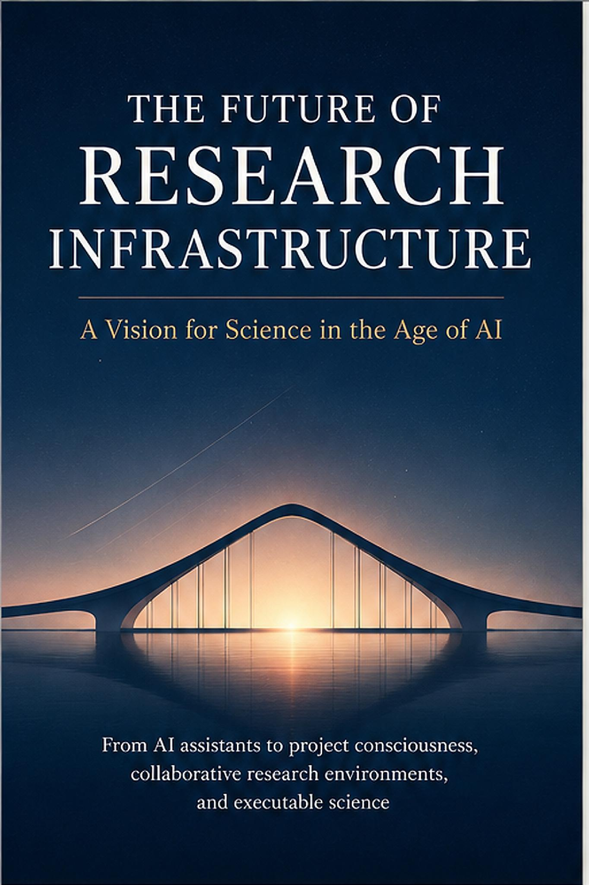
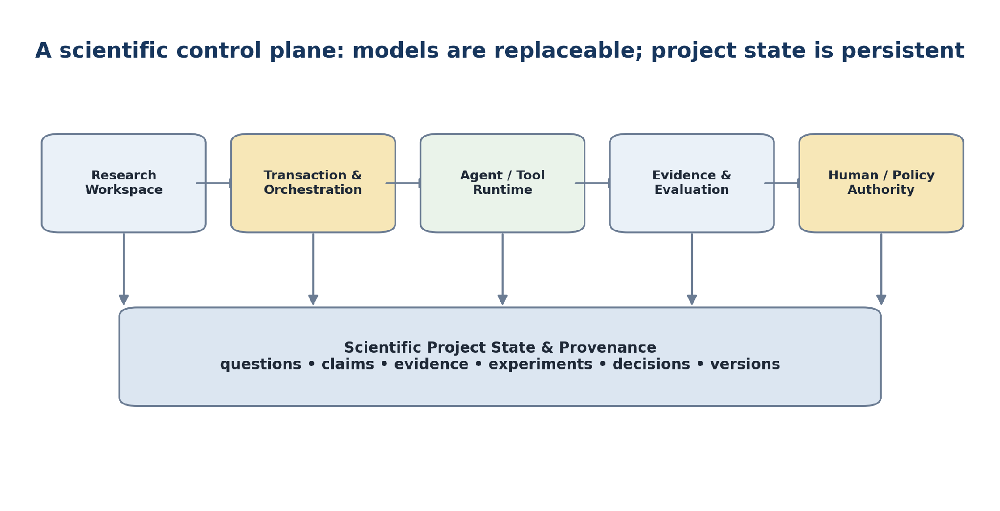
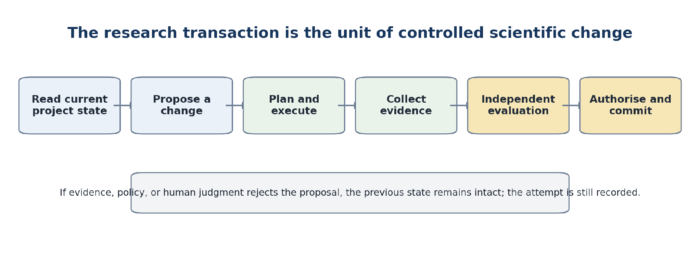
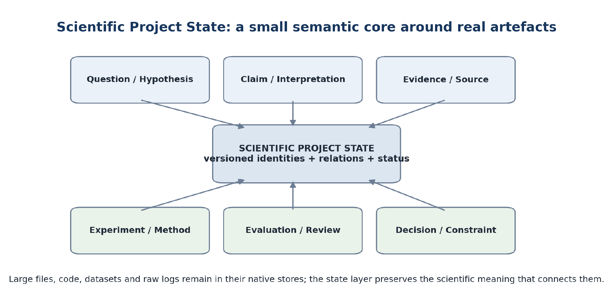
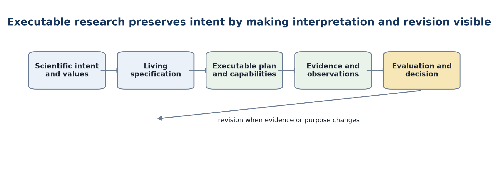
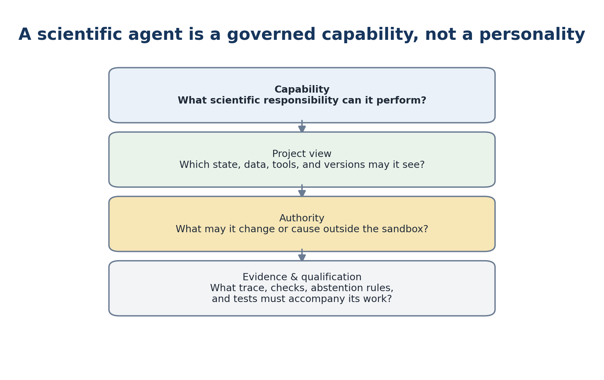
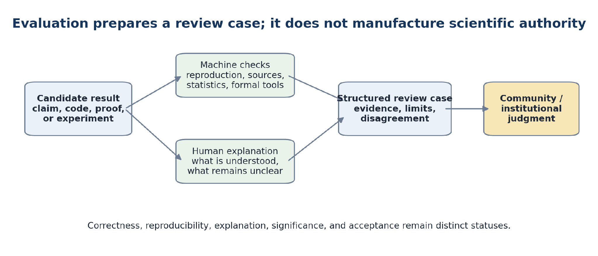
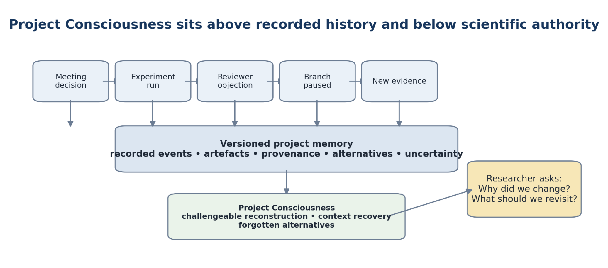
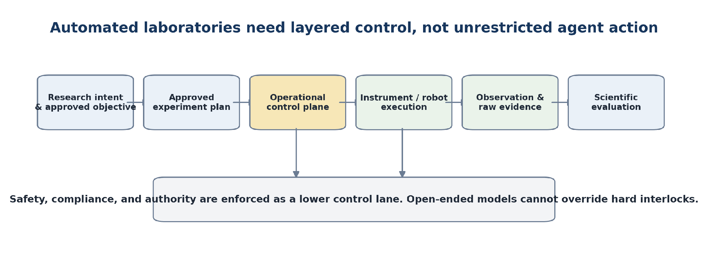
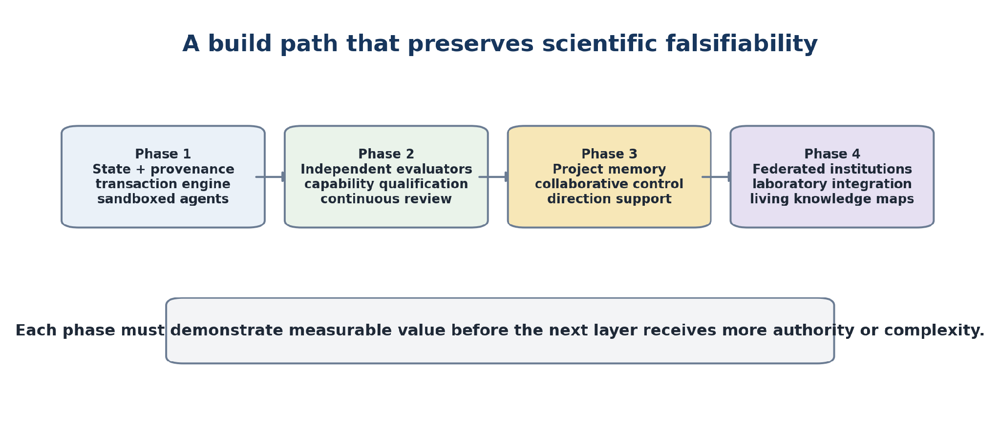

Toate drepturile rezervate.
Drepturile de publicare KDP sunt deținute de Outfinity SRL (Iași, România).
Disponibil gratuit la ScriptaHub.com.
Această lucrare a fost creată sub egida ScriptaHub, în cadrul a două programe de cercetare interconectate, unul dedicat inteligenței artificiale, iar celălalt Outfinitismului, ambele conduse de Sînică Alboaie. Pentru a explora detaliile modului în care aceste două programe se intersectează și se dezvoltă reciproc, invităm cititorii să viziteze pagina Outfinity Venture Studio la www.outfinity.ch.
Deși modelele lingvistice de inteligență artificială au fost folosite pentru a sprijini generarea textului, filosofia fundamentală, structura tematică și abordarea analitică provin exclusiv din deceniile de studiu dedicat ale autorului asupra fenomenelor sociale, tehnologiilor sociale și tehnologiilor avansate autentice rezultate din diverse proiecte de cercetare europene și autofinanțate. Recent, în cadrul proiectului de cercetare ScriptaHub, am studiat în profunzime literatura generată de IA și verificarea sa automată prin abordări neurosimbolice; toate cărțile gratuite puse la dispoziția publicului fac parte din suita de lucrări pe care le folosim pentru a testa cele mai recente tehnologii ale noastre.
Această ediție reorganizează argumentul în jurul unei întrebări inginerești simple: dacă organizațiile de cercetare încep să folosească IA nu ca asistent ocazional, ci ca participant persistent, ce infrastructură trebuie să existe sub modele? Manuscrisul anterior conținea cea mai mare parte a răspunsului, dar răspunsul era distribuit între discuții despre memoria proiectului, agenți, proveniență, evaluare, conformitate, asimilare științifică și laboratoare automatizate. Aici, acele idei sunt asamblate mai întâi într-o singură arhitectură. Restul cărții explică apoi de ce este necesară fiecare
permită să pretindă și cum poate fi testat întregul sistem, nu doar admirat.
Punctul de pornire rămâne activitatea ScriptaHub în jurul proiectului ScriptaHub și al experimentelor înrudite cu AssistOS, WebMeet, capacități agentice, execuție controlată, reprezentări explicite ale proceselor, proveniență și metode neurosimbolice. Aceste proiecte nu sunt prezentate ca o stivă finalizată. Sunt explorări practice ale unei probleme mai ample: cum să păstrăm continuitatea științifică, dovezile, responsabilitatea și înțelegerea când munca generată de mașini devine abundentă și când modelele, instrumentele, instituțiile și chiar laboratoarele se schimbă în timpul vieții unui proiect.
Eseul lui Terence Tao din 2026, Mathematics in the Age of AI, rămâne un interlocutor intelectual important. Mișcarea centrală a lui Tao este să întrebe pentru ce servește cercetarea odată ce rezultatele candidate devin mai ușor de produs. O demonstrație nu este încă o cunoaștere matematică; trebuie verificată, explicată, asimilată, acceptată și integrată în domeniu. Această carte generalizează diagnosticul. În știința empirică, codul poate rula în timp ce experimentul este prost proiectat. Un set de date poate fi autentic în timp ce interpretarea este falsă. Un manuscris îngrijit poate să nu conțină nicio contribuție importantă. Un laborator
| Capitolul |
|---|
| Capitolul 1. Capitolele ulterioare aprofundează argumentul și |
| Capitolul 1 — Infrastructura într-o singură lectură: ce ne trebuie de fapt |
| Capitolul 2 — De ce instrumentele existente de cercetare nu sunt suficiente |
| Capitolul 3 — Starea proiectului științific: substratul |
| Capitolul 4 — De la intenție științifică la muncă executabilă |
| Capitolul 5 — Agenții ca participanți științifici cu contribuții limitate |
| Capitolul 6 — Evaluare, recenzare și asimilare științifică |
| Capitolul 7 — Memoria proiectului și conștiința proiectului |
| Capitolul 8 — Direcție, valori și guvernanță continuă |
| Capitolul 9 — Inteligență de cercetare fundamentată și hibridă |
| Capitolul 10 — Când infrastructura ajunge în laborator |
| Capitolul 11 — Un program de construcție și cercetare |
Acest capitol este deliberat de sine stătător. Un cititor care se oprește aici ar trebui să înțeleagă totuși infrastructura propusă, problema pe care o rezolvă, granițele pe care le impune și ordinea în care ar trebui construită. Teza este concretă: cercetarea necesită un plan persistent de control științific, al cărui centru nu este un model sau un istoric de chat, ci o stare versionată a proiectului. Oamenii, agenții IA, instrumentele deterministe, cunoștințele externe și, în cele din urmă, sistemele de laborator operează în jurul acelei stări prin tranzacții controlate. Generarea rămâne ieftină și exploratorie; statutul științific mai puternic este câștigat prin dovezi, evaluare independentă și autoritate explicită. Secțiunile următoare trec de la schimbarea rarității în știință la arhitectură, la o tranzacție completă de cercetare și, în final, la o succesiune realistă de construcție. Capitolele ulterioare nu înlocuiesc această imagine. O testează, o califică și o aprofundează.
Cartea propune un plan de control al cercetării: un mediu persistent în care întrebările științifice, afirmațiile, dovezile, experimentele, deciziile, agenții, instrumentele și autoritatea umană rămân conectate în timp. Nevoia unui asemenea mediu apare de îndată ce IA poate genera mai multă muncă științifică plauzibilă decât poate o echipă verifica, înțelege și integra. Resursa rară se mută de la producție la judecată.
Imaginați-vă un laborator sau o companie de cercetare peste cinci ani, deși o mare parte a scenariului este deja posibilă tehnic. Un investigator principal începe dimineața cu o întrebare nerezolvată. Înainte de prânz, un agent de literatură a căutat în mai multe corpusuri, un agent de planificare a propus patru ramuri experimentale, un agent de programare a implementat două analize, un agent de reproducere a reluat un rezultat mai vechi, iar un evaluator IA a identificat o slăbiciune statistică într-o ramură. În paralel, colegii au discutat proiectul într-o ședință, au schimbat o presupunere și au decis că o direcție atractivă este prea scumpă de urmărit. Organizația a produs în câteva ore mai multă muncă decât putea produce cândva o echipă mică în săptămâni.
Nimic din această imagine nu garantează progresul științific. Echipa poate avea acum de zece ori mai multe artefacte și mai puțină claritate despre ce știe efectiv. Doi agenți pot să fi folosit versiuni diferite ale setului de date. Un experiment generat poate să fi fost proiectat pentru a optimiza un indicator comod, nu întrebarea științifică. O căutare în literatură poate să fi ratat un vocabular crucial. Un rezultat negativ poate fi îngropat într-un jurnal de execuție, în timp ce raportul îngrijit păstrează numai rulările reușite. O ședință poate să fi schimbat sensul proiectului fără a actualiza planul pe care agenții continuă să-l execute. Dacă un model este înlocuit luna viitoare, memoria sa conversațională poate dispărea și, odată cu ea, justificarea care ținea munca laolaltă.
Problema nu este lipsa inteligenței în instrumentele individuale. Este absența unei infrastructuri care face sensul științific persistent în timp ce inteligența este distribuită. Produsele IA actuale sunt organizate de regulă în jurul unei inferențe: asamblează contextul, trimit o cerere unui model, primesc un răspuns. Proiectele științifice sunt organizate în jurul unei istorii: o întrebare se schimbă, dovezile se acumulează, metodele eșuează, interpretările se ramifică, deciziile sunt revizuite, iar responsabilitatea se mută între oameni și instituții. O organizație de cercetare are, așadar, nevoie de un obiect care supraviețuiește fiecărui apel individual de model. Acel obiect este proiectul însuși, reprezentat ca o stare științifică explicită și versionată.
Schimbarea rarității este motivul mai profund. Știința a folosit istoric producția costisitoare ca filtru natural grosier. Experimentele luau timp, articolele necesitau efort susținut, studiile numerice consumau calcul rar, iar prototipurile fizice costau bani. Aceste filtre nu au fost niciodată garanții ale calității, dar limitau volumul muncii plauzibile pe care comunitățile trebuiau să-l absoarbă. IA slăbește filtrul producției. Poate redacta articole, propune ipoteze, genera cod, căuta combinații, construi diagrame și pregăti analize la cost marginal foarte mic. Rezultatele vizibile ale cercetării pot deveni, așadar, abundente înainte ca abilitățile mai lente care transformă rezultatele în cunoaștere să devină abundente.
Tao descrie versiunea matematică drept o deplasare de la raritatea demonstrațiilor spre abundența lor. O demonstrație candidată poate fi ieftină, în timp ce verificarea, explicația, asimilarea comunitară și canonizarea rămân costisitoare. Aceeași asimetrie apare în alte părți. Descoperirea medicamentelor poate avea o abundență de molecule candidate, în timp ce sinteza și dovezile clinice rămân rare. Cercetarea software poate avea o abundență de implementări, în timp ce evaluarea independentă rămâne scumpă. Științele sociale pot avea o abundență de narațiuni plauzibile, în timp ce măsurarea validă și identificarea cauzală rămân dificile. Laboratoarele automatizate pot genera un număr enorm de experimente posibile, în timp ce probele, timpul instrumentelor, evaluarea siguranței și timpul biologic rămân constrânse.
Problema infrastructurii începe când rata rezultatelor depășește metabolismul științific al organizației: capacitatea sa de a decide ce merită verificat, a conecta afirmații cu dovezi, a păstra eșecuri, a înțelege dezacorduri și a transforma unele rezultate în cunoaștere reutilizabilă. O fereastră de chat mai mare nu poate rezolva problema deoarece chatul este un format de interacțiune, nu un model al memoriei științifice. Un model fundamental mai puternic nu o poate rezolva singur deoarece proiectul trebuie să rămână semnificativ când modelul se schimbă. Mai mulți agenți pot intensifica problema dacă multiplică ramuri fără o reprezentare stabilă a sensului acelor ramuri.
Răspunsul propus este deliberat prudent. Nu necesită un cercetător artificial care deține procesul cercetării. Necesită un plan de control care păstrează procesul explicit. Mediul ar trebui să știe ce încearcă proiectul să descopere, ce afirmații sunt provizorii, ce dovezi există, ce experiment le-a produs, ce evaluator le-a verificat, cine sau ce a propus o schimbare, ce autoritate a acceptat acea schimbare și ce incertitudini rămân deschise. Modelele pot contribui atunci în roluri limitate. Instrumentele deterministe pot oferi garanții mai puternice unde este potrivit. Oamenii și instituțiile pot păstra autoritatea asupra sensului științific, riscului, publicării și acțiunii fizice.
Tabelul 1. Construcția minimă: responsabilități concrete și o primă formă implementabilă.
| Prima | formă | ||
|---|---|---|---|
| Responsabilitate | Ce trebuie să facă | de implementare practică | |
| Păstrează identități stabile, | |||
| versiuni, | statut, Jurnal de evenimente plus index relațional |
dependențe și metadate de acces sau de graf, legat de Starea proiectului științific pentru obiectele depozitele existente și care determină acțiunea științifică stocarea de obiecte.
.
Transformă intenții în planuri limitate, Serviciu de tranzacții cu Tranzacție și ramuri, execuții, puncte de integrare pentru fluxuri și orchestrare evaluări și decizii explicite planificare asistată de modele.
de aplicare definitivă.
Execută modele, cod, Medii izolate în containere, regăsire, simulări, adaptoare tipizate, porți de
| Mediu de execuție pentru agenți și instrumente și instrumente cu izolare, modele, | limite de resurse și acreditări cu domeniu limitat | și | |
|---|---|---|---|
| dovezi de execuție. | de capacitate. |
| Prima | formă | |||
|---|---|---|---|---|
| Responsabilitate | Ce trebuie să facă | de implementare practică | ||
| Atașează | verificări independente | |||
| Anvelopă | comună de evaluare | |||
| verificări | la afirmații, | |||
| pentru | pentru | |||
| Dovezi și | experimente, cod și | reproducere, citări, | ||
| evaluare | surse contopirea lor într-un singur scor. | fără | statistică, noutate, instrumente formale și evaluare umană. | |
| Politică de roluri și capacități | ||||
| Separă | ce | o clasificare a datelor, | ||
| Guvernanță și | componentă poate face de | porți de aprobare și | ||
| autoritate | ce i se permite să | |||
| schimbe sau provoace. | acțiuni auditabile. | externe | ||
| Permite cercetătorilor să interacționeze | ||||
| prin | documente, Spațiu web de | proiect | ||
| Spațiu de lucru pentru cercetare | cod, | ședințe, lucru care redă |
caiete de lucru, diagrame și editează starea
| și acces. | conversațional științifică comună. | ||
|---|---|---|---|
| Începe cu interogări ale stării | |||
| Recuperează | context, și rezumate de evenimente; | ||
| Memoria proiectului și | alternative, direcție, adaugă | Conștiința | |
| ulterior inteligență | și învățare pe termen lung proiectului numai după ce | ||
| istoricul autorizat. aceasta | este demnă de încredere. | este |
Tabelul 1 face propunerea intenționat concretă. Infrastructura nu este definită de un singur furnizor de modele sau de o singură bază de date. Este definită de responsabilități care trebuie să existe undeva în sistem. O implementare mică poate combina mai multe responsabilități într-un serviciu. Un consorțiu mai mare le poate distribui între organizații. Ceea ce contează este ca granița dintre stare, execuție, evaluare și autoritate să fie suficient de reală pentru a fi inspectată și impusă.
Tabelul dezvăluie și ce nu este propunerea. Conștiința proiectului, de exemplu, nu este baza de date. Este un serviciu de nivel superior care interpretează istoricul versionat. Un agent de noutate nu este autoritatea care decide dacă un program de cercetare este valoros. Este un evaluator care pregătește dovezi pentru o decizie. Un controler de laborator nu este un agent conversațional cu permisiuni ample. Este o interfață limitată de execuție sub constrângeri de siguranță de nivel inferior. Aceste distincții împiedică conceptele atractive să devină etichete vagi pentru întregul sistem.
Restul cărții poate fi, așadar, citit ca argument pentru un principiu arhitectural: generarea ar trebui să fie ușoară, dar angajamentul științific ar trebui să fie explicit. Un sistem poate permite explorare amplă în ramuri provizorii, cerând în același timp dovezi, verificări independente și autoritate potrivită înainte ca o afirmație să-și schimbe statutul, un rezultat să fie publicat, date restricționate să se deplaseze sau un experiment fizic să înceapă. Viteza se câștigă în etapele abundente. Reținerea se concentrează acolo unde eroarea devine costisitoare.
Acest principiu este compatibil și cu libertatea științifică. Mediul nu trebuie să formalizeze fiecare gând. Generarea de idei poate rămâne informală. Limbajul natural poate rămâne mediul principal pentru multe întrebări. Ipotezele alternative pot coexista. Scopul stării explicite nu este forțarea științei într-o singură ontologie; este să facă mica mulțime de relații care determină acțiunea și responsabilitatea suficient de persistentă pentru ca oamenii și mașinile să se poată coordona fără a reconstrui continuu sensul din proză.
Dacă cititorul reține o singură idee din această secțiune, aceasta ar trebui să fie că viitorul IDE de cercetare nu este în primul rând un editor cu un asistent IA. Este un plan de control științific cu editoare, caiete de lucru, ședințe și agenți familiari deasupra sa. Cel mai important produs al său nu este încă un răspuns. Cel mai important produs este un proiect care poate încă explica ce crede, de ce crede, ce rămâne incert și ce este autorizat să se întâmple în continuare după ce au trecut prin el mii de contribuții ale mașinilor.
Arhitectura propusă are în centru o stare persistentă a proiectului științific. Un spațiu de lucru pentru cercetare permite oamenilor să interacționeze cu acea stare. Un strat de tranzacții și orchestrare transformă intențiile în planuri controlate. Un mediu de execuție pentru agenți și instrumente efectuează munca în medii izolate. Un strat de dovezi și evaluare contestă rezultatele. Un strat de guvernanță și autoritate determină ce schimbări propuse pot deveni stare științifică aplicată definitiv sau acțiune externă. Modelele sunt participanți înlocuibili; starea proiectului este mecanismul continuității.
Cel mai ușor mod de a înțelege greșit propunerea este imaginarea unei aplicații monolitice numite IDE de cercetare care conține fiecare funcție viitoare. Interpretarea mai utilă este mai apropiată de un sistem de operare sau un plan de control. Infrastructura definește un număr mic de contracte care permit componentelor eterogene să lucreze la un proiect științific fără a le șterge garanțiile diferite. Un model lingvistic poate interpreta o cerere ambiguă. O bază de date poate regăsi înregistrări exacte. Un pachet statistic poate calcula o estimare. Un solver poate verifica o proprietate formală. Un om poate decide dacă rezultatul răspunde întrebării științifice. Sistemul devine demn de încredere nu pentru că o componentă este universal inteligentă, ci pentru că relația dintre aceste forme de muncă rămâne vizibilă.

Figura 1. Infrastructura cercetării ca plan de control științific. Starea proiectului persistă, în timp ce modelele și instrumentele rămân înlocuibile.
Diagrama este deliberat simplă deoarece arhitectura ar trebui să poată fi explicată pe o tablă. Spațiul de lucru pentru cercetare este suprafața destinată oamenilor. Conține forme familiare de muncă: documente, referințe, caiete de lucru, cod, seturi de date, figuri, ședințe, experimente și acces conversațional. Spațiul de lucru nu este sursa adevărului. Redă și editează obiecte științifice întreținute de starea proiectului. Un paragraf dintr-un manuscris poate fi astfel legat de o afirmație. O figură poate fi legată de rularea experimentului care a produs-o. O decizie dintr-o ședință poate propune o schimbare de stare, nu să devină autoritară doar pentru că a apărut într-o transcriere.
Starea proiectului științific și proveniența formează coloana vertebrală. Un strat minim de stare dă identități și versiuni stabile întrebărilor, ipotezelor, afirmațiilor, dovezilor, metodelor, experimentelor, evaluărilor, deciziilor, constrângerilor și artefactelor importante. Înregistrează relații precum susține, contrazice, depinde de, înlocuiește, produs de, evaluat de și acceptat de. Obiectele binare mari nu trebuie să trăiască într-o singură bază de date de graf. Codul poate rămâne în Git, datele într-un depozit de obiecte, articolele într-un sistem de documente, iar jurnalele instrumentelor într-o platformă de laborator. Stratul de stare păstrează sensul științific care conectează acele depozite.
Stratul de tranzacții și orchestrare transformă o cerere în muncă științifică controlată. Răspunde de planificare, ramificare, selectarea capacităților, atribuirea bugetelor, gestionarea reîncercărilor, observarea dependențelor, solicitarea evaluării și escaladarea deciziilor. Nu ar trebui să fie un oracol științific. Pentru unele sarcini, planul poate fi un flux fix. Pentru altele, poate fi construit dinamic de un agent. Cerința stabilă este ca planul ales, intrările, presupunerile și granițele autorității să devină inspectabile înaintea sau în timpul execuției, nu să rămână ascunse în raționamentul intern al unui model.
Mediul de execuție pentru agenți și instrumente este locul unde intențiile devin operații. Gestionează apeluri de modele, agenți de programare, servicii de regăsire, simulări, montări de date, acreditări, programe locale, API-uri externe și, în cele din urmă, adaptoare de laborator. Fiecare rulare ar trebui să aibă o identitate, intrări declarate, metadate ale mediului, consum de resurse, ieșiri și stare de eșec. Izolarea aparține acestui loc deoarece un model care poate citi un depozit ostil nu ar trebui să moștenească acces nerestricționat la rețea sau secretele proiectului. Mediul de execuție este și locul unde înlocuirea modelului devine practică: același rol științific poate fi reimplementat cu alt model, păstrând contractul de intrare, ieșire, dovezi și politică al rolului.
Dovezile și evaluarea sunt separate deliberat de generare. Un verificator de citări, un serviciu de reproducere, un validator statistic, un solver formal, o căutare a contradicțiilor, o analiză a noutății și o evaluare umană nu sunt interschimbabile, dar pot împărtăși o anvelopă comună. Fiecare evaluator își identifică ținta, metoda, intrările, ieșirea, incertitudinea, versiunea și domeniul. Mai mulți evaluatori pot fi în dezacord. Infrastructura ar trebui să păstreze dezacordul, nu să-l medieze într-un singur scor de încredere. Evaluarea produce un dosar de recenzare; nu produce automat adevăr.
Guvernanța și autoritatea decid ce consecințe poate crea o componentă. Capacitatea și autoritatea trebuie separate. Un agent poate fi capabil să scrie cod fără a fi autorizat să-l execute pe date confidențiale. Un agent de literatură poate căuta în corpusuri publice fără a dezvălui o ipoteză nepublicată unui serviciu extern. Un agent de ședință poate redacta o decizie de proiect fără a o aplica definitiv. Un agent de planificare a laboratorului poate propune un protocol fără a mișca un braț robotic. Rolurile umane și instituționale, politicile deterministe, clasificările datelor, granițele siguranței, bugetele și aprobările devin, așadar, părți prelucrabile automat ale mediului de cercetare.
Aceste straturi comunică prin obiecte tipizate ale proiectului și tranzacții de cercetare, nu doar prin conversații informale între agenți. Aceasta contează deoarece chatul între agenți este o graniță slabă de sisteme. Dacă un agent îi spune altuia că un rezultat a fost verificat, agentul primitor trebuie să creadă formularea, să înțeleagă domeniul și să deducă autoritatea. Dacă evaluarea există ca obiect cu metodă și versiune cunoscute, componenta primitoare poate raționa despre statutul exact. Schimbul structurat reduce cantitatea de sens științific care trebuie reinventată în fiecare prompt.
Tabelul 2. Responsabilitățile stabile contează mai mult decât tehnologia aleasă pentru implementarea lor.
| Strat | Responsabilitate stabilă | ||
|---|---|---|---|
| Prezintă obiectele proiectului în interfețe familiare | |||
| Spațiu de lucru | de cercetare și face vizibilă participarea mașinilor. | ||
| Păstrează identitate, statut, versiuni, | |||
| Stare științifică și proveniență | relații ale dovezilor, metadate de acces și istoric autoritar. | ||
| Planifică, ramifică, bugetează, oprește, coordonează | |||
| Orchestrare | capacități, solicită evaluare și escaladează decizii. | ||
| Execută modele și instrumente în medii | |||
| Mediu de execuție | controlate acțiuni cu consecințe importante. | și | captează |
| Contestă ieșirile prin metode | |||
| Evaluare | al căror domeniu și mod de eșec rămân explicite. | ||
| Impune permisiuni, reguli de date, | |||
| Guvernanță și autoritate | aprobări, granițe de siguranță și praguri ale acțiunii externe. |
Tabelul separă responsabilitatea de implementare. Un prototip mic ar putea folosi o bază de date relațională pentru stare, un jurnal de evenimente pentru tranziții, stocare compatibilă S3 pentru artefacte mari, Git pentru cod, medii izolate în containere pentru execuție și API-uri de modele în spatele unor învelișuri specifice rolului. Niciuna dintre acele tehnologii nu este teza. Teza este că sistemul trebuie să păstreze contractele chiar dacă implementarea se schimbă ulterior. Aceasta împiedică programul de cercetare să-și confunde prototipurile curente cu adevărul arhitectural permanent.
Aceeași separare clarifică poziția muncii ScriptaHub actuale. AssistOS și IDE-ul ScriptaHub explorează spațiul de lucru și continuitatea centrată pe proiect. WebMeet explorează suprafața colaborării comune. ScriptaHubAgentLib și munca agentică înrudită explorează capacități reutilizabile. Ploinky explorează implementarea controlată și izolarea. Experimentele MRP-VM și SOP Lang investighează reprezentări explicite ale proceselor și granița dintre propunerile mediate lingvistic și execuția inspectabilă. OpenDSU explorează identitatea, continuitatea versiunilor și partajarea controlată peste granițe organizaționale. Aceste direcții pot converge fără a necesita supraviețuirea neschimbată a fiecărei componente curente.
O arhitectură bună ar trebui să rămână utilă chiar dacă unele ipoteze de cercetare eșuează. Să presupunem că Conștiința proiectului se dovedește nefiabilă ca serviciu narativ. Starea persistentă a proiectului și proveniența rămân valoroase. Să presupunem că un strat de execuție simbolică creează efort excesiv de redactare. Agenții controlați și evaluarea explicită contează în continuare. Să presupunem că modelele fundamentale devin dramatic mai fiabile. Versionarea, permisiunile, reproductibilitatea și responsabilitatea umană nu dispar. Arhitectura își câștigă credibilitatea făcând componentele speculative înlocuibile.
Viziunea practică a produsului urmează firesc. La suprafață, cercetătorii pot continua să folosească documente, chat, cod, ședințe, caiete de lucru și vizualizări de domeniu. Dedesubt, acele interfețe operează pe aceeași stare a proiectului și același model al autorității. Cercetătorul nu trebuie să devină inginer de baze de date. Structura formală apare progresiv acolo unde îmbunătățește reproductibilitatea, controlul sau explicația. Un document poate rămâne document până când o afirmație necesită urmărirea dovezilor. O conversație poate rămâne exploratorie până când grupul decide să creeze un experiment. O analiză generată poate rămâne provizorie până când evaluarea independentă justifică promovarea.
Această proiectare stratificată este mai puțin spectaculoasă decât un cercetător artificial universal, dar este un fundament mai puternic pentru organizațiile științifice. Permite creșterea capacității fără a cere încrederii să crească la aceeași viteză. Sistemul poate acorda autonomie mai amplă rolurilor care au câștigat-o, păstra autoritate îngustă pentru acțiuni cu risc ridicat și înlocui modele fără a reseta proiectul. În acest sens, planul de control nu este un obstacol în calea unei IA mai capabile. Este infrastructura care permite unei IA mai capabile să devină utilizabilă științific.
Unitatea de bază a muncii este o tranzacție de cercetare. Un participant citește o stare cunoscută a proiectului, propune o schimbare, planifică și execută muncă limitată, colectează dovezi, supune rezultatul evaluării independente și schimbă starea autoritară numai când autoritatea umană sau instituțională configurată acceptă tranziția. Încercările eșuate rămân parte a istoriei fără a fi confundate cu angajamentul științific.
O arhitectură concretă devine mai ușor de înțeles când este urmărită printr-un episod complet. Să considerăm o echipă de cercetare care întreabă dacă o metodă nouă de regularizare îmbunătățește robustețea unui model de învățare automată sub o anumită schimbare a distribuției. Într-un flux obișnuit centrat pe asistent, cercetătorul ar putea cere unui model să analizeze literatura, să genereze cod, să ruleze un experiment și să rezume rezultatul. Răspunsul final ar putea fi util, dar organizarea științifică a muncii ar rămâne în mare parte implicită. O tranzacție de cercetare face explicită fiecare tranziție cu consecințe importante fără a cere cercetătorului să completeze manual formulare administrative.
Tranzacția începe dintr-o versiune a stării. Proiectul curent conține deja întrebarea, modelul de referință, versiunea acceptată a setului de date, experimentele anterioare, constrângerile cunoscute și poate o decizie că robustețea sub această schimbare este importantă strategic. Un planificator primește o vedere autorizată a acelei stări. Poate folosi un model lingvistic pentru a propune un experiment, dar propunerea devine un obiect candidat de plan. Planul identifică revizia codului, seturile de date, metricile, reperele de comparație, costul așteptat al resurselor și ce rezultat ar conta ca dovadă relevantă. Dacă întrebarea științifică este ambiguă, planul ar trebui să păstreze ambiguitatea sau să ceară clarificare, nu să o restrângă tacit.

Figura 2. Tranzacția de cercetare este unitatea schimbării științifice controlate.
Faza execuției este separată deliberat de schimbarea stării. Un agent de programare poate crea o ramură, modifica implementarea și rula experimentul într-un mediu izolat. Mediul de execuție înregistrează versiunile mediului, parametrii, consumul de resurse, ieșirile și eșecurile. Dacă codul nu rulează, tranzacția are un eșec operațional. Acel eșec nu slăbește ipoteza științifică. Dacă experimentul rulează și nu arată nicio îmbunătățire, rezultatul este o observație științifică negativă, nu un eșec al agentului. Această distincție este esențială deoarece automatizarea cercetării tinde altfel să contopească rezultatele operaționale și epistemice într-un singur indicator de succes.
Dovezile sunt apoi asamblate. Rezultatul poate include metrici brute, intervale de încredere, grafice, dovezi de execuție, referințe de cod și legături către versiunea exactă a datelor. Un rol de reproducere poate reconstrui mediul și relua independent experimentul. Un evaluator statistic poate verifica dacă comparația este susținută de proiectare. Un rol de literatură sau noutate poate determina dacă metoda este deja cunoscută sub alt nume. Un evaluator metodologic poate contesta dacă schimbarea selectată a distribuției este semnificativă. Acești evaluatori nu trebuie să fie de acord, iar dezacordul lor este el însuși o stare științifică.
Numai după evaluare întreabă tranzacția dacă proiectul ar trebui să-și schimbe starea autoritară. Un cercetător uman poate accepta dovezile și promova o afirmație de la candidată la susținută. Echipa poate în schimb păstra afirmația contestată, solicita alt experiment sau respinge interpretarea păstrând rezultatul brut. O politică a proiectului ar putea permite aplicarea definitivă automată a rezultatelor computaționale de rutină când verificările independente trec, cerând totodată aprobare explicită pentru afirmații destinate publicării. Sistemul înregistrează atât acțiunea, cât și autoritatea sub care a avut loc.
Modelul tranzacției rezolvă mai multe probleme simultan. Dă concurenței un sens. Doi agenți pot porni din aceeași stare și propune schimbări incompatibile fără a se suprascrie tacit reciproc. Sistemul poate păstra ambele ramuri și cere reconciliere. Dă revenirii un sens științific. Dacă ulterior se constată că un set de date conține o eroare, afirmațiile dependente pot fi marcate pentru reconsiderare fără a șterge faptul istoric că au fost cândva acceptate sub starea anterioară a cunoașterii. Dă și provenienței un punct natural de captare deoarece tranzacția cunoaște deja actorii, intrările, instrumentele, mediul, ieșirile și decizia.
Tabelul 3. O tranzacție de cercetare poate produce mai multe rezultate semnificative științific.
| Rezultat | Semnificație pentru proiect |
|---|---|
| Execuția și evaluarea susțin o schimbare de stare | |
| Dovezi pozitive aplicate definitiv | acceptată sub autoritatea necesară. |
| Experimentul sau analiza a rulat | |
| Rezultat științific negativ | adecvat, dar nu a susținut afirmația candidată. |
| Testul științific intenționat nu a fost | |
| Eșec operațional | finalizat deoarece codul, datele, mediul sau echipamentul au eșuat. |
| Există dovezi, dar evaluatorii sau | |
| Rezultat contestat | oamenii sunt în dezacord asupra interpretării sau adecvării. |
| O condiție de politică, drepturi, siguranță sau autoritate | |
| Acțiune blocată | împiedică execuția sau consecința externă. |
| Rezultatul poate fi valoros, dar nu a | |
| Păstrare provizorie | câștigat autoritate matură sau înțelegere umană suficientă. |
Tabelul este util deoarece previne o eroare frecventă de categorie în sistemele agentice: presupunerea că fiecare sarcină finalizată ar trebui să se încheie cu o actualizare pozitivă. Tranzacțiile de cercetare se pot încheia cu rezultate valoroase fără aplicare definitivă. Un experiment poate arăta că efectul propus este absent. O căutare de noutate poate dezvălui că ideea centrală este cunoscută. O verificare de conformitate poate bloca un transfer de date sugerând o alternativă sigură. O încercare de reproducere poate rămâne nerezolvată deoarece lipsește o dependență externă. Păstrarea acestor rezultate face organizația să învețe din eșec, nu să-l ascundă în spatele reîncercărilor.
Același tipar de tranzacție se scalează dincolo de experimentele computaționale. În analiza literaturii, schimbarea propusă ar putea fi o nouă relație afirmație-dovezi. Într-un manuscris, ar putea fi o interpretare revizuită. Într-o ședință, ar putea fi o decizie de suspendare a unei ramuri. În conformitate, ar putea fi aprobarea unei acțiuni specifice asupra datelor sub o versiune definită de politică. Într-un laborator, ar putea fi un plan aprobat de experiment, a cărui execuție este delegată controlerelor instrumentelor, dar a cărui interpretare științifică rămâne o tranzacție ulterioară.
Tranzacția creează și o graniță explicită pentru acțiunile externe. Publicarea unui articol, trimiterea unui e-mail unui partener extern, cumpărarea unei alocări mari de calcul, transferul datelor restricționate sau emiterea de comenzi către echipament fizic nu sunt doar apeluri de instrumente. Schimbă lumea din afara proiectului și pot fi ireversibile. Arhitectura poate, așadar, cere un prag mai înalt de autoritate decât folosește pentru munca reversibilă în mediu izolat. Experiența utilizatorului poate rămâne simplă, dar distincția de bază trebuie să poată fi impusă.
O tranzacție de cercetare nu urmărește birocratizarea fiecărui gând. Cea mai mare parte a limbajului exploratoriu nu trebuie să devină tranzacție. Tranziția apare când munca creează sau schimbă un obiect științific persistent, consumă resurse controlate, traversează o graniță a drepturilor sau asumă un angajament extern. Aceasta seamănă cu controlul versiunilor în software: dezvoltatorii nu înregistrează fiecare apăsare de tastă, dar schimbările semnificative capătă identitate și istoric. Munca științifică necesită un nivel echivalent de granularitate disciplinată.
Modelul tranzacției este și o parte falsificabilă a programului. Se poate dovedi că o tranzacție semantică bogată este inutilă pentru multe sarcini și că înregistrarea obișnuită pe bază de evenimente plus metadate ușoare captează suficientă valoare. Acesta ar fi un rezultat util. Afirmația arhitecturală nu este că fiecare act de cercetare necesită o schemă complexă. Este că organizația are nevoie de un mecanism stabil pentru a distinge propuneri, execuții, dovezi, evaluări și schimbări acceptate. Ar trebui să câștige cel mai mic mecanism care păstrează fiabil acea distincție.
Odată ce această unitate există, multe alte concepte din carte încetează să plutească. Conștiința proiectului observă tranzacțiile și istoricul lor. Versionarea înregistrează ramurile lor. Evaluarea se atașează ieșirilor lor. Guvernanța le controlează consecințele. Spațiul de lucru pentru cercetare le vizualizează starea. Agenții participă prin roluri limitate. Laboratorul automatizat execută o formă specializată de tranzacție cu porți de siguranță mai puternice. Ceea ce părea o colecție de concepte devine un sistem cu un ritm operațional recurent.
Construcția pe termen scurt ar trebui să fie mai mică decât viziunea completă: stare științifică persistentă, proveniență versionată, motor de tranzacții, execuție agentică limitată, puncte de integrare pentru evaluare independentă și un spațiu utilizabil de cercetare. Conștiința proiectului, inteligența sofisticată a direcției, federația între instituții și controlul automatizat al laboratorului pot fi apoi dezvoltate ca straturi de cercetare. Arhitectura ar trebui să-și câștige complexitatea prin beneficii măsurate.
O viziune devine credibilă când poate spune ce ar trebui să construiască mai întâi zece ingineri. Infrastructura minimă viabilă de cercetare nu este o ontologie universală, o flotă de zeci de agenți sau un laborator robotic. Este un mediu centrat pe proiect care poate urmări un episod real de cercetare de la intenție la dovezi și evaluare, păstrând starea și autoritatea. Dacă acesta nu poate fi făcut util, straturile mai ambițioase nu au fundament.
Prima țintă inginerească este o stare minimă a proiectului științific. Ar trebui să conțină numai obiecte care îmbunătățesc acțiunea sau evaluarea. Întrebările, afirmațiile, dovezile, experimentele, deciziile, constrângerile, evaluările și artefactele sunt suficiente pentru început. Fiecare obiect necesită o identitate stabilă, versiune, actor, statut, legături de proveniență și metadate de acces. Implementarea poate combina un depozit de evenimente pentru schimbări, o bază de date pentru relații indexate, depozite obișnuite pentru cod și documente și un depozit de obiecte pentru date mari. Starea proiectului nu trebuie să conțină lumea. Trebuie să facă situația curentă a cercetării reconstructibilă.
A doua țintă este un motor de tranzacții legat de execuție controlată. Un utilizator sau agent ar trebui să poată propune o schimbare față de o stare cunoscută, invoca o capacitate, rula instrumente într-un mediu izolat, colecta ieșiri, solicita verificări specificate și cere aplicarea definitivă sub politică. Acest motor este locul unde se întâlnesc apelurile modelelor, execuția containerelor, permisiunile și captarea dovezilor. Este și locul unde un sistem poate începe să distingă o ciornă de o schimbare autoritară a proiectului.
A treia țintă este un registru mic de capacități. În loc să trateze agenții ca personaje, platforma ar trebui să știe că o anumită implementare efectuează regăsirea literaturii, reproducerea codului, verificarea citărilor, planificarea experimentelor sau alt rol limitat. Registrul înregistrează intrările acceptate, ieșirile produse, instrumentele necesare, limitele sensibilității datelor, costul estimat, condițiile abținerii și evaluatorii necesari înainte ca ieșirea să poată fi aplicată definitiv. Prima versiune poate fi redactată manual. Munca ulterioară poate investiga cum devin improvizațiile reușite capacități reutilizabile calificate.
A patra țintă este o anvelopă de evaluare. Un proiect ar trebui să poată atașa evaluări multiple aceluiași obiect fără a le contopi într-un scor unic. Un rezultat de reproducere, o verificare a citărilor, o apreciere statistică, o comparație de noutate și o evaluare umană ar trebui toate să-și identifice metoda și domeniul. Aceasta creează valoare imediată chiar înainte ca evaluatorii să devină sofisticați, deoarece sistemul poate înceta folosirea cuvintelor ambigue precum verificat ca și cum ar avea un sens universal.
A cincea țintă este spațiul de lucru. Cercetătorii trebuie să poată folosi sistemul fără a gândi în operații de baze de date. Documentele, codul, caietele de lucru, figurile, ședințele și asistența conversațională ar trebui să rămână familiare. Noua structură apare când este utilă. Un cercetător poate întreba de ce este crezută o afirmație și primi legături către dovezi. Un manuscris poate indica faptul că un paragraf a devenit învechit deoarece afirmația sa de bază s-a schimbat. O ședință poate propune o decizie și arăta că încă așteaptă aprobare. O informare de proiect poate rezuma schimbările stării, nu volumul mesajelor.
Tabelul 4. Fundamentul mai întâi: ce ar trebui să fie angajament ingineresc și ce ar trebui să rămână cercetare.
| Strat | Statut într-un program credibil |
|---|---|
| Stare, proveniență, tranzacții și execuție izolată | Fundament ingineresc care trebuie să funcționeze pe proiecte reale înainte de formularea afirmațiilor mai puternice. |
| Anvelopă de evaluare și registru | Inginerie pe termen scurt plus calificarea |
| al capacităților | empirică a rolurilor individuale. |
| Conștiința proiectului și inteligența direcției | Ipoteze de cercetare construite deasupra unui istoric fiabil al proiectului și evaluate pentru distorsiune, utilitate și supraîncărcare. |
Obiecte federate de cercetare între instituții Strat ulterior de interoperabilitate, păstrând
| obiecte | politica locală și controlul datelor. |
|---|---|
| Extensie ulterioară cu consecințe importante, | |
| Supraveghere automatizată a laboratorului | începând cu adaptoare către facilități existente și sisteme native de siguranță. |
Tabelul distinge fundamentul ingineresc de ambiția cercetării. Această separare este importantă pentru gestionarea programului. Un proiect poate promite că substratul stării și tranzacțiilor va fi construit, tratând Conștiința proiectului sau selecția automată a direcției ca ipoteze de testat. Aceasta evită un eșec comun în proiectele IA ambițioase, unde componentele speculative sunt descrise ca și cum utilitatea lor ar fi fost deja demonstrată.
Conștiința proiectului aparține celui de-al doilea val deoarece depinde de istoric demn de încredere. Un sistem nu poate reconstrui de ce s-a schimbat un proiect dacă evenimentele, ramurile, dovezile și deciziile de bază nu au fost niciodată captate. Odată ce există fundamentul, ipoteza devine testabilă: poate o IA în mare parte pasivă să reconstruiască precis decizii, să păstreze interpretări alternative, să recupereze idei abandonate când condițiile se schimbă și să facă aceasta fără a transforma memoria proiectului în supraveghere? O narațiune convingătoare, dar nesusținută, ar trebui numărată ca eșec.
Inteligența direcției aparține și ea deasupra fundamentului. Evaluarea noutății, semnificația, valoarea învățării, riscul, costul și potrivirea strategică sunt importante, dar periculoase când sunt comprimate într-un oracol. Un serviciu de direcție ar trebui, așadar, să consume stare explicită a proiectului și să producă comparații contestabile. Poate deveni mai util pe măsură ce proiectul acumulează istoric intern. Succesul său ar trebui măsurat prin decizii mai bune și efort științific economisit, nu prin eleganța clasamentelor.
Federația între instituții este un alt strat ulterior. Arhitectura ar trebui proiectată astfel încât partenerii să poată schimba obiecte tipizate de cercetare, dovezi de execuție și capacități limitate fără a centraliza toate datele. Dar primul prototip nu trebuie să rezolve fiecare problemă de confidențialitate și interoperabilitate. Necesită identități curate, proveniență și granițe de acces astfel încât federația să poată fi adăugată fără rescrierea nucleului științific.
Integrarea automatizată a laboratorului ar trebui să vină și mai târziu, deoarece acțiunea fizică ridică prețul greșelilor arhitecturale. Un prototip de laborator pe termen scurt ar trebui să fie de supraveghere, nu universal: să conecteze una sau două facilități automatizate existente prin adaptoare, să păstreze sistemele native de siguranță, să înregistreze protocoale aprobate și execuția reală și să testeze dacă mediul de cercetare îmbunătățește trasabilitatea sau calitatea deciziei. Scopul nu este demonstrarea faptului că un LLM poate opera un robot.
Scopul este să arate că controlul științific stratificat supraviețuiește contactului cu lumea fizică.
Programul ar trebui să rămână și dispus să simplifice. Dacă cercetătorii constată că obiectele explicite de afirmație adaugă puțină valoare într-un anumit domeniu, modelul stării ar trebui redus. Dacă un serviciu de memorie bazat pe LLM introduce distorsiuni sigure pe sine, autoritatea sa ar trebui restrânsă la regăsire. Dacă un flux simbolic adaugă mai multă întreținere decât fiabilitate, ar trebui folosit numai unde garanțiile justifică costul. Infrastructura ar trebui să crească din necesitate măsurată, nu din dorința afișării sofisticării arhitecturale.
Această reținere face parte din caracterul științific al propunerii. Sistemul nu este oferit ca viitor inevitabil. Este o mulțime de ipoteze despre ce devine necesar când crește contribuția mașinilor. Cea mai importantă ipoteză este că starea explicită a proiectului, proveniența, execuția limitată, evaluarea independentă și autoritatea creează valoare cumulativă în episoade lungi de cercetare în comparație cu dosare, chat-uri, depozite și asistenți ad-hoc. Acea afirmație poate fi testată cu proiecte reale, episoade de corectare, înlocuiri de modele, sarcini de integrare a noilor participanți și cazuri adversariale.
Dacă capitolul 1 este singurul capitol pe care cititorul are timp să-l citească, propunerea ar trebui să fie acum clară. Construiți o stare științifică persistentă. Faceți munca semnificativă să treacă prin tranzacții controlate. Lăsați agenții și instrumentele să opereze ca niște capacități înlocuibile cu autoritate explicită. Păstrați evaluarea independentă și delimitată. Păstrați responsabilitatea umană și instituțională pentru tranziții cu consecințe importante. Așezați deasupra interfețe familiare de cercetare. Apoi investigați memoria mai bogată, sprijinul direcției, federația și autonomia laboratorului ca straturi a căror valoare trebuie câștigată. Capitolele rămase explică de ce fiecare dintre aceste alegeri rezultă din natura schimbătoare a științei în era IA.
După enunțarea arhitecturii, următoarea întrebare este dacă un asemenea strat este într-adevăr necesar. Organizațiile de cercetare dețin deja editoare excelente de documente, depozite, caiete de lucru, platforme de date, motoare de fluxuri, manageri de referințe, instrumente colaborative și asistenți IA. Problema nu este că aceste instrumente sunt primitive; este că fiecare deține de regulă numai un artefact sau o activitate locală. Relațiile științifice care fac coerent un proiect rămân în mare parte implicite în memoria umană. Acest capitol examinează de ce IA face acel decalaj costisitor operațional, de ce abundența mută raritatea în loc să o elimine și de ce continuitatea proiectului trebuie să supraviețuiască schimbărilor modelului, personalului și instituției. Argumentul este deliberat comparativ: infrastructura nouă ar trebui să completeze instrumentele existente și să justifice fiecare strat suplimentar printr-o problemă pe care acestea nu o rezolvă deja bine.
Software-ul de cercetare gestionează deja documente, cod, seturi de date, caiete de lucru, fluxuri, referințe și comunicare. Ceea ce nu gestionează de regulă este sensul științific care le conectează. IA expune această lacună deoarece agenții trebuie să deducă, la fiecare sarcină, ce artefact este autoritar, ce ipoteză este activă, ce experiment a invalidat o afirmație și ce decizie a înlocuit una anterioară.
Un proiect actual de cercetare poate fi sofisticat tehnologic, rămânând informal semantic. Manuscrisul trăiește într-un editor de documente. Codul trăiește în Git. Rezultatele experimentale trăiesc în caiete de lucru și spații de stocare.
sistem de gestionare a proiectelor. Deciziile importante trăiesc în procese-verbale, e-mailuri sau memoriile cercetătorilor seniori. Fiecare instrument își poate îndeplini sarcina locală extrem de bine. Proiectul științific apare numai în mințile oamenilor care înțeleg cum se leagă piesele.
Pentru echipele umane, această organizare este incomodă, dar suportabilă, deoarece cercetătorii repară continuu contextul prin conversație. Își amintesc că o figură din manuscris provine dintr-o rulare mai veche și nu ar trebui considerată fiabilă. Știu că un rezultat aparent negativ a fost cauzat de o problemă de instrument. Își amintesc că o ramură a fost abandonată din motive bugetare, nu pentru că ipoteza a fost infirmată. Știu ce foaie de calcul este actuală chiar când mai multe fișiere au nume similare. O mare parte a coordonării științifice constă în integrare semantică tacită.
Agenții IA nu moștenesc automat acel strat tacit. Un agent căruia i se cere să actualizeze un raport trebuie să reconstruiască proiectul din artefactele accesibile. Regăsirea poate găsi text relevant, dar relevanța nu este autoritate. Un mesaj recent poate descrie o idee tentativă, în timp ce o decizie mai veche rămâne politică acceptată. Un caiet de lucru poate conține cod exploratoriu care nu a fost niciodată validat. Un manuscris poate rămâne în urma setului de date. Un sistem de căutare vectorială poate regăsi pasaje similare semantic fără a ști care a fost înlocuit. Pe măsură ce crește activitatea agenților, costul și riscul deducerii repetate a stării științifice din artefacte brute cresc odată cu ea.
Soluția nu este introducerea fiecărui obiect de cercetare într-o bază de date universală rigidă. Domeniile științifice diferă prea mult, iar formalizarea prematură poate îngheța o reprezentare proastă. Soluția este identificarea unui nucleu semantic mic care contează între domenii. Întrebările spun proiectului ce încearcă să rezolve. Afirmațiile exprimă propoziții al căror statut se poate schimba. Dovezile indică observații, surse, calcule sau analize validate. Experimentele leagă metodele de intrări și medii. Deciziile înregistrează schimbări autoritare de direcție. Constrângerile reprezintă limite de siguranță, juridice, etice, de resurse sau științifice. Evaluările contestă obiecte fără a le suprascrie. Acestea nu sunt o teorie a științei; sunt o gramatică operațională a coordonării.
O stare a proiectului oferă artefactelor și context stabil. Un document nu mai este doar cel mai recent fișier. Poate fi o vedere asupra afirmațiilor și dovezilor la o anumită versiune a proiectului. O figură poate identifica rularea care a generat-o. Un set de date poate declara ce analize depind de versiunea sa curentă. O decizie de ședință poate fi legată de dovezile considerate atunci. Când un obiect se schimbă, părțile dependente ale proiectului pot fi marcate pentru reconsiderare, nu să piardă tacit sincronizarea.
Tabelul 5. Instrumentele existente de cercetare sunt puternice local, dar lasă relațiile științifice în mare parte implicite.
Ce rămâne în afara responsabilității normale Categorie de instrument
sale
Dacă o afirmație este actuală, ce Tabelul clarifică de ce infrastructura propusă completează instrumentele existente în loc să le înlocuiască. Git rămâne excelent pentru istoricul fișierelor. Un caiet de lucru rămâne excelent pentru calcul interactiv. Un manager de referințe rămâne excelent pentru organizarea literaturii. Stratul lipsă este relația științifică dintre acele sisteme. IDE-ul de cercetare ar trebui, așadar, să le integreze, nu să le imite, păstrând punctele lor forte native și expunând deasupra lor obiecte tipizate de cercetare și tranziții de stare.
| Editor de documente | dovezi o susțin și ce experiment a făcut paragraful învechit. |
|---|---|
| Depozit Git | Ce înseamnă științific o ramură și de ce a fost acceptată o integrare. |
| Dacă o ieșire este dovadă validă pentru | |
| Caiet de lucru sau platformă de date | afirmația proiectului și ce decizie depinde de ea. |
| Ce pasaj-sursă susține o anumită | |
| Manager de referințe | afirmație și dacă o corecție ulterioară schimbă starea proiectului. |
| Dacă finalizarea sarcinii a răspuns | |
| Motor de fluxuri | întrebării științifice, nu doar a încheiat operații. |
| Ce enunțuri sunt provizorii, | |
| Asistent de chat | autoritare, înlocuite sau legate de obiecte persistente ale proiectului. |
Acest lucru este deosebit de important pentru înlocuirea modelului. Un proiect lung de cercetare poate supraviețui mai multor generații de modele fundamentale, cadre agentice sau furnizori. Dacă justificarea proiectului există în principal în memoria pe termen lung a unui asistent, înlocuirea modelului poate crea o resetare semantică. Dacă proiectul are întrebări, afirmații, dovezi, decizii și proveniență explicite, un model nou poate reconstrui o vedere autorizată a aceleiași stări, iar înțelegerea sa poate fi testată față de acea stare. Competiția modelelor devine atunci compatibilă cu continuitatea științifică.
Stratul stării creează și un compilator de context mai bun. Proiectele mari pot conține milioane de fișiere, pasaje-sursă, jurnale de experimente și relații ale dovezilor. Niciun agent nu ar trebui să le primească pe toate. Un rol poate solicita subsetul relevant pentru o sarcină, iar platforma poate returna o vedere care păstrează regulile accesului, versiunile și proveniența. Regăsirea semantică rămâne utilă, dar operează într-un cadru mai puternic de identificatori exacți și relații structurate. Rezultatul este mai puțin context, nu mai mult, și prin urmare adesea comportament mai bun al modelului.
O sursă științifică a adevărului nu ar trebui confundată cu o singură opinie oficială. Știința conține legitim dezacord. Starea trebuie, așadar, să susțină afirmații concurente, ramuri alternative și evaluări nerezolvate. Funcția sa este să facă autoritatea explicită, nu să forțeze consensul. Poate înregistra că o versiune de set de date este actuală, că o afirmație este provizorie, că alta a fost contrazisă și că două teorii rămân active. Cercetătorii pot fi în dezacord asupra interpretării fără a fi și în dezacord asupra artefactelor și deciziilor care constituie istoricul curent al proiectului.
Provocarea proiectării este găsirea celei mai mici structuri utile. Prea puțină structură îi lasă pe agenți să reconstruiască sensul din proză. Prea multă structură împovărează cercetătorii și creează ontologii fragile. Răspunsul corect va varia după domeniu și ar trebui investigat empiric. O platformă puternică face evoluția schemei normală: proiectele pot adăuga tipuri de obiecte și validatori specifici domeniului, în timp ce ideile centrale de identitate, versiune, proveniență, statut și autoritate rămân stabile.
Această trecere de la fișiere și chat la stare științifică este, așadar, mai puțin radicală decât pare inițial. Echipele de cercetare mențin deja mental o asemenea stare. Propunerea este externalizarea numai a părților pe care tot mai mulți oameni și mașini trebuie să le împărtășească. Valoarea nu este completitudinea birocratică. Este capacitatea de a reveni după șase luni, înlocui modelul, inspecta de ce crede proiectul ceea ce crede și continua fără a reconstrui istoricul intelectual din fragmente.
IA nu abolește raritatea în știință; o mută. Generarea candidaților devine ieftină, în timp ce verificarea, experimentarea fizică, explicația, evaluarea experților, judecata etică și integrarea în cunoaștere comună rămân scumpe. Infrastructura ar trebui, așadar, să optimizeze metabolismul științific, nu rezultatul brut.
Povestea intuitivă a automatizării este că un instrument mai rapid accelerează același flux. Dacă scrierea unei ciorne devine de zece ori mai rapidă, poate cercetarea devine de zece ori mai rapidă. Acea inferență este corectă numai când scrierea este blocajul. În munca științifică, blocajul se mută. Odată ce ciornele sunt ieftine, resursa rară poate deveni evaluarea experților. Odată ce moleculele candidate sunt ieftine, domină sinteza și toxicologia. Odată ce generarea codului este ieftină, evaluarea reproductibilă și securitatea devin relativ mai scumpe. Odată ce ipotezele sunt ieftine, decizia privind experimentul care merită o probă rară devine problema dificilă.
Această schimbare modifică ceea ce ar trebui să măsoare infrastructura. Un sistem care celebrează numărul rapoartelor generate poate fi productiv după propria metrică, înrăutățind totuși organizația. Mai multe rapoarte cer mai multă lectură, creează mai multe afirmații contradictorii și cresc probabilitatea confundării dovezilor slabe cu progresul. Întrebarea corectă nu este cât produce sistemul, ci cât de eficient convertește organizația producția în cunoaștere testată, înțeleasă și reutilizabilă.
Termenul metabolism științific este util deoarece cercetarea nu este o linie de producție unidirecțională. Un rezultat intră în proiect, este contestat, comparat, explicat, uneori respins, uneori reactivat și ocazional integrat într-o metodă stabilă sau teorie comună. Rezultatele negative pot preveni risipa viitoare. Obiecțiile evaluatorilor pot schimba întrebarea. O sursă nouă poate redeschide o ramură veche. Cunoașterea circulă și este transformată, nu doar acumulată.
Discuția lui Tao despre indigestia demonstrațiilor oferă un exemplu precis. Dacă demonstrațiile pot fi generate mai repede decât le pot matematicienii verifica și înțelege, un domeniu poate deveni saturat cu obiecte interesante formal care consumă atenție fără a deveni parte a cunoașterii utilizabile a disciplinei. Același fenomen poate apărea în orice organizație de cercetare. Agenții pot explora zeci de ramuri, dar dacă nimeni nu știe ce ramură este credibilă, organizația a creat posibilitate fără orientare.
Se schimbă și economia erorii. Când un articol cere luni de muncă, evaluatorii pot presupune că un anumit efort a precedat trimiterea, deși acea presupunere este imperfectă. Când un manuscris îngrijit poate fi produs ieftin, volumul materialului superficial plauzibil de valoare redusă poate crește mult mai repede decât capacitatea voluntară de evaluare. Calitatea medie a textului generat s-ar putea îmbunătăți, în timp ce povara totală a filtrării devine totuși nesustenabilă. Infrastructura trebuie, așadar, să mute verificarea mai devreme și să facă dovezile mai ușor de inspectat.
Aceeași problemă apare într-o companie. Să presupunem că douăzeci de agenți pot genera arhitecturi alternative pentru o problemă tehnică. Organizația poate petrece mai mult timp uman înțelegând alternativele decât ar fi petrecut proiectând singură trei opțiuni. Productivitatea agentică devine negativă dacă sistemul nu poate detecta duplicarea, expune presupuneri, compara ramuri și direcționa atenția către alegerile unde judecata contează. Coordonarea devine o problemă epistemică, nu doar una de programare calendaristică.
Tabelul 6. IA mută raritatea, nu o elimină.
Unde generarea candidaților devine
Unde se poate muta raritatea ieftină
Verificare, expunere, evaluare a experților, Demonstrații și derivări matematice și canonizare.
Sinteză, probe, siguranță, timp Molecule candidate și protocoale biologic și dovezi clinice.
| Reproductibilitate, | securitate, | ||
|---|---|---|---|
| Software și analize generate | evaluare metodologică și date demne de încredere. | ||
| Ipoteze de cercetare și | Atenție a experților, experimente | ||
| manuscrise | discriminatorii, asimilare comunitară. | semnificație, | și |
| Timp al instrumentelor, resurse fizice, | |||
| Planuri automatizate de experimente | autoritate de siguranță și interpretarea observațiilor. |
Tabelul nu urmărește să prezică un singur viitor universal. Domeniile diferite mută blocaje diferite. Tiparul comun este că resursa rară devine etapa pe care IA nu a transformat-o în marfă obișnuită. De aceea, o infrastructură de cercetare nu poate fi proiectată în jurul unui singur etalon al capacității modelului. Trebuie să facă blocajul local vizibil și să păstreze lanțul de la generarea candidaților prin dovezi, explicație, evaluare și decizie.
Atenția devine o resursă de prim rang. Nu toate problemele nerezolvate merită timp egal al experților. O afirmație de care depind multe alte concluzii poate merita evaluare înaintea unui rezultat nou, dar izolat. Un experiment ieftin care distinge două ipoteze majore poate merita prioritate față de o măsurătoare precisă care nu schimbă nimic. O ambiguitate de conformitate înaintea unui transfer ireversibil de date merită evaluare umană imediată, în timp ce verificările de rutină ale citărilor pot fi automatizate. Sistemul ar trebui să ajute la alocarea atenției fără a pretinde că atenția poate fi optimizată printr-un scor universal.
Aici devin rezultatele negative valoroase economic. Când generarea este ieftină, redescoperirea aceleiași fundături devine ușoară. Un proiect care păstrează experimente eșuate, interpretări respinse și căutări epuizate poate împiedica mulți agenți să repete greșeli atractive. Istoricul a ceea ce nu a funcționat devine parte a capitalului științific al organizației. Stimulentele actuale ale publicării elimină adesea acel capital; o infrastructură centrată pe proiect îl poate păstra privat și expune selectiv.
Abundența poate slăbi și educația. Un cercetător junior care poate genera o analiză corectă fără a înțelege de ce este corectă poate produce rezultate fără a-și dezvolta judecata. Un mediu viitor ar trebui, așadar, să distingă modul de producție de modul de învățare. În unele contexte, sistemul ar trebui să expună pasul dificil, să ceară o explicație sau să solicite cercetătorului inspectarea unei presupuneri, în loc să netezească fiecare problemă într-un răspuns finalizat. Capacitatea științifică nu este doar rezultatul proiectului curent; este și competența pe care organizația o păstrează după schimbarea instrumentelor.
Blocajul din aval oferă, așadar, un test de proiectare pentru fiecare funcție propusă. Creează funcția mai mult material de inspectat sau ajută proiectul să decidă ce merită inspecție? Ascunde incertitudinea în spatele prozei îngrijite sau o face mai ușor de localizat? Crește activitatea autonomă lăsând autoritatea ambiguă sau rezervă atenția umană deciziilor cu consecințe importante? Infrastructura ar trebui să facă generarea abundentă și angajamentul selectiv.
Această perspectivă temperează și predicțiile despre știința autonomă. Chiar dacă sistemele IA devin capabile să producă rezultate de nivel de cercetare, știința rămâne un proces instituțional în care contează dovezile, explicația, replicarea, responsabilitatea și acceptarea colectivă. Blocajul se poate muta din nou pe măsură ce instrumentele se îmbunătățesc, dar nevoia unui mediu care poate reprezenta acele etape rămâne. Un proiect care știe unde se află raritatea sa este mai bine poziționat să beneficieze de îmbunătățirile capacității decât unul care tratează fiecare rezultat suplimentar ca progres.
Proiectele de cercetare trăiesc adesea mai mult decât anumite modele, stive software, componențe ale echipelor, perioade de finanțare sau aranjamente instituționale. Infrastructura trebuie, așadar, să păstreze o identitate durabilă a proiectului și suficient istoric pentru a reconstrui sensul după schimbarea acestor elemente.
Programele lungi de cercetare suferă o formă discretă de degradare. Oamenii pleacă. Furnizorii dispar. Versiunile modelelor sunt retrase. Structurile depozitelor se schimbă. Seturile de date sunt corectate.
Terminologia evoluează. O decizie evidentă într-o ședință devine misterioasă un an mai târziu. Rapoartele finale supraviețuiesc mai fiabil decât motivele care le-au produs. Această pierdere este tolerabilă când proiectele sunt mici și memoria umană puternică. Devine periculoasă când un număr mare de agenți iau decizii și fac modificări pe care nicio persoană nu le observă integral.
Soluția obișnuită este documentarea, dar documentarea captează de regulă concluzii, nu tranziții de stare. Un raport explică ce crede echipa acum. Rareori păstrează fiecare alternativă serioasă, dovezile care au schimbat decizia, limitarea care a făcut un experiment neconcludent sau motivul acceptării temporare a unei metode. Transcrierile ședințelor conțin mai mult detaliu, dar prea puțină structură. Jurnalele brute ale agenților conțin și mai mult detaliu, dar sunt de regulă imposibil de citit. Proiectul necesită un strat intermediar care păstrează sensul fără a cere supraveghere completă.
Versionarea este o parte a răspunsului. Ingineria software a învățat că munca complexă de colaborare necesită istoric recuperabil. Cercetarea are nevoie de aceeași proprietate pentru mai mult decât fișiere. O ramură științifică poate reprezenta o ipoteză alternativă, o interpretare statistică diferită, un set de date corectat sau un protocol nou. O integrare poate reprezenta o decizie științifică privind părțile compatibile. O bifurcare poate permite reproducere independentă fără modificarea proiectului original. Aceste operații fac alternativele intelectuale durabile, nu forțează convergența prematură.
Proveniența adaugă cauzalitate. Un rezultat ar trebui să identifice sursele, datele, instrumentele, transformările, actorii și aprobările care l-au produs. Proveniența nu dovedește adevărul. Un experiment perfect trasabil poate fi totuși prost proiectat. Valoarea sa este că corectarea ulterioară devine localizabilă. Dacă un set de date este retras, sistemul poate identifica analizele afectate. Dacă se constată că o versiune de model are un eșec sistematic, proiectul poate localiza evaluările care au depins de ea. Dacă un serviciu extern a fost compromis, ieșirile afectate pot fi puse în carantină.
O identitate durabilă a proiectului protejează și împotriva dependenței de model. Proiectul nu ar trebui să devină ceea ce își amintește copilotul curent. Un model nou ar trebui să primească o vedere structurată a întrebărilor, afirmațiilor, dovezilor, deciziilor și problemelor nerezolvate. Capacitatea sa de a înțelege acea vedere poate fi evaluată. Organizația poate compara modele pe același rol și aceeași stare, în loc să migreze un proiect întreg într-o cultură conversațională nouă de fiecare dată când piața se schimbă.
Granițele instituționale fac continuitatea mai dificilă. Un consorțiu poate include o universitate, un spital, o companie și un laborator extern. Ele nu pot împărtăși neapărat un depozit de memorie sau o politică de date. Un partener poate furniza o evaluare fără a expune setul de date de bază. Altul poate permite rularea locală a unui calcul, dar interzice exportul. Proiectul comun necesită, așadar, obiecte limitate și dovezi de execuție care pot traversa granițe organizaționale, în timp ce detaliile interne rămân protejate.
Tabelul 7. Continuitatea este furnizată de mai multe straturi distincte, nu de o singură funcție de memorie.
| Strat | Întrebarea principală la care răspunde |
|---|---|
| Controlul versiunilor | Ce s-a schimbat și ce alternative sau bifurcări au existat? |
| Proveniență | De unde provine acest obiect și ce transformări l-au produs? |
| Ce înseamnă aceste versiuni pentru | |
| Starea proiectului științific | întrebările, afirmațiile, experimentele și deciziile curente? |
| Ce evenimente și justificări sunt | |
| Memoria proiectului | suficient de importante pentru a fi păstrate pentru munca viitoare? |
| Strat | Întrebarea principală la care răspunde |
|---|---|
| Cum poate istoricul autorizat să fie | |
| Conștiința proiectului | reconstruit și interogat fără a pretinde că interpretarea este fapt? |
| Înregistrarea autorității | Cine sau ce era îndreptățit să accepte tranziția cu consecințe importante? |
Tabelul arată de ce versionarea, proveniența, memoria și Conștiința proiectului nu ar trebui contopite. Controlul versiunilor păstrează schimbarea. Proveniența înregistrează derivarea. Memoria proiectului păstrează evenimente științifice selectate. Conștiința proiectului interpretează acel istoric. Autoritatea umană și instituțională determină ce poate influența interpretarea. Fiecare strat răspunde unei întrebări diferite și are, prin urmare, un mod diferit de eșec.
Continuitatea are și o dimensiune temporală. O afirmație poate fi autentică istoric și să nu mai fie acceptabilă în prezent. O analiză poate să fi fost rezonabilă dată fiind literatura disponibilă în 2026 și să devină depășită după dovezi ulterioare. O permisiune juridică poate expira. Un model poate fi valid pentru o distribuție a datelor și poate eșua după schimbarea condițiilor. Infrastructura ar trebui să păstreze ce știa proiectul atunci, marcând și ce schimbă dovezile ulterioare. Aceasta face evaluarea retrospectivă mai echitabilă și acțiunea curentă mai sigură.
Nevoia continuității este un motiv pentru care infrastructura ar trebui să fie centrată pe evenimente, nu doar pe documente. Schimbările semnificative de stare lasă evenimente care pot fi reluate și interpretate. Urma exactă de nivel inferior poate fi păstrată selectiv pentru nevoi de investigație, în timp ce memoria științifică stochează evenimente de nivel superior precum ipoteză activată, experiment invalidat, set de date înlocuit, obiecție a evaluatorului nerezolvată sau protocol aprobat. Asemenea evenimente sunt mai utile agenților viitori decât mii de mesaje, deoarece codifică tranzițiile care au schimbat ce credea sau permitea proiectul.
Continuitatea nu ar trebui să devină păstrare totală. Munca științifică necesită gândire privată, dezacord informal și libertatea de a greși. Clasele diferite de date necesită politici diferite de păstrare. O ședință poate păstra o decizie acceptată și o justificare scurtă fără a păstra fiecare observație personală. Un apel de model poate reține intrările și ieșirile necesare reproductibilității fără a stoca raționamentul intern ascuns. Un sistem de memorie a proiectului ar trebui să aibă unghiuri moarte explicite și să poată spune când nu poate reconstrui cu încredere un motiv.
Proiectul durabil de cercetare nu este, așadar, nici o bază de date, nici o narațiune. Este un istoric versionat, parțial structurat, de obiecte științifice, acțiuni, dovezi și autoritate, din care pot fi reconstruite vederi diferite. Documentele sunt vederi. Panourile sunt vederi. Informările sunt vederi. Contextul IA este o vedere. Proiectul însuși rămâne substratul persistent.
Acest substrat schimbă sensul practic al colaborării. Un cercetător nou se poate alătura unui proiect și întreba ce s-a schimbat, ce afirmații sunt contestate, ce a fost abandonat și de ce. Un model nou poate fi introdus într-un rol și evaluat față de aceeași stare. Un partener poate primi un obiect limitat de cercetare cu proveniență, nu un fișier fără context. O corecție se poate propaga la obiectele dependente. Aceste capacități sunt banale în comparație cu retorica descoperirii artificiale, dar sunt exact ceea ce face participarea susținută a mașinilor credibilă științific.
Odată acceptată nevoia unui obiect persistent al proiectului, arhitectura necesită un substrat suficient de precis pentru a coordona munca fără a pretinde formalizarea completă a științei. Starea proiectului științific este acel substrat. Este un strat semantic deliberat mic în jurul artefactelor native: identități stabile pentru întrebări, afirmații, dovezi, experimente, decizii, constrângeri și evaluări; versiuni și ramuri care păstrează dezacordul; și proveniență care face reconstructibile transformările cu consecințe importante. Scopul este practic, nu ontologic. Un proiect ar trebui să poată răspunde ce s-a schimbat, de ce s-a schimbat, ce depinde de aceasta și ce părți ale înregistrării rămân provizorii. Acest capitol dezvoltă acel substrat și testează granița dintre structură explicită utilă și inginerie costisitoare a cunoștințelor.
Starea proiectului științific este un strat semantic mic care dă identitate și statut stabile obiectelor care determină acțiunea științifică. Ar trebui să fie suficient de bogată pentru a conecta afirmații, dovezi, experimente, evaluări și decizii, dar suficient de mică pentru a coexista cu structuri de date specifice domeniului și depozite obișnuite.
O infrastructură de cercetare necesită o sursă de continuitate, dar ar trebui să reziste tentației de a codifica o disciplină întreagă înainte de începerea muncii utile. Proiectele grandioase de inginerie a cunoștințelor eșuează adesea deoarece reprezentarea devine mai importantă decât cercetarea. Alternativa propusă aici este o stare operațională minimă: explicită numai unde identitatea, dependența, statutul sau autoritatea afectează ce poate face proiectul în continuare.
Obiectul cel mai fundamental este întrebarea. Întrebările se schimbă în timp. O întrebare amplă poate deveni mai multe ipoteze înguste. Un obiectiv practic poate fi reformulat după un rezultat negativ. Păstrarea întrebării ca obiect previne o formă comună de derivă semantică în care agenții finalizează cu succes sarcini care nu mai răspund problemei importante pentru echipă. Întrebarea poate avea, așadar, versiuni, domeniu, relații cu subîntrebări și legături către deciziile care au schimbat-o.
Afirmațiile sunt propoziții al căror statut științific contează. Pot fi candidate, susținute, contestate, respinse, suspendate, înlocuite sau variante ale acestor stări specifice domeniului. O afirmație nu este stocată ca valoare de adevăr. Statutul său depinde de dovezi, evaluări, domeniu și autoritate. Două afirmații incompatibile pot rămâne active simultan când proiectul nu a rezolvat dezacordul. Aceasta păstrează pluralismul făcând conflictul vizibil.
Dovezile leagă afirmația de lume sau de o sursă de inferență constrânsă. Pot trimite la o observație, un set de date, o ieșire de experiment, un rezultat formal, un pasaj-sursă, un calcul reprodus sau alt artefact validat. Dovezile au și domeniu. Un experiment poate susține o afirmație numai în condiții specifice. Un articol poate susține existența unei asocieri, dar nu un mecanism cauzal. Starea ar trebui să permită reprezentarea acestei relații fără a pretinde că fiecare judecată probatorie poate fi formalizată.
Experimentele și metodele descriu cum au fost produse dovezile. Același experiment conceptual poate avea multe rulări cu versiuni, medii, instrumente sau parametri diferiți. Proiectul trebuie să distingă protocolul aprobat de execuția reală și de interpretarea rezultatului. Această distincție este deja utilă în munca computațională și devine esențială în laboratoarele fizice.
Evaluările sunt obiecte de prim rang deoarece o critică nu ar trebui să suprascrie obiectul criticat. O afirmație poate purta simultan o verificare reușită a citării, o reproducere eșuată, o evaluare pozitivă de domeniu și o preocupare statistică nerezolvată. Proiectul poate apoi decide ce statut justifică aceste aprecieri. Identitatea, metoda, versiunea și domeniul declarat ale unui evaluator însoțesc evaluarea, astfel încât utilizatorii ulteriori să știe ce a trecut și ce a rămas neverificat.
Deciziile înregistrează tranziții autoritare. Proiectul poate decide să accepte provizoriu o afirmație, să suspende o ramură, să schimbe întrebarea principală, să aprobe un experiment sau să publice un artefact extern. O decizie ar trebui să identifice autoritatea și dovezile considerate. Această înregistrare nu face decizia corectă. Face responsabilitatea și contextul istoric recuperabile.
Constrângerile captează granițe care influențează acțiunea legitimă. Unele sunt științifice, precum cerința ca un etalon să rămână necontaminat. Unele sunt operaționale, precum un buget de calcul. Unele sunt juridice sau etice, precum restricțiile utilizării datelor. Unele privesc siguranța. Constrângerile pot fi stricte sau orientative, iar sursa și versiunea lor contează deoarece se pot schimba în timpul vieții proiectului.

Figura 3. Starea proiectului științific oferă un nucleu semantic mic în jurul artefactelor native de cercetare.
Figura accentuează că starea proiectului științific nu înlocuiește depozitele native. Seturile mari de date, depozitele de cod, documentele, fluxurile brute ale instrumentelor și publicațiile externe rămân acolo unde sunt cel mai bine gestionate. Stratul stării păstrează identități, versiuni, relații și statut științific. Aceasta face arhitectura practică: IDE-ul de cercetare poate integra un depozit Git matur sau un sistem informațional de laborator, nu să forțeze toate artefactele într-un format proprietar nou.
Tabelul 8. O stare științifică minimă necesită obiecte semantice dincolo de fișiere și memorie conversațională.
| Obiect | Semnificație operațională |
|---|---|
| Întrebare / ipoteză | Ce încearcă proiectul să rezolve și cum se schimbă încadrarea. |
| O propoziție al cărei domeniu, statut, | |
| Afirmație / interpretare | dependențe și dezacord contează. |
| O observație, un calcul, o sursă, | |
| Dovezi / sursă | un rezultat formal sau un artefact validat legat de o afirmație. |
| Procedura, intrările, mediul, | |
| Experiment / metodă | observația așteptată și episodul real de execuție. |
| Evaluare / recenzare | O apreciere delimitată, atașată unui obiect fără a-l suprascrie. |
| O schimbare autoritară de direcție sau | |
| Decizie / constrângere | o graniță științifică, juridică, etică, de resurse sau siguranță. |
| Documentul concret, setul de date, codul, | |
| Artefact / sarcină | figura, modelul sau munca operațională legată de starea științifică. |
Tabelul oferă un vocabular minim, nu o ontologie universală. Un proiect clinic poate adăuga participanți, cohorte, criterii finale și obiecte de consimțământ. Un proiect matematic poate adăuga definiții, leme, conjecturi, obligații de demonstrație și artefacte formale. Un proiect de securitate software poate adăuga modele de amenințare, vulnerabilități, urme de atac și măsuri de reducere a riscului. Stratul comun rămâne suficient de mic pentru ca platforma să poată pune întrebări generice precum ce susține această afirmație, ce experimente depind de acest set de date sau cine a acceptat această tranziție.
Identitatea este mai importantă decât pare inițial. Sistemele în limbaj natural tolerează variația denumirilor, dar proveniența științifică nu. Dacă doi agenți se referă la același experiment prin descrieri diferite, proiectul ar trebui totuși să știe dacă se referă la același obiect. Identificatorii stabili permit prozei să varieze în timp ce dependențele rămân exacte. Fac robuste și citările din proiect când se schimbă titlurile sau se reorganizează documentele.
Statutul trebuie să fie la fel de explicit. O interpretare generată nu ar trebui să intre în cunoașterea persistentă cu același statut ca o afirmație evaluată. O proprietate verificată formal nu ar trebui să implice că presupunerile empirice din spatele formalizării sunt adevărate. Un experiment nereprodus nu ar trebui să devină imposibil de distins de un rezultat replicat. Interfața poate ascunde complexitatea până când este necesară, dar proiectul de bază ar trebui să păstreze distincțiile deoarece determină ce acțiuni sunt justificate.
Stratul stării este, așadar, cel mai bine înțeles ca substrat de coordonare epistemică. Nu decide adevărul. Oferă proiectului suficientă structură pentru a întreba ce ar trebui să se schimbe pentru ca statutul unei afirmații să se schimbe, ce dovezi lipsesc, unde se află dezacordul și ce acțiuni ar fi invalidate de o corecție. Aceste întrebări devin tot mai importante pe măsură ce crește numărul participanților automatizați.
Cea mai puternică întrebare empirică pentru acest strat este simplă: îmbunătățește cercetarea suficient pentru a justifica costul redactării și întreținerii? Răspunsul ar trebui măsurat pe episoade complete. Poate o echipă corecta o eroare mai local? Poate un membru nou reconstrui proiectul mai rapid? Poate fi înlocuit un model fără resetare semantică? Pot fi detectate conflictele agenților înainte să corupă artefactele? Dacă o combinație mai simplă de depozite disciplinate și regăsire performează la fel de bine, modelul stării ar trebui simplificat. Arhitectura este științifică numai dacă este dispusă să piardă complexitate când dovezile nu o justifică.
Cercetarea se ramifică deja intelectual chiar când instrumentele sale nu reprezintă acele ramuri. Versionarea științifică ar trebui să păstreze ipoteze, analize, protocoale și interpretări alternative și să distingă o schimbare a fișierelor de o schimbare a sensului. O integrare este, așadar, o judecată științifică, nu doar o operație textuală.
Controlul versiunilor a devenit fundamental în software deoarece mulți contributori nu pot modifica în siguranță un artefact complex fără istoric recuperabil. Cercetarea are aceeași problemă, dar cu un obiect mai mare. O versiune de proiect poate include întrebarea curentă, limita literaturii, setul de date, codul, protocolul, interpretarea, starea evaluării și deciziile despre ce crede echipa în prezent. Versionarea tradițională a fișierelor captează fragmente ale acestei stări, în timp ce sensul științific rămâne informal.
IA crește presiunea deoarece ramurile devin ieftine. Un agent poate testa o metodă diferită de preprocesare, altul poate folosi o presupunere statistică alternativă, un al treilea poate propune o explicație rivală, iar un al patrulea poate rescrie manuscrisul în jurul interpretării preferate. Dacă aceste activități au loc într-un singur document comun, proiectul poate converge accidental spre agentul care scrie ultimul. Ramificarea științifică dă alternativelor identitate durabilă, astfel încât dezacordul să supraviețuiască suficient pentru a fi evaluat.
O ramură ar trebui să poarte presupunerile care o fac distinctă. Poate împărtăși date și metode cu linia principală schimbând o interpretare. Poate folosi o versiune nouă a setului de date. Poate reprezenta o direcție exploratorie cu risc ridicat, care nu a câștigat aceeași autoritate. Sistemul poate compara ramurile la nivelul obiectelor științifice, nu doar al diferențelor fișierelor. Cercetătorii pot întreba ce presupuneri au divergat, ce dovezi sunt comune și ce experiment ar putea discrimina între alternative.
Ideea unei diferențe semantice este crucială. Să considerăm o propoziție dintr-un manuscris care se schimbă din „tratamentul îmbunătățește recuperarea” în „tratamentul este asociat cu recuperare mai rapidă într-un subgrup, în condițiile observate”. Diferența textuală este modestă. Diferența științifică este mare: cauzalitatea a devenit asociere, populația s-a restrâns, iar afirmația a dobândit condiții. O stare a proiectului ar trebui fie să detecteze, fie să solicite această interpretare, astfel încât obiectele ulterioare să poată fi reconsiderate potrivit.
Schimbarea semantică apare în multe forme. Un concept poate primi o definiție nouă care invalidează comparații. O simulare își poate schimba condițiile-limită. O analiză a literaturii poate descoperi stadiu anterior al tehnicii care elimină o afirmație de noutate, lăsând rezultatul empiric intact. O actualizare a calibrării poate invalida unele rulări de experiment, dar nu altele. O schimbare de politică poate afecta utilizarea viitoare a datelor fără a face să dispară acțiunile autorizate istoric. Versionarea generică a fișierelor nu poate deduce fiabil aceste distincții deoarece nu știe ce înseamnă obiectele.
O integrare este, așadar, un eveniment științific. Două ramuri pot fi compatibile textual și incompatibile științific deoarece folosesc populații sau standarde de dovezi diferite. Mediul ar trebui să reprezinte o propunere de integrare care identifică ce poate fi combinat, ce rămâne contestat, ce dovezi favorizează fiecare interpretare și cine are autoritate să selecteze sau să păstreze alternative. Rezultatul poate fi o sinteză, acceptarea unei ramuri sau coexistența deliberată a ambelor.
Vocabularul familiar al înregistrărilor, ramurilor, bifurcărilor și integrărilor capătă, așadar, sens nou în cercetare. Analogia cu Git este utilă tocmai deoarece este incompletă. Cercetarea necesită recuperabilitatea versionării software fără a pretinde că conflictele intelectuale pot fi rezolvate prin algoritmi de integrare la nivel de linie.
Bifurcările susțin și evaluarea independentă. O echipă de reproducere poate lucra dintr-un instantaneu controlat fără a modifica proiectul original. Un organism de reglementare poate inspecta o copie limitată sub o politică diferită. O companie poate expune o parte a unui proiect proprietar unui partener, păstrând ramuri interne. Diferențele dintre bifurcări devin dovezi despre transfer: ce presupuneri, metode sau medii rămân valide în afara contextului original.
Grafurile versiunilor pot deveni în cele din urmă resurse valoroase de antrenare. Un articol final predă unui model limbajul rezultatelor acceptate. Un istoric de proiect predă cum au fost restrânse afirmațiile, cum au eșuat ideile atractive, cum au schimbat evaluatorii metodele și cum a fost rezolvată sau păstrată incertitudinea. Aceste urme ar putea susține agenți de cercetare care învață corectarea științifică, nu doar imită proza științifică. Riscurile de confidențialitate și proprietate sunt substanțiale, astfel încât permisiunea de a asista un proiect trebuie să rămână separată de permisiunea de antrenare pe istoricul său.
Versionarea permite și integritate temporală. Etaloanele istorice ar trebui să folosească literatura și memoria proiectului disponibile la data-țintă. Un sistem care a văzut deja răspunsul viitor nu ar trebui creditat cu descoperire independentă. Același principiu se aplică memoriei agentice pe termen lung. Un mediu de cercetare necesită domenii explicite de memorie astfel încât cunoștințele procedurale, istoricul proiectului și corpusurile externe să nu contamineze evaluările destinate măsurării transferului autentic.
Limita versionării ar trebui să rămână vizibilă. Un istoric complet nu stabilește adevărul. O înregistrare semnată poate consemna o decizie proastă. Un calcul reproductibil poate răspunde întrebării greșite. O ramură bine păstrată poate conține o concepție greșită comună. Controlul versiunilor oferă continuitate; evaluarea oferă contestare; dovezile empirice oferă contactul cu lumea; acceptarea comunitară oferă autoritate socială. Arhitectura devine mai sigură când aceste straturi nu își împrumută reciproc numele.
Această separare păstrează și interfața onestă. Un panou nu ar trebui să afișeze o singură insignă verde etichetată verificat când starea de bază este mai complexă. Poate arăta că proveniența este completă, reproducerea a reușit, o preocupare statistică rămâne deschisă și nu există replicare externă. Starea mai bogată poate fi mai puțin liniștitoare, dar este mai utilă judecății științifice.
Proveniența conectează rezultatele științifice la surse, transformări, medii, actori, drepturi și decizii. Ar trebui captată în timpul muncii, nu reconstruită la publicare, și trebuie să rămână utilizabilă când proiectele traversează granițe organizaționale și tehnologice.
Într-un singur depozit, controlul versiunilor poate oferi istoric puternic. Cercetarea rămâne rareori într-un singur depozit. Un set de date poate proveni dintr-un spital, un algoritm dintr-o universitate, un model de la un furnizor, o analiză dintr-o companie și un experiment fizic dintr-un laborator contractat. Fiecare organizație are identități, controale de acces, reguli de păstrare și sisteme de dovezi diferite. Rezultatul științific depinde de toate, iar proiectul necesită un mod de a păstra acea dependență fără a centraliza totul.
Proveniența răspunde unei mulțimi înguste, dar puternice de întrebări. De unde provine acest artefact? Ce activitate l-a transformat? Ce oameni, instrumente, modele sau instituții au participat? Ce versiune a intrării a fost folosită? Sub ce permisiuni a avut loc acțiunea? Ce decizie a acceptat rezultatul? Aceste întrebări nu stabilesc dacă rezultatul este corect științific. Stabilesc dacă traseul spre rezultat poate fi reconstruit și contestat.
Momentul potrivit pentru captarea provenienței este când are loc acțiunea. O transformare de date își cunoaște deja intrările și metoda. Un apel de model cunoaște deja punctul de acces al modelului și contextul proiectului furnizat. O rulare de container cunoaște deja revizia codului și mediul. O aprobare cunoaște deja autoritatea și obiectul aprobat. A cere autorilor să reconstruiască aceste informații luni mai târziu garantează lacune și încurajează simplificarea retrospectivă.
Infrastructura ar trebui, așadar, să facă din captarea dovezilor o proprietate a mediului de execuție. Apelurile de instrumente cu consecințe importante lasă dovezi de execuție. Artefactele derivate se leagă de intrările lor. Rulările experimentelor își identifică protocolul și mediul. Contribuțiile generate de model identifică rolul și versiunea folosite. Aprobările umane trimit la dovezile evaluate. Proiectul poate genera ulterior o declarație concisă sau o vedere de audit din aceeași înregistrare de bază fără a forța fiecare cititor să inspecteze detalii operaționale.
Partajarea între instituții necesită selectivitate. Un partener poate avea nevoie să verifice că un rezultat a fost produs dintr-un set de date aprobat fără a primi setul de date însuși. Un spital poate expune o capacitate de reproducere la distanță, nu exporta datele pacienților. O companie poate furniza o evaluare semnată păstrând codul proprietar privat. Proiectul comun poate, așadar, schimba obiecte limitate de cercetare care includ identitate stabilă, referințe de versiune, dovezi declarate, metadate de drepturi și dovezi de execuție, în timp ce conținutul sensibil rămâne local.
OpenDSU este relevant pentru această direcție deoarece explorează identitatea, partajarea controlată și continuitatea versiunilor aproape de obiectele de date. Nu ar trebui tratat ca implementarea obligatorie. W3C PROV, RO-Crate, stocarea adresată prin conținut, atestările semnate, sistemele convenționale de control al accesului și infrastructurile specifice domeniului pot contribui toate. Întrebarea de cercetare este ce model minim de proveniență produce valoare operațională fără a copleși proiectele cu metadate.
Această perspectivă demonstrează că proveniența este utilă pentru corectare, nu doar audit. Dacă ulterior se constată că un set de date conține o eroare, sistemul poate identifica ce analize, figuri, afirmații și decizii depind de el. Dacă un instrument extern este compromis, rulările afectate pot fi puse în carantină. Dacă o condiție de consimțământ se schimbă, acțiunile viitoare pot fi blocate, în timp ce înregistrarea istorică a utilizării autorizate anterioare rămâne intactă. Remedierea conștientă de dependențe transformă proveniența într-un mecanism de reziliență științifică.
Proveniența îmbunătățește și atribuirea în munca om-IA. O propoziție generică potrivit căreia a fost folosită IA devine inadecvată când modelele participă de-a lungul întregului proiect. Infrastructura poate înregistra că un agent a găsit surse, altul a generat cod, un solver a verificat o proprietate, un om a revizuit interpretarea și un editor a aprobat publicarea. Calitatea formală de autor poate rămâne umană, în timp ce contribuția devine precisă. Aceasta protejează atât responsabilitatea, cât și meritul.
Înregistrarea nu ar trebui să devină supraveghere. Echipele de cercetare necesită spații pentru conversație speculativă și raționament privat. Nu fiecare token, apăsare de tastă sau gând eșuat ar trebui să fie permanent. Distincția importantă este între urmă operațională și memorie științifică. Jurnalele de nivel inferior pot avea păstrare scurtă sau acces restricționat. Proveniența persistentă ar trebui să se concentreze pe acțiuni și transformări care afectează dovezile, drepturile, resursele sau starea autoritară.
Interoperabilitatea ar trebui să aibă loc și la nivel de sens, nu de mesaje agentice specifice furnizorului. Un partener ar trebui să poată furniza un obiect de dovezi sau o dovadă de evaluare fără a adopta aceeași bază de date vectorială, același furnizor LLM sau motor de fluxuri. Obiectele științifice tipizate creează un contract mai îngust și mai durabil. Permit instituțiilor să combine sisteme eterogene păstrând independente alegerile tehnologice interne.
Un strat de proveniență care supraviețuiește granițelor organizaționale este, așadar, o condiție prealabilă pentru cercetare colaborativă la viteza mașinii. Permite proiectului să știe că doi parteneri se referă la același obiect, că o evaluare a fost efectuată sub o anumită metodă și că o corecție ulterioară afectează anumite afirmații din aval. Arhitectura devine federată fără a deveni fragmentată semantic.
Cel mai puternic test este practic. Când ceva merge prost, poate proiectul identifica obiectele științifice afectate suficient de repede pentru a le repara? Când se alătură un colaborator nou, poate sistemul explica de unde provine un rezultat important fără a expune materiale pe care nu este autorizat să le vadă? Când un model este înlocuit, poate organizația distinge schimbările cauzate de model de cele cauzate de versiuni ale datelor sau metodei? Proveniența își câștigă locul când scurtează aceste sarcini reale de corectare și coordonare.
Starea singură nu efectuează cercetare. Pasul dificil este transformarea unei intenții științifice în evoluție în muncă asistată de mașini fără a permite interpretării operaționale să redefinească tacit întrebarea. Acest capitol urmărește acea traducere. Tratează specificația ca o constituție științifică vie, nu ca plan birocratic; munca executabilă ca formalizată progresiv, nu universal formală; și orchestrarea ca coordonare sub bugete, permisiuni, condiții de oprire și revizuire. Obiectivul este să facă deriva semantică localizabilă. O execuție reușită nu trebuie să devină automat o afirmație științifică reușită, iar un agent nu trebuie să dobândească autoritate doar pentru că poate efectua o operație. Infrastructura devine utilă când păstrează aceste distincții permițând totodată explorare rapidă.
Când implementarea devine ieftină, intenția slab specificată devine scumpă. O specificație vie de cercetare păstrează întrebarea, valorile, presupunerile, așteptările privind dovezile, granițele autorității și ambiguitatea nerezolvată care ar trebui să ghideze execuția. Este o constituție științifică, nu o predicție a răspunsului.
IA generativă schimbă economia implementării înainte de a schimba economia intenției. Codul, analizele, diagramele, rapoartele și planurile de experimente pot fi produse rapid. Dacă scopul este slab definit, sistemul poate produce o pădure întreagă de muncă plauzibilă, coerentă intern și irelevantă științific. Cu cât stratul execuției devine mai rapid, cu atât este mai important să se știe ce încearcă efectiv proiectul să realizeze.
O specificație software convențională descrie adesea comportamentul necesar în avans. Cercetarea nu poate face întotdeauna aceasta deoarece descoperirea schimbă problema. O specificație științifică utilă este, așadar, vie și explicit incompletă. Descrie întrebarea curentă, valorile importante, presupunerile tolerate, tipurile de dovezi care ar conta, constrângerile care nu trebuie încălcate și autoritatea necesară schimbării direcției. Înregistrează și ambiguitatea, nu umple fiecare gol cu proză sigură pe sine.
De aceea, metafora constituției este mai utilă decât metafora contractului. O constituție nu decide fiecare caz viitor. Definește roluri legitime, granițe, proceduri și metode de revizuire proprie. O specificație de cercetare ar trebui să orienteze acțiunea permițând proiectului să afle că încadrarea sa inițială era greșită. Specificația reușește când o schimbare ulterioară poate fi explicată, nu când documentul original rămâne neatins.
Argumentul lui Tao despre scopurile multiple ale matematicii arată de ce o singură funcție-obiectiv este insuficientă. Munca științifică poate valoriza corectitudinea, înțelegerea, puterea explicativă, noutatea, reproductibilitatea, siguranța, învățarea, infrastructura comunitară sau utilitatea practică. Aceste valori sunt adesea corelate, motiv pentru care rezultate vizibile precum articole sau îmbunătățiri de etalon pot servi ca indicatori grosieri. IA poate exploata decalajul dintre indicator și scopul mai larg. Un sistem instruit să maximizeze noutatea poate genera combinații neobișnuite, dar lipsite de sens. Un sistem instruit să îmbunătățească un etalon se poate supraajusta. Un sistem instruit să automatizeze evaluarea poate optimiza aparența criticii riguroase, nu să ajute experții să găsească erori.
Specificația ar trebui, așadar, să păstreze mai multe valori fără a le contopi prematur. Explorarea timpurie poate valoriza câștigul informațional și amploarea. O etapă ulterioară de publicare poate cere reproductibilitate și explicație clară. Un proiect clinic poate impune constrângeri de siguranță și confidențialitate care domină comoditatea. Un proiect de formare poate sacrifica deliberat viteza astfel încât cercetătorii juniori să-și dezvolte judecata. Infrastructura ar trebui să știe ce etapă și valori se aplică tranzacției curente.

Figura 4. Cercetarea condusă de specificație păstrează scopul conectat la execuție și revizuire.
Figura plasează revizuirea în buclă, nu o tratează ca eșec. Intenția științifică devine o specificație vie; specificația ghidează planuri și capacități; execuția produce dovezi; evaluarea poate schimba decizia sau întrebarea; iar acea schimbare poate revizui legitim specificația. Cerința importantă este ca revizuirea însăși să rămână vizibilă și atribuibilă. Execuția nu ar trebui să redefinească tacit întrebarea cercetării doar pentru că un instrument a găsit o interpretare comodă.
Tabelul 9. Specificația vie păstrează scopul conectat la execuție și revizuire.
| Strat | Ce trebuie să păstreze proiectul |
|---|---|
| Întrebarea, valorile mai largi, de ce | |
| Scop științific | contează munca și ce nu ar trebui redus la o singură metrică. |
| Specificație vie | Presupuneri, alternative, așteptări privind dovezile, granițe ale autorității, condiții de oprire și ambiguitate nerezolvată. |
| Strat | Ce trebuie să păstreze proiectul |
|---|---|
| Sarcini, oameni, agenți, instrumente, date, | |
| Plan executabil | dependențe, bugete, permisiuni și ramuri reversibile. |
| Înregistrarea dovezilor | Ce a fost executat efectiv, ce versiuni au fost folosite, ce a fost observat, ce a eșuat și ce rămâne incert. |
| Verificări independente, explicație, | |
| Evaluare și decizie | dezacord, reparare, respingere, aprobare sau păstrare provizorie. |
| Cum s-au schimbat intenția și interpretarea | |
| Istoric versionat | și ce decizii anterioare ar putea necesita reconsiderare. |
Tabelul separă scopul de plan. Aceasta previne o formă comună de derivă agentică. Un plan poate eșua operațional în timp ce scopul rămâne valid. Un plan poate reuși în timp ce scopul rămâne neîndeplinit. Un rezultat nou poate justifica schimbarea scopului însuși. Când aceste straturi sunt reprezentate separat, proiectul poate localiza unde a apărut nealinierea, nu nara rezultatul final ca și cum fiecare pas ar fi fost inevitabil.
O specificație necesită și interdicții și întrebări nerezolvate. Unele acțiuni nu sunt permise chiar dacă îmbunătățesc obiectivul local. Un model nu poate expune material confidențial unui serviciu extern. Un experiment nu poate varia un parametru fixat prin proiectarea științifică. O evaluare a noutății nu poate trata lipsa regăsirii ca dovadă că nu există stadiu anterior al tehnicii. O analiză statistică nu poate schimba criteriul final principal după vederea rezultatului fără a înregistra schimbarea. Aceste granițe devin executabile unde este posibil și rămân constrângeri umane explicite unde formalizarea este inadecvată.
Specificația ar trebui să precizeze pentru ce este o măsură dovadă și ce nu are voie să decidă. Un scor de acuratețe poate compara modele pe un etalon; nu definește semnificația științifică.
O rulare reușită în laborator stabilește că o operație a avut loc în condiții înregistrate; nu dovedește mecanismul propus în introducere. Un număr de citări poate indica atenție; nu stabilește corectitudinea. Această disciplină simplă este o apărare împotriva derivei de tip Goodhart.
Limbajul natural rămâne esențial. Ideea nu este înlocuirea cercetătorilor cu un limbaj specific domeniului. Ideea este înregistrarea interpretării operaționale folosite pentru acțiuni cu consecințe importante. Un cercetător poate scrie o intenție în limbaj obișnuit. Sistemul poate propune o lectură structurată, expune ambiguități și lega interpretarea aleasă de planul rezultat. Când o altă lectură este plauzibilă, proiectul le poate păstra pe ambele sau cere clarificare. Limbajul rămâne expresiv, în timp ce execuția devine inspectabilă.
Cel mai puternic test al unei specificații este dacă face nealinierea mai ușor de văzut. Poate un evaluator identifica faptul că un agent a optimizat un indicator indirect? Poate echipa vedea ce presupunere a intrat în planificare fără a fi vreodată justificată de scopul științific? Poate sistemul refuza promovarea unui rezultat reușit tehnic deoarece dovezile sau explicația necesare nu au apărut niciodată? Pot cercetătorii revizui obiectivul fără a pierde istoricul motivului schimbării? Dacă răspunsul este da, specificația servește științei, nu doar organizează sarcini.
Știința executabilă nu înseamnă traducerea fiecărei idei științifice în cod. Înseamnă creșterea preciziei acolo unde repetiția, riscul, coordonarea sau verificarea o justifică. Limbajul natural, diagramele, procedurile, programele, constrângerile formale și judecata umană pot coexista, fragmentele stabile devenind treptat capacități reutilizabile calificate.
Cercetarea începe adesea acolo unde vocabularul este instabil. O echipă poate să nu știe încă ce variabilă contează, dacă două observații aparțin aceluiași mecanism sau ce distincție merită expresie formală. Forțarea formalizării complete în această etapă poate transforma o interpretare provizorie în infrastructură și face proiectul eficient greșit. Alternativa credibilă este formalizarea progresivă.
Proiectul începe cu o întrebare în limbaj natural și câteva granițe explicite. Pe măsură ce munca se repetă, fragmentele stabile devin mai structurate. O căutare în literatură care depinde inițial de interogările ad-hoc ale unui expert poate dobândi un corpus documentat, logică de includere și dovezi reproductibile ale căutării. O transformare de date improvizată cândva de un agent de programare poate deveni o procedură testată. O interpretare de conformitate poate fi împărțită într-o regulă deterministă pentru cazurile neambigue și o cale de escaladare umană pentru cazurile contestate. Un protocol de laborator poate dobândi treptat precondiții și limite de siguranță aplicabile automat.
Părți diferite ale aceluiași proiect pot avea, așadar, niveluri diferite de executabilitate. O întrebare de cercetare de nivel înalt poate rămâne interpretativă. Un flux de date poate fi determinist. Un plan generat de model poate fi provizoriu. Un solver formal poate verifica o proprietate îngustă. O evaluare umană poate determina dacă formalizarea surprinde afirmația intenționată. Infrastructura ar trebui să păstreze aceste granițe, nu să promoveze întregul lanț ca verificat formal deoarece un pas are o garanție puternică.
Aici devin utile reprezentările neurosimbolice și explicite ale proceselor. Modelele neuronale sunt bune la citirea limbajului ambiguu, propunerea analogiilor și generarea structurilor candidate. Programele simbolice sau convenționale sunt mai bune la identitate exactă, dependență, transformare deterministă, aplicarea politicilor și execuție reproductibilă.
Solverele formale pot stabili proprietăți în interiorul unor presupuneri explicite. Oamenii rămân necesari pentru scop, alegerea teoriei, sens contestat și autoritate socială. Arhitectura hibridă este justificată de eterogenitatea muncii științifice, nu de dorința de a combina paradigme la modă.
Experimentele de circuite MRP-VM și SOP Lang ale ScriptaHub aparțin acestui strat intermediar. Valoarea lor nu este că o notație ar trebui să devină un limbaj universal al științei. Întrebarea lor de cercetare este dacă munca recurentă mediată lingvistic poate fi descompusă în operații, dependențe, alternative și validări explicite astfel încât părți ale procesului să devină inspectabile și înlocuibile. Dacă un motor mai simplu de fluxuri sau un program obișnuit rezolvă aceeași problemă mai fiabil, ar trebui folosit mecanismul mai simplu.
Granița fiecărei garanții contează. Un solver verifică enunțul formal primit; nu dovedește că enunțul reprezintă fidel întrebarea științifică originală. O bibliotecă statistică poate calcula o estimare corectă în timp ce proiectarea studiului rămâne inadecvată. Un model poate rezuma precis un articol, în timp ce articolul însuși este greșit. Formalizarea crește încrederea numai când traducerea în obiectul formal rămâne vizibilă.
Formalizarea progresivă este cel mai bine înțeleasă ca scară a responsabilității, nu ca ierarhie a prestigiului intelectual. Mai formal nu este întotdeauna mai bine. O reprezentare este valoroasă când oferă avantaj potrivit sarcinii. Scopul este formalizarea celui mai mic fragment stabil care îmbunătățește acțiunea, verificarea sau reproductibilitatea și lăsarea restului flexibil până când dovezile justifică mai multă structură.
Această abordare conduce firesc la capacități executabile. Un răspuns agentic reușit este situat: un model, un context, un set de presupuneri ascunse. O capacitate formulează o afirmație mai puternică. Spune că o responsabilitate recognoscibilă poate fi îndeplinită într-o familie definită de cazuri cu intrări, ieșiri, instrumente, permisiuni, condiții de eșec și evaluări cunoscute. Organizația nu ar trebui să promoveze o interacțiune norocoasă într-o capacitate reutilizabilă fără testarea transferului și comportamentului la graniță.
Calificarea necesită, așadar, cazuri negative. Un verificator de citări nu trebuie doar să găsească nepotriviri evidente, ci și să se abțină când sursa este inaccesibilă sau afirmația prea transformată. Un planificator de laborator trebuie să știe că o procedură validă pentru un instrument poate fi nesigură pentru altul. Un agent evaluator nu trebuie să repete aceeași critică la modă ori de câte ori vede anumite cuvinte-cheie. Calificarea testează dacă o capacitate își cunoaște domeniul, nu doar dacă reușește în exemple favorabile.
Capacitățile ar trebui să fie versionate și înlocuibile. Un model nou poate îmbunătăți performanța medie, creând o regresie periculoasă într-un domeniu. Sistemul ar trebui să poată compara implementarea candidată cu cea activă, inspecta schimbările costului și eșecului și restaura versiunea anterioară. Adaptarea fără calificare este doar derivă descrisă optimist.
Formalizarea progresivă creează și învățare instituțională. Organizația nu acumulează numai transcrieri de chat. Convertește tiparele reușite repetate în active explicite și eșecurile repetate în avertismente explicite. În timp, unele sarcini necesită mai puțină generare deschisă deoarece proiectul a învățat o procedură fiabilă. Alte sarcini rămân interpretative deoarece sensul lor se schimbă cu adevărat. Arhitectura poate reprezenta acea graniță, nu forța toată munca spre autonomie completă sau control manual permanent.
Orchestrarea cercetării coordonează capacități eterogene în jurul unei stări științifice schimbătoare. Ar trebui să gestioneze ramuri, dependențe, resurse, condiții de oprire, cereri de evaluare și escaladare fără a pretinde că știe răspunsul științific în avans. Execuția trebuie să fie izolată, observabilă și separabilă de autoritate.
Cuvântul orchestrare evocă adesea o diagramă de flux în care fiecare pas este cunoscut înaintea execuției. Cercetarea se comportă rareori atât de ordonat. Un rezultat din literatură poate schimba ipoteza. O reproducere eșuată poate crea o întrebare nouă. O preocupare statistică poate cere un experiment diferit. Orchestratorul trebuie, așadar, să susțină atât fluxuri fixe, cât și planificare exploratorie, păstrând tranzițiile de stare care le conectează.
O sarcină simplă poate folosi o rețetă explicită. Regăsește un articol, localizează pasajul citat, compară-l cu o afirmație și returnează un obiect de evaluare. O sarcină mai deschisă poate necesita un model de planificare care să propună mai multe ramuri, să le estimeze costul, să aleagă una sub un buget și să revizuiască după sosirea dovezilor. Infrastructura ar trebui să permită mai multe strategii de orchestrare sub același contract astfel încât să poată fi comparate experimental. O ierarhie complicată de agenți nu ar trebui să supraviețuiască doar pentru că pare sofisticată, dacă o bibliotecă mică de proceduri explicite performează la fel de bine.
Bugetele fac parte din controlul științific. Sistemele agentice pot irosi calcul explorând variații de valoare mică, reîncercând medii defecte sau lansând căutări costisitoare a căror valoare informațională așteptată este mică. Planificatoarele existente optimizează debitul sau finalizarea lucrărilor. Orchestrarea cercetării trebuie să expună și de ce sunt cheltuite resursele. O ramură ar trebui să aibă buget, condiție de oprire și o înregistrare a ceea ce a produs cheltuiala. Sistemul nu necesită o teorie perfectă a valorii științifice pentru a face risipa vizibilă.
Oprirea este la fel de importantă ca pornirea. Un agent nu ar trebui să continue căutarea doar pentru că mai este disponibil un token sau un experiment. O căutare în literatură se poate opri când acoperirea este adecvată deciziei curente. O încercare de reproducere se poate opri după ce dependența lipsă face reîncercările suplimentare neinformative. O ramură exploratorie poate fi suspendată când valoarea așteptată a învățării scade sub un prag configurat. Decizia opririi poate fi revizitată ulterior dacă se schimbă constrângerile.
Execuția controlată înseamnă că capacitatea tehnică nu implică permisiune. Codul ar trebui să ruleze într-un mediu izolat cu montări explicite de date, reguli de rețea, secrete și limite de resurse. Conținutul regăsit ar trebui tratat ca nefiabil deoarece articolele, depozitele și paginile web pot conține text de injectare a prompturilor sau cod malițios. Un model care citește asemenea conținut nu ar trebui să primească automat autoritate să trimită mesaje externe sau să acceseze date confidențiale. Granițele securității aparțin nivelului de sub instrucțiunile în limbaj natural.
Fiecare rulare semnificativă ar trebui să producă o dovadă de execuție. Aceasta nu trebuie să expună raționamentul intern al modelului. Înregistrează rolul, versiunea implementării, instantaneul stării proiectului, intrările, instrumentele, mediul, ieșirile, utilizarea resurselor și acțiunile cu consecințe importante. Aceasta este suficientă pentru reproductibilitate, atribuire și răspuns la incidente. Mediul de execuție poate păstra jurnale mai detaliate sub politici potrivite de păstrare când este necesară analiza de investigație.
Această arhitectură poziționează orchestrarea ca coordonare, nu judecată. Planificatorul poate decide cum să încerce o sarcină în cadrul specificației, dar evaluarea determină ce a fost stabilit, iar autoritatea determină ce consecințe urmează. Această separare face eșecurile agenților mai ușor de localizat. Un plan prost diferă de un plan corect executat pe setul greșit de date. O execuție bună diferă de un rezultat irelevant științific. Un rezultat valid diferă de o publicare autorizată.
Concurența face separarea deosebit de valoroasă. Mai mulți agenți pot lucra în paralel pe ramuri diferite. Fiecare citește o versiune a stării și returnează schimbări candidate. Dacă doi candidați intră în conflict, proiectul îi poate păstra pe amândoi, solicita reconciliere sau aplica o regulă specifică domeniului. Primul agent care termină nu câștigă accidental. Acesta este analogul științific al controlului optimist al concurenței, cu diferența importantă că unele conflicte sunt dezacorduri intelectuale legitime, nu erori tehnice.
Orchestratorul ar trebui să folosească feedback-ul evaluării fără a permite evaluării să devină autoconfirmare. O ramură cu eșecuri repetate de reproducere poate fi deprioritizată. Un rezultat contradictoriu poate primi buget suplimentar de replicare. O căutare de noutate poate redirecționa munca de la o metodă cunoscută. Dar planificatorul care a generat ramura nu ar trebui să fie singurul judecător al suficienței propriilor dovezi. Evaluarea eterogenă protejează împotriva transformării preferințelor unui singur model în politică a proiectului.
Orchestrarea cercetării este, așadar, un domeniu empiric în sine. Îmbunătățește planificarea dinamică randamentul științific față de fluxuri simple și programare umană? Reduce estimarea valorii informației experimentele scumpe sau introduce presupuneri fragile? Depășesc agenții specializați un model general capabil după contabilizarea costului coordonării? Infrastructura ar trebui să facă aceste strategii interschimbabile, astfel încât alegerile arhitecturale să devină ipoteze testabile, nu angajamente permanente.
Obiectivul nu este crearea aparenței unei organizații autonome. Este să facă munca mașinilor suficient de lizibilă pentru ca oamenii să poată folosi mult mai multă fără a pierde controlul asupra scopului, dovezilor și consecinței. Un orchestrator puternic este discret când munca este obișnuită, explicit când ramurile diverg și dispus să se oprească atunci când automatizarea suplimentară ar genera mai multă activitate decât cunoaștere.
Participarea mașinilor devine guvernabilă numai când cuvântul agent încetează să funcționeze ca sinonim pentru un coleg artificial. Unitatea mai stabilă este un rol științific cu intrări, vedere a proiectului, instrumente, cerințe de dovezi, comportament la eșec și autoritate declarate. Acest capitol dezvoltă acea diviziune a muncii. Explică de ce capacitatea și autoritatea trebuie separate, cum pot implementări diferite ocupa același rol și cum poate improvizația recurentă deveni o capacitate reutilizabilă calificată fără a transforma un prompt reușit în regulă instituțională. Scopul nu este maximizarea numărului agenților. Este crearea unei organizații de cercetare în care munca mașinilor se poate extinde, în timp ce responsabilitatea, înlocuirea și localizarea eșecului rămân inteligibile.
Unitatea utilă de proiectare este un rol științific, nu imaginea fictivă a unui coleg artificial. Agenții pot căuta, transforma, testa, critica, coordona, monitoriza sau explica, dar fiecare rol ar trebui să aibă o responsabilitate limitată și să rămână subordonat autorității explicite a proiectului.
Cuvântul agent este atractiv deoarece face software-ul să pară social. Un model primește un nume, o descriere a postului și o persona, apoi este invitat să se comporte ca un coleg digital. Aceasta poate îmbunătăți interacțiunea, dar este o bază slabă pentru infrastructură. O personalitate nu spune platformei ce date poate citi agentul, ce instrumente poate invoca, ce obiecte poate schimba, cum ar trebui verificat rezultatul sau ce ar trebui să se întâmple când întâlnește un caz în afara competenței sale.
Mediile de cercetare necesită o definiție mai puțin antropomorfă. Un rol de literatură caută surse declarate și returnează dovezi candidate cu domeniul căutării și proveniență. Un rol de reproducere reconstruiește un mediu computațional și raportează ce a putut și ce nu a putut fi reprodus. Un rol statistic verifică o clasă declarată de analize. Un rol de planificare propune acțiuni următoare sub un buget. Un rol de conformitate evaluează o acțiune intenționată față de surse normative configurate. Un rol de laborator traduce un protocol aprobat în operații de instrumente într-un domeniu de siguranță. Conștiința proiectului observă istoricul autorizat fără a dobândi autoritate științifică.
Distincția contează deoarece rolul este mai stabil decât implementarea. Rolul de literatură poate fi îndeplinit astăzi de un model lingvistic cu instrumente de regăsire, mâine de un model mai puternic și ulterior de o combinație specializată de căutare, extindere simbolică a interogărilor și filtre deterministe. Utilizatorul ar trebui să primească în continuare același tip de obiect de dovezi, iar proiectul ar trebui să impună în continuare aceeași graniță a autorității. O organizație de cercetare poate atunci îmbunătăți mecanismele fără a-și redefini constituția științifică de fiecare dată când un furnizor lansează un model nou.
Proiectarea bazată pe roluri localizează și eșecul. A spune că agentul a greșit nu este suficient. A ratat regăsirea acoperirea corpusului relevant? A introdus planificarea o presupunere nesusținută? A folosit stratul execuției versiunea greșită a fișierului? A aplicat un evaluator statistic un test în afara domeniului său? A aprobat un om un rezultat în pofida dovezilor nerezolvate? Capacitatea de a numi responsabilitatea eșuată este o condiție prealabilă îmbunătățirii sistemului.
Insistența lui Tao asupra calității umane de autor și responsabilității este relevantă aici. Calitatea de autor științific nu este doar o înregistrare a celui care a generat textul. Este un angajament de a înțelege, apăra, corecta și accepta consecințele muncii. Sistemele IA actuale nu pot purta acea responsabilitate instituțională. Un model nu ar trebui, așadar, să devină proprietarul moral al unui rezultat doar pentru că a produs o mare parte a codului sau analizei.
Aceasta nu înseamnă că contribuția mașinilor ar trebui ascunsă. O declarație generică potrivit căreia a fost folosită IA devine aproape lipsită de sens când participarea mașinilor este generalizată. Infrastructura poate înregistra că un model a propus o ipoteză, altul a generat cod, un solver a verificat o proprietate formală, un sistem robotic a executat un protocol, iar cercetătorii umani au interpretat și acceptat rezultatul. Calitatea de autor rămâne o convenție umană și instituțională, în timp ce contribuția devine precisă operațional.
Această distincție demonstrează de ce specializarea privește responsabilitatea, nu multiplicitatea teatrală. Un proiect nu necesită douăzeci de agenți doar pentru a crea o impresie de sofisticare. Necesită roluri care au cerințe diferite de dovezi sau granițe ale autorității. Unele roluri pot folosi același model sub infrastructuri diferite de control. Altele pot fi instrumente deterministe care abia seamănă cu agenți. Platformei ar trebui să-i pese de ce promite rolul și ce poate verifica proiectul.
Un RoboTeam, în acest sens, este o organizație configurabilă de contributori limitați. Într-o ședință de cercetare, echipa poate include un rol de literatură, unul de modelare, un critic și un rol de documentare. Într-o sarcină de reproducere, devine activă altă mulțime. Rolurile pot rămâne latente până când starea le face relevante. Aceasta evită costul unei societăți permanente de modele care vorbesc între ele doar pentru că arhitectura este etichetată multiagent.
Starea comună a proiectului înlocuiește ficțiunea că agenții trebuie să împărtășească o singură minte. Fiecare rol primește o vedere autorizată a proiectului: subsetul de întrebări, afirmații, artefacte, versiuni și permisiuni necesar sarcinii. Un rol de conformitate poate necesita metadate despre un set protejat de date fără acces la conținutul său. Un rol de literatură poate necesita întrebarea științifică, dar nu date confidențiale ale partenerilor. Un critic poate necesita afirmația propusă și dovezile, rămânând intenționat izolat de justificarea planificatorului pentru a reduce părtinirea corelată.
Această proiectare bazată pe vederi îmbunătățește atât confidențialitatea, cât și interpretarea științifică. Când doi agenți sunt în dezacord, mediul poate întreba dacă diferența provine din comportamentul modelului, accesul la dovezi sau presupuneri. O ieșire poate fi judecată față de ceea ce a văzut efectiv rolul. Contextul mai îngust poate îmbunătăți și performanța modelului reducând materialul irelevant și oportunitățile de divulgare accidentală.
Interfața utilizatorului poate prezenta în continuare colaborare coerentă. Cercetătorii pot prefera să vorbească cu un singur copilot general care deleagă în culise. Cerința importantă este ca înregistrarea proiectului să distingă responsabilitățile invocate. O suprafață conversațională nu ar trebui să contopească regăsirea, calculul, verificarea și autoritatea într-o singură voce doar pentru că o fereastră de chat este comodă.
Agenții bazați pe roluri susțin, așadar, o diviziune a muncii științifice fără a pretinde că sistemul a creat persoane artificiale. Întrebarea proiectării devine practică: ce responsabilitate este delegată, ce dovezi însoțesc delegarea și ce consecință are voie rolul să creeze? Acesta este un fundament mult mai puternic pentru încrederea științifică decât un nume, o persona sau un prompt lung care descrie cât de atent ar trebui să fie un agent.
Fiecare rol agentic poate fi descris prin patru dimensiuni operaționale: capacitate, vedere a proiectului, autoritate și dovezi.
Calificarea adaugă o a cincea dimensiune stabilind dacă o anumită implementare merită să ocupe rolul într-un domeniu declarat de activitate și risc.
Capacitatea răspunde la întrebarea ce poate face rolul. O capacitate utilă este suficient de îngustă pentru a fi testată, dar suficient de amplă pentru a fi reutilizată. Declară tipurile de obiecte de intrare acceptate, ieșirea produsă, instrumentele pe care le poate folosi, situațiile în care ar trebui să se abțină și resursele necesare. Declarația nu trebuie să capteze fiecare pas intern. Oferă un contract stabil între proiect și o implementare schimbătoare.
Vederea proiectului răspunde la întrebarea ce are voie rolul să vadă. Contextul ar trebui asamblat din starea proiectului, nu moștenit integral din contul unui utilizator. Vederea identifică afirmații, artefacte, versiuni, clasificări ale datelor și permisiuni relevante. Poate și exclude intenționat informații. Un evaluator independent poate fi mai util dacă nu vede concluzia preferată a generatorului. Unui agent de etalon istoric i se poate interzice accesul la literatura publicată după data-țintă.
Autoritatea răspunde la întrebarea ce poate schimba sau provoca rolul. Această dimensiune trebuie să fie independentă de capacitate. Un model poate fi tehnic capabil să trimită un articol, să transfere date sau să controleze echipament prin instrumentele disponibile, dar proiectul nu ar trebui să acorde acea autoritate doar pentru că acțiunea este posibilă. Autoritatea poate fi delimitată după tipul obiectului, acțiune, cost, reversibilitate, locație și aprobări necesare.
Dovezile răspund la întrebarea ce trebuie să dezvăluie rolul despre munca sa. Un rezultat de regăsire ar trebui să identifice sursele și domeniul căutării. Un calcul ar trebui să identifice codul, datele, mediul și parametrii. O recomandare ar trebui să expună presupunerile și alternativele considerate la nivelul necesar evaluării. O acțiune externă ar trebui să lase o dovadă de execuție. Dovezile transformă un răspuns tranzitoriu într-un eveniment inspectabil al proiectului.

Figura 5. Un agent științific este o capacitate guvernată, nu o personalitate.
Diagrama plasează aceste dimensiuni într-o stivă simplă deoarece se constrâng reciproc. Un rol poate avea o capacitate puternică și totuși primi o vedere îngustă. Poate vedea context amplu și totuși avea aproape nicio autoritate. I se poate permite să producă un candidat, cerându-i-se totodată să atașeze dovezi puternice înainte ca acel candidat să ajungă la evaluare. Această separare face posibilă exploatarea capacității modelului fără a-i da un nivel echivalent de încredere.
Tabelul 10. Contractul operațional al unui rol agentic științific.
| Dimensiune | Semnificație în mediul de cercetare |
|---|---|
| Capacitate | Responsabilitatea limitată, intrările acceptate, ieșirile produse, instrumentele, condițiile abținerii și așteptările de resurse. |
| Subsetul autorizat de stare, date, | |
| Vedere a proiectului | versiuni și context furnizat rolului. |
| Schimbările sau consecințele externe | |
| Autoritate | pe care rolului i se permite să le creeze; acordată separat de capacitatea tehnică. |
| Dimensiune | Semnificație în mediul de cercetare |
|---|---|
| Sursele, dovezile de execuție, | |
| Dovezi | presupunerile, verificările și proveniența care trebuie să însoțească ieșirea rolului. |
| Dovezi că o implementare | |
| Calificare | îndeplinește fiabil rolul într-un domeniu declarat de activitate și risc. |
Tabelul face contractul implementabil. Un manifest al agentului poate declara tipurile acceptate de intrări, tipurile ieșirilor, instrumentele necesare, limitele sensibilității datelor, clasa așteptată de cost și evaluatorii necesari. Un adaptor de instrument poate declara parametrii și efectele sale secundare. O politică poate preciza că un rol poate crea obiecte-ciornă, dar nu afirmații acceptate. Aceste contracte pot rămâne simple în prototipurile timpurii și pot deveni mai bogate numai unde dovezile operaționale o cer.
Abținerea este o parte importantă a contractului. Un agent care nu poate accesa stadiul anterior al tehnicii esențial nu ar trebui să declare noutate. Un rol de reproducere care nu poate reconstrui mediul ar trebui să distingă eșecul infrastructurii de nereproducerea științifică. Un rol de conformitate care nu poate determina clasificarea datelor ar trebui să escaladeze, nu să ghicească. Abținerea fiabilă este adesea mai valoroasă decât o mică creștere a ratei medii a răspunsurilor în cercetarea cu consecințe importante.
Modelul autorității susține și autonomie graduală. O capacitate nouă poate începe în mod de sugestie, unde creează numai obiecte candidate. După calificare reușită, poate câștiga autoritate să ruleze automat muncă reversibilă în mediu izolat. Ulterior, un rol matur poate aplica definitiv schimbări de stare cu risc scăzut sub politică, în timp ce deciziile cu consecințe importante necesită în continuare aprobare umană. Dacă apar regresii, autoritatea poate fi redusă fără ștergerea capacității. Autonomia devine o politică operațională bazată pe dovezi, nu o etichetă filosofică aplicată întregului sistem.
Rolurile umane ar trebui reprezentate cu claritate similară. Un investigator principal, un statistician, un responsabil de date, un manager de laborator, un evaluator extern și un editor nu au autoritate interschimbabilă. Infrastructura poate face aceste diferențe explicite fără a forța utilizatorii să gândească în jargon de control al accesului. O interfață familiară poate arăta că un plan de experiment așteaptă aprobare științifică, un transfer de date așteaptă un responsabil, iar decizia publicării aparține unui editor. Sistemul de bază impune consecvent granițele pentru oameni și mașini.
Cerințele de dovezi pot varia și după consecință. Un rol rapid de generare de idei poate returna proză cu proveniență ușoară. Un rezultat destinat să devină parte a cunoașterii acceptate a proiectului poate necesita legături către surse, dovezi de execuție și verificări independente. O acțiune fizică poate necesita un protocol aprobat, precondiții de siguranță și un interblocaj de nivel inferior. Proiectul nu necesită trasabilitate maximă pentru fiecare gând; necesită trasabilitate proporțională acolo unde consecințele o justifică.
Acest model al contractelor este una dintre cele mai practice modalități de a transforma IA dintr-o funcție conversațională în infrastructură de cercetare. Permite înlocuirea modelului, federație controlată, testare independentă și răspuns mai clar la incidente. Dacă un rol eșuează, organizația poate inspecta dacă problema se află în implementare, vederea proiectului, granița autorității sau cerința de dovezi. Îmbunătățirea devine o sarcină de inginerie a sistemelor, nu un exercițiu de rescriere a personalităților.
Improvizația IA reușită nu ar trebui să devină tacit procedură instituțională. Munca recurentă ar trebui calificată prin teste de transfer, cazuri negative, cerințe de dovezi și promovare versionată. În timp, părțile stabile ale muncii pot deveni mai deterministe, în timp ce interpretarea deschisă rămâne generativă.
Agenții IA sunt valoroși deoarece pot improviza. Pot citi un depozit nefamiliar, interpreta un document neobișnuit, combina instrumente sau propune o procedură care nu era predefinită. Cercetarea are nevoie de această flexibilitate deoarece problemele noi nu sunt complet specificabile în avans. Pericolul începe când o improvizație reușită este copiată în automatizare pe termen lung fără a stabili unde funcționează și unde eșuează.
Un răspuns aparține unui context. O capacitate calificată formulează o afirmație instituțională mai puternică. Calea de la unul la cealaltă ar trebui să fie explicită. Echipa identifică mai întâi responsabilitatea reutilizabilă, nu salvează întreaga transcriere. Definește intrările și ieșirile așteptate, instrumentele și permisiunile necesare, situațiile în care capacitatea ar trebui să se abțină și dovezile care trebuie să însoțească rezultatul. Apoi testează implementarea în cazuri variate, inclusiv cazuri concepute să expună suprageneralizarea.
Testele negative sunt deosebit de importante pentru sistemele generative. Un agent de literatură care găsește stadiu anterior al tehnicii relevant în terminologie familiară poate eșua când domeniul folosește vocabular diferit. Un critic statistic poate învăța să producă avertismente standard care sună riguros, dar nu se aplică proiectării specifice. Un agent de planificare poate produce protocoale sigure pentru o familie de instrumente și periculoase pentru alta. Calificarea ar trebui să exploreze aceste granițe, nu să recompenseze numai demonstrații reușite.
Înregistrarea calificării ar trebui versionată. O actualizare de model, schimbare de prompt, modernizare de instrument, corpus de regăsire sau modificare a mediului de execuție poate afecta comportamentul. Implementarea activă ar trebui comparată cu una candidată pe sarcini reprezentative și cazuri importante de eșec. Costul și latența contează și ele, deoarece o capacitate puțin mai precisă, dar de zece ori mai scumpă, poate să nu îmbunătățească procesul complet de cercetare.
Aceasta conduce la stabilizare progresivă. Unele sarcini încep ca muncă deschisă de model și devin mai structurate pe măsură ce organizația învață. O transformare de document care necesita interpretare poate deveni în cele din urmă un program convențional. O verificare de politică se poate împărți în reguli deterministe pentru cazuri clare și un serviciu generativ pentru interpretare ambiguă. O procedură de pregătire a experimentului poate deveni un flux testat cu un singur pas rămas care necesită judecata modelului.
Stabilizarea progresivă nu este un marș spre simbolism de dragul său. Unele sarcini științifice vor rămâne interpretative deoarece conceptele sunt contestate sau dovezile se schimbă. Obiectivul este acordarea de garanții mai puternice fragmentelor recurente cu consecințe importante când costul este justificat. Un model rămâne util la frontieră; infrastructura stabilă se acumulează în urma sa.
Calificarea ar trebui să măsoare rolul complet, nu un singur scor de etalon. Fiabilitatea include comportamentul la eșec, calitatea provenienței, abținerea, efortul corectării umane, costul, confidențialitatea și transferul. Un rol care produce mai puține răspunsuri, dar identifică fiabil când îi lipsesc dovezi, poate fi mai valoros decât unul care maximizează rata finalizării ascunzând incertitudinea.
Înlocuirea modelului devine atunci un eveniment obișnuit al ciclului de viață. Rolul proiectului rămâne stabil, iar o implementare nouă intră cu autoritate limitată. Poate fi evaluată pe cazuri actuale și istorice, poate rulând în mod de observare alături de implementarea existentă. Dacă performează mai bine în domeniul riscului, organizația o poate promova. Dacă apare ulterior o regresie, poate fi restaurată o versiune anterioară. Istoricul proiectului rămâne intact deoarece starea științifică nu este stocată în model.
Acest ciclu de viață ajută și instituțiile să evite memoria procedurală ascunsă. Multe sisteme agentice acumulează trucuri în prompturi, exemple și context privat până când comportamentul devine dificil de reprodus. O capacitate calificată ar trebui să expună părțile acelei memorii care afectează substanțial rolul său. Metodele, scripturile, prompturile și configurațiile reutilizabile ale modelelor devin active versionate cu domeniu declarat. Pot fi retrase când se schimbă dovezile.
Valoarea de cercetare a MRP-VM, circuitelor SOP, bibliotecilor de agenți și implementării controlate poate fi judecată prin această perspectivă. Ajută ele la convertirea improvizației utile în competență inspectabilă? Poate fi implementat același rol de un model diferit fără rescrierea proiectului? Pot fi localizate eșecurile? Pot fi reluate procedurile stabile fără a cere unui model să le redescopere de fiecare dată? Aceste întrebări sunt mai puternice decât întrebarea dacă un agent pare inteligent într-o demonstrație.
Un alt beneficiu al calificării este achiziția comparativă. Organizațiile de cercetare nu ar trebui să trebuiască să aleagă o marcă de model și apoi să descopere ce roluri științifice poate îndeplini în siguranță. Pot defini rolul mai întâi și invita mai multe implementări să concureze față de aceleași dovezi și cazuri de eșec. Aceasta schimbă întrebarea achiziției de la care model este cel mai inteligent la care implementare este cea mai fiabilă, economică, privată și corectabilă pentru această responsabilitate. Reduce și dependența strategică de un singur furnizor, deoarece înlocuirea este planificată în contract, nu tratată ca migrare de urgență.
Calificarea creează și o graniță naturală pentru partajarea capacităților între instituții. Un partener poate expune un rol cu intrări, ieșiri, cost, condiții de confidențialitate și dovezi declarate fără a dezvălui mecanismul proprietar din spate. Proiectul primitor poate decide dacă dovezile calificării sunt suficiente pentru propriul nivel de risc și poate cere reevaluare locală când este necesar. Aceasta este mai realistă decât așteptarea ca fiecare partener de consorțiu să folosească același cadru agentic sau aceeași stivă de modele.
Măsura ultimă este învățarea organizațională. Un mediu de cercetare ar trebui să devină mai ușor de crezut după folosire susținută deoarece a acumulat capacități calificate, moduri cunoscute de eșec, evaluatori testați și politici explicite de autoritate. Dacă sistemul acumulează doar istorice de chat mai lungi și prompturi mai opace, a câștigat memorie fără infrastructură. Stabilizarea progresivă transformă experiența în capacitate științifică durabilă.
Arhitectura contează cel mai mult după generare. Un rezultat poate fi fluent, executabil, reproductibil sau verificat formal și totuși să nu merite autoritate științifică. Acest capitol trece, așadar, de la producție la evaluare și asimilare. Tratează evaluarea ca portofoliu de garanții limitate, nu ca un singur scor de încredere, și recenzarea ca alocare a atenției rare a experților, nu ca verdict automat. Aceeași distincție se extinde dincolo de publicare: explicația, replicarea, dezacordul, utilizarea și canonizarea sunt etape separate prin care ieșirea candidată devine cunoaștere comună. Infrastructura ar trebui să facă aceste etape vizibile, să ajute experții să conteste mai devreme afirmații cu consecințe importante și să păstreze incertitudinea când niciun evaluator nu a câștigat dreptul de a o elimina.
Verificarea nu este o singură operație și nu ar trebui să producă o singură insignă verde universală. Evaluarea științifică este un portofoliu de verificări cu domenii și moduri de eșec diferite: susținere prin surse, reproductibilitate, validitate statistică sau metodologică, proprietăți formale, contradicție, noutate, explicație și evaluare umană. Rezultatele lor ar trebui să coexiste fără a fi contopite într-un singur scor de model.
Un mediu viitor de cercetare va genera mai multe rezultate candidate decât pot experții inspecta manual. Răspunsul evident este automatizarea evaluării, dar expresia ascunde un pericol important. Dacă același sistem generează o afirmație, evaluează afirmația și apoi rezumă evaluarea ca încredere, proiectul a creat autoconfirmare, nu dovezi independente. Infrastructura ar trebui, așadar, să trateze evaluarea ca o clasă separată de muncă științifică.
Primul tip de evaluare privește susținerea prin surse. O citare poate fi verificată pentru existență, accesibilitate și dacă pasajul citat susține efectiv afirmația atribuită. Aceasta este o sarcină limitată în care regăsirea și modelele lingvistice pot ajuta substanțial. Rezultatul ar trebui să distingă susținerea directă, susținerea parțială, relevanța contextuală, contradicția și imposibilitatea verificării. Un șir îngrijit de citare fără dovezi la nivel de sursă nu ar trebui numărat ca verificare reușită.
Reproductibilitatea este o întrebare diferită. Un rezultat computațional poate necesita revizia codului, identificatori de date, versiuni ale dependențelor, parametri, semințe aleatoare, metadate relevante hardware-ului și jurnale de execuție. Un rol de reproducere încearcă să reconstruiască mediul și să reruleze procedura. Eșecul poate însemna că pachetul este incomplet, că mediul nu mai există, că rezultatul numeric diferă sau că se schimbă concluzia științifică. Aceste rezultate nu trebuie comprimate într-o singură etichetă reprodus sau nereprodus.
Evaluarea metodologică întreabă dacă o procedură reproductibilă era potrivită științific. Verificările statistice pot inspecta scurgerea între antrenare și testare, controale lipsă, estimări instabile, limbaj cauzal inadecvat sau abateri de la un protocol declarat. Instrumentele formale pot verifica proprietăți în domenii unde formalizarea este fidelă. Validatorii specifici domeniului pot detecta stări fizice sau logice imposibile. Un model lingvistic poate ajuta la interpretarea acestor verificări, dar nu ar trebui să moștenească garanția instrumentului determinist invocat.
Contradicția este un alt semnal independent. Dovezile pot să nu susțină o afirmație fără a susține activ opusul. O căutare de contradicții caută rezultate incompatibile în proiect sau în literatura externă. Răspunsul corect la contradicție este adesea o întrebare nouă, nu respingerea imediată: populații, definiții, medii sau presupuneri diferite pot explica dezacordul. Starea ar trebui, așadar, să susțină afirmații concurente, nu să forțeze prematur valori de adevăr.
Noutatea merită prudență deosebită deoarece este parțial o proprietate a acoperirii căutării. Un sistem poate să nu găsească stadiu anterior al tehnicii și totuși să greșească deoarece a căutat vocabularul sau corpusul greșit. Un serviciu util de noutate descompune contribuția, construiește mai multe strategii de regăsire, identifică antecedentele cele mai puternice și raportează ce aspecte par cunoscute sau diferite. Ar trebui să spună potențial nou în acoperirea documentată, nu să transforme absența regăsirii în certitudine.
Tabelul 11. Evaluarea este un portofoliu de garanții limitate, nu un singur scor.
Ce nu
| Evaluare | Ce poate stabili | stabilește prin sine |
|---|---|---|
| Dacă | materialul-sursă |
identificat susține, Că sursa este adevărată sau Susținere prin surse califică ori contrazice o afirmația importantă.
afirmație.
Dacă o procedură declarată Că metoda a fost poate fi reconstruită
| Reproducere | bine proiectată sau | ||
|---|---|---|---|
| rerulată rezultat comparabil. | cu interpretarea validă. | ||
| Dacă presupunerile metodologice | și verificările declarate Că întrebarea științifică | ||
| Metodă / statistică | sunt satisfăcute. | este valoroasă sau primește răspuns complet. | |
| O proprietate a unui obiect formal explicit sub | Că obiectul formal surprinde fidel | ||
| Verificare formală | întrebarea empirică | sau | |
| presupunerile enunțate. | și în limbaj natural. | ||
| Ce pare cunoscut sau | |||
| Noutate / stadiu anterior al tehnicii | diferit | în Noutate universală sau | |
| acoperirea documentată | a căutării semnificație științifică. |
Ce nu
| Evaluare | Ce poate stabili | stabilește prin sine |
|---|---|---|
| Dacă persoane calificate | ||
| Evaluare umană / de domeniu | consideră explicația și domeniul consens permanent. adecvate unei decizii. | dovezile, Adevăr infailibil sau |
Tabelul este deliberat explicit despre ceea ce nu stabilește fiecare evaluator. Aceasta împiedică o proprietate verificată să-și extindă autoritatea peste întregul lanț științific. Un asistent de demonstrație verifică un enunț formal, nu corespondența dintre acel enunț și o întrebare de cercetare în limbaj natural. O reproducere reușită confirmă că o procedură poate fi rerulată, nu că interpretarea este importantă. O căutare de noutate poate susține o afirmație despre acoperirea stadiului anterior al tehnicii, nu decide valoarea științifică.
Diversitatea evaluării contează mai mult decât numărul evaluatorilor. Trei critici LLM cu prompturi similare pot crea aparența consensului împărtășind aceleași unghiuri moarte. Independență mai mare poate proveni din modalități diferite: execuție, verificare formală, teste statistice, regăsire, cunoștințe de domeniu și evaluare umană. Proiectul ar trebui să știe când evaluatorii depind de aceeași sursă, familie de modele sau același artefact intermediar generat, astfel încât confirmarea corelată să nu fie confundată cu dovezi independente.
Evaluatorii înșiși necesită calificare. Un verificator de citări ar trebui testat pe perechi afirmație-sursă susținute și nesusținute. Un rol de reproducere ar trebui testat pe pachete reproductibile și intenționat defecte. Un evaluator statistic poate fi evaluat pe defecte metodologice injectate. Un sistem de noutate poate folosi date-limită istorice pentru a testa dacă regăsește stadiul anterior al tehnicii care exista atunci. Versiunea și calibrarea evaluatorului devin parte a obiectului evaluării.
Obiectivul nu este automatizarea acceptării științifice. Este crearea unui dosar structurat de evaluare care face judecata expertului mai ieftină și mai bine informată. Mașinile ar trebui să elimine munca de rutină, să expună dovezi și să identifice incertitudine. Oamenii ar trebui să-și petreacă atenția pe întrebări unde contează interpretarea, semnificația, valorile și responsabilitatea. Evaluarea devine infrastructură pentru judecată, nu un substitut artificial al comunității care deține judecata.
Un rezultat candidat devine cunoaștere științifică prin mai multe etape distincte: dovezi și verificare, explicație și înțelegere umană, evaluare și replicare, acceptare comunitară și, în cele din urmă, canonizare. IA poate sprijini fiecare etapă, dar autoritatea unei etape nu ar trebui împrumutată de alta.
Cea mai simplă imagine a cercetării este o întrebare urmată de un răspuns. Această imagine este utilă pentru demonstrații și periculoasă pentru infrastructură. Între un rezultat plauzibil și unul pe care un domeniu se poate baza se află un lanț de muncă adesea mai scump decât generarea candidatului însuși. Tao reconstruiește acest lanț pentru matematică, iar aceeași structură apare în întreaga știință sub nume diferite.
Un candidat este mai întâi conectat la dovezi. În matematică, acestea pot fi un obiect de demonstrație sau verificare de expert. În știința empirică, pot fi observații, calibrare, analiză statistică, replicare sau triangulare. În software, pot fi cod executabil și teste. În cercetarea calitativă, pot implica fundamentare pe surse, transparență metodologică și implicare serioasă în interpretări alternative. Infrastructura nu poate impune un verificator universal, dar poate face explicit tipul și domeniul verificării.
Explicația este o etapă separată. Un rezultat poate fi corect și totuși slab înțeles. Tao observă că expunerea generată de mașină poate netezi fricțiunea naturală care îi spune expertului unde se află partea dificilă. Un mediu bun de cercetare ar trebui să păstreze pasul dificil, rutele eșuate, opacitatea nerezolvată și locurile unde a rămas dezacordul experților. Explicația ar trebui să dezvăluie structura înțelegerii, nu doar să producă proză elegantă.
Evaluarea și replicarea expun apoi rezultatul contestării independente. Alți cercetători întreabă dacă dovezile sunt adecvate, dacă metoda se transferă, dacă interpretarea depășește ce permit dovezile și dacă rezultatul contează. Procesul poate schimba proiectul însuși. Un evaluator poate descoperi un control lipsă. Un eșec de replicare poate dezvălui o condiție-limită. O întrebare de seminar poate expune faptul că echipa nu poate explica o dependență tratată anterior ca rutină.
Acceptarea este un act social. O mașină nu își poate acorda singură statut științific prin fluență sau autoevaluare. Revistele, instituțiile, echipele, organismele de standardizare și comunitățile iau decizii despre lucrurile pe care sunt dispuse să se bazeze în anumite condiții. Aceste decizii pot fi greșite și pot fi revizuite ulterior. Importanța lor constă în atribuirea de autoritate și responsabilitate delimitate.
Canonizarea este și mai lentă. Un rezultat devine parte a cunoașterii normale a domeniului când este conectat la idei învecinate, reformulat la generalitate utilă, predat, reutilizat, încorporat în standarde sau implementări de referință și poate înlocuit de o formulare mai clară. IA poate ajuta comparația, cartografierea dependențelor și explicația, dar niciun model nu se poate face canonic declarând consens.

Figura 6. Evaluarea pregătește un dosar de recenzare; nu fabrică autoritate științifică.
Diagrama arată de ce evaluarea ar trebui să producă un dosar de recenzare, nu un verdict. Verificările mecanice și explicația umană se întâlnesc înaintea judecății comunitare sau instituționale. Această arhitectură conservă atenția experților fără a transforma automatizarea în autoritate. Permite și unui rezultat puternic formal sau computațional să rămână provizoriu dacă echipa umană nu poate încă explica ce înseamnă.
Tabelul 12. Ieșirea candidată devine cunoaștere comună prin etape distincte.
| Etapă | Ce trebuie păstrat |
|---|---|
| Întrebare, presupuneri, folosirea instrumentelor, versiunile | |
| Candidat | surselor, cost și statut provizoriu explicit. |
| Ce a fost verificat, prin ce metodă, | |
| Verificare și dovezi | față de ce date sau formalizare și ce rămâne în afara verificării. |
| Idei-cheie, pași dificili, opacitate | |
| Explicație și înțelegere | nerezolvată și lanțul uman capabil să explice dependențele critice. |
| Critică independentă, dezacord, | |
| Evaluare și replicare | reproduceri, teste de robustețe și răspunsuri. |
| Autoritatea umană sau instituțională | |
| Acceptare | delimitată care a decis că rezultatul putea fi folosit ca bază. |
| Etapă | Ce trebuie păstrat |
|---|---|
| Integrare în teorie, practică, | |
| Canonizare | forme de referință, predare, standarde și revizuiri ulterioare. |
Tabelul permite proiectului să reprezinte statute intermediare pe care sistemele actuale de publicare le gestionează adesea slab. Un rezultat poate fi reprodus independent, dar încă disputat ca interpretare. O demonstrație verificată formal poate fi păstrată rămânând încă neînțeleasă. O metodă poate fi acceptată pentru un context operațional fără a deveni o afirmație științifică generală. Această granularitate împiedică atașarea prematură a autorității mature obiectelor din etape timpurii.
Un strat provizoriu este deosebit de valoros într-o epocă a abundenței mașinilor. Unele rezultate verificate sau sugestive pot fi prea importante pentru a fi eliminate și prea opace pentru a fi publicate drept cunoaștere matură. Infrastructura le poate păstra cu limitări explicite, proveniență și o coadă pentru explicație sau testare suplimentară. Distincția este între păstrare și autoritate, nu între păstrare și ștergere.
Asimilarea științifică include și cunoaștere negativă. Un experiment eșuat, o ipoteză respinsă sau o cale imposibilă de demonstrație îi poate scuti pe alții de repetarea muncii. Un domeniu care înregistrează numai rezultate reușite irosește procesul căutării. Infrastructura la nivel de proiect poate păstra privat rezultate negative și parțiale și decide ulterior care ar trebui să devină publice sau canonice. IA poate ajuta la conectarea eșecurilor vechi la contexte noi când se schimbă presupunerile sau metodele.
Principiul mai profund al proiectării este că un proiect ar trebui să știe la ce etapă a ajuns un rezultat și ce ar fi necesar pentru a-l duce mai departe. Acea cunoaștere schimbă orchestrarea. Un candidat cu dovezi slabe necesită experimente, nu proză mai bună. Un rezultat bine susținut pe care nimeni nu îl înțelege necesită explicație și discuție de experți, nu încă o trecere de generare. Un rezultat matur care rămâne izolat poate necesita integrare în materiale de referință. Infrastructura alocă muncă potrivit blocajului științific, nu comodității modelului curent.
Evaluarea colegială ar trebui să treacă de la o poartă târzie la un proces continuu, centrat pe dovezi, care pregătește problemele cu consecințe importante pentru atenția rară a experților. Evaluarea automată ar trebui să ajute la îmbunătățirea muncii și să creeze provocări executabile, în timp ce evaluatorul însuși rămâne verificabil, iar autoritatea umană vizibilă.
Evaluarea colegială tradițională începe după ce un proiect s-a întărit deja într-un manuscris. Până atunci, multe decizii sunt scump de schimbat. Un control lipsă poate necesita repetarea unui experiment. O alegere de procesare a datelor poate fi greu de reconstruit. Conexiunea dintre o figură și codul său poate să fi slăbit. Cercetarea asistată de IA face acest moment tot mai risipitor deoarece multe verificări pot avea loc pe măsură ce proiectul evoluează.
Un IDE de cercetare poate efectua evaluare continuă fără a întrerupe continuu cercetătorii. Verificările citărilor pot rula când se schimbă afirmațiile. Reproducerea poate fi încercată când este promovat un rezultat computațional. Verificările protocolului pot avea loc înaintea execuției costisitoare. O schimbare a unui set de date poate marca afirmațiile dependente pentru reevaluare. Cele mai multe evenimente pot rămâne în fundal până când riscul, dezacordul sau consecința justifică atenția umană.
Problema centrală devine trierea. Atenția experților este rară și nu orice avertisment merită același efort. O afirmație de care depind multe concluzii ulterioare poate merita evaluare profundă chiar dacă pare obișnuită. Un rezultat surprinzător poate justifica încercări mai puternice de infirmare. O acțiune ireversibilă de laborator merită verificări mai puternice decât o notă exploratorie privată. Infrastructura ar trebui să expună de ce a fost escaladată o problemă și ce dovezi a folosit sistemul automat.
Sistemele de triere pot introduce propria părtinire. Un filtru antrenat pe deciziile anterioare de publicare poate suprima munca neconvențională. Un detector de noutate poate favoriza terminologia familiară. Un critic metodologic poate crea prea multe falsuri pozitive și învăța cercetătorii să ignore avertismentele. Din acest motiv, evaluarea automată ar trebui să rămână auditabilă, să permită contestație și să fie eșantionată pentru cazuri ratate. Absența unei probleme detectate nu ar trebui niciodată transformată tacit în acceptare comunitară.
Evaluarea ar trebui să fie și constructivă. Cea mai valoroasă critică schimbă adesea întrebarea, nu atribuie un scor. Un evaluator poate sugera un control care distinge două mecanisme. O căutare de contradicții poate dezvălui că două articole folosesc definiții incompatibile. Un eșec de reproducere poate arăta că metoda depinde de o presupunere nedocumentată despre mediu. Obiectul evaluării ar trebui, așadar, să conecteze critica la afirmații, metode, dovezi și ramuri posibile de corectare.
Aceasta transformă evaluarea în muncă executabilă unde este potrivit. Un evaluator poate solicita o reproducere independentă, o analiză statistică alternativă sau o căutare mai puternică a stadiului anterior al tehnicii. Proiectul poate crea o ramură pentru a testa critica și returna rezultatul dosarului de evaluare. Alte probleme rămân conversaționale deoarece judecata nu poate fi redusă la execuție. Infrastructura le susține pe ambele fără a pretinde că una o înlocuiește pe cealaltă.
Un concept operațional util este bugetul evaluării. Un proiect poate preciza cât timp uman, calcul, replicare externă sau efort de laborator este dispus să cheltuiască înainte de schimbarea statutului unui obiect. Când bugetul este epuizat, sistemul raportează ce rămâne neverificat. Epuizarea nu este acceptare. Această mică distincție este importantă în medii de volum mare, deoarece altfel imposibilitatea practică a evaluării devine o coborâre ascunsă a standardelor.
Evaluatorii înșiși devin contributori vizibili. Curatorierea datelor, replicarea, explicația, detectarea erorilor și canonizarea primesc adesea mai puțin merit decât generarea de prim-plan. O înregistrare a contribuțiilor poate identifica cine a descoperit un control lipsă, cine a reparat o metodă, cine a reprodus un rezultat sau cine a integrat o tehnică într-o referință standard. Infrastructura nu poate schimba singură stimulentele academice, dar poate face această muncă suficient de măsurabilă pentru ca instituțiile să aleagă să o recompenseze.
Evaluatorii automați trebuie tratați și ca procesatori de intrări nefiabile. Manuscrisele, depozitele și artefactele externe pot conține injectare de prompturi, instrucțiuni adversariale, cod malițios sau citări strategic înșelătoare. Componenta care citește materialul trimis nu ar trebui să moștenească autoritate de a schimba politica, accesa context confidențial sau aproba rezultatul. Izolarea și interfețele tipizate de instrumente sunt, așadar, la fel de relevante evaluării colegiale ca agenților de programare.
Măsura succesului automatizării evaluării ar trebui bazată pe rezultate. Reduce timpul petrecut de experți cu verificări de rutină? Îmbunătățește detectarea erorilor cu consecințe importante? Face dovezile mai ușor de inspectat? Scade costul corectării după revizuiri? Păstrează onest incertitudinea? Un sistem care scrie rapoarte elocvente de evaluator fără a îmbunătăți aceste rezultate a automatizat aparența evaluării, nu funcția sa științifică.
Acest model continuu schimbă și relația dintre autori și evaluatori. Evaluarea nu mai trebuie să fie un schimb adversarial unic, în care critica sosește după ce proiectul a devenit scump de modificat. Evaluatorii pot contribui mai devreme la proiectarea testelor decisive, în timp ce autorii pot răspunde executând ramuri ale căror dovezi rămân atașate problemei. Înregistrarea păstrează dezacordul când nu este rezolvat, astfel încât un cititor ulterior să distingă o critică la care s-a răspuns de una doar respinsă prin autoritate. Aceasta face evaluarea mai utilă ca muncă științifică și mai puțin dependentă de proza persuasivă.
Abordarea oferă și un loc mai bun pentru corectarea după publicare. O retractare sau o corecție nu trebuie reprezentată numai ca notificare atașată unui PDF. Afirmațiile afectate pot fi marcate, obiectele dependente ale proiectului pot fi identificate, iar dovezile noi pot fi conectate la dosarul original de evaluare. Autoritatea istorică rămâne vizibilă, dar utilizatorii curenți nu sunt forțați să trateze o stare depășită a publicării ca cea mai recentă stare științifică.
Evaluarea continuă schimbă în cele din urmă structura temporală a publicării. Un articol poate deveni o bornă într-un obiect epistemic în desfășurare, ale cărui afirmații rămân conectate la replicări, corecții și contra-dovezi ulterioare. Decizia istorică a publicării rămâne vizibilă, în timp ce autoritatea curentă se poate schimba. Cunoașterea științifică devine întreținabilă, nu înghețată într-o succesiune de PDF-uri deconectate.
Proiectele lungi eșuează nu doar pentru că uită fapte, ci pentru că uită motive. Jurnalele convenționale păstrează prea mult detaliu operațional și prea puțin sens științific; rezumatele păstrează adesea concluzia ștergând alternativele, dezacordurile și constrângerile care au făcut-o inteligibilă. Acest capitol dezvoltă un model stratificat al memoriei proiectului și noțiunea mai speculativă de Conștiință a proiectului. Cea din urmă nu este explicit un investigator principal sintetic. Este un serviciu contestabil de interpretare a istoricului versionat, al cărui scop este reconstruirea motivelor schimbării proiectului, recuperarea direcțiilor abandonate când se schimbă condițiile și expunerea lacunelor în înțelegerea distribuită. Credibilitatea sa depinde de rezistența la povestirea retrospectivă și de susținerea confidențialității, păstrării selective și interpretărilor concurente ale trecutului.
Proiectele lungi de cercetare pierd motivele deciziilor chiar când păstrează fișiere și jurnale. Memoria proiectului ar trebui să păstreze evenimente științifice selectate, alternative, incertitudine și motive ale schimbării. Un rezumat nu este suficient deoarece rezumatele tind să comprime dezacordul și fundăturile într-o poveste ordonată.
Fiecare program matur de cercetare dezvoltă un strat invizibil de cunoaștere greu de transferat. Participanții experimentați își amintesc de ce a fost abandonată o metodă, în ce set de date nu se avea încredere, ce obiecție a evaluatorului a schimbat proiectarea și ce idee a fost amânată deoarece instrumentul necesar nu exista. Rapoartele formale păstrează poziția finală. Jurnalele brute păstrează prea mult detaliu. Stratul intermediar util intelectual trăiește adesea numai în oameni.
Această fragilitate devine acută când crește activitatea agenților. Proiectele viitoare pot conține sute de analize, ramuri și artefacte intermediare generate de mașini. Niciun om nu va inspecta fiecare operație. Un cercetător ulterior care privește starea finală poate vedea că o ramură a fost închisă fără a ști dacă era infirmată, inaccesibilă financiar, nesigură sau doar cu prioritate mai mică. Aceste motive au implicații foarte diferite pentru posibilitatea redeschiderii ramurii.
Rezumatele obișnuite sunt un substitut slab deoarece comprimarea creează coerență retrospectivă. Un model lingvistic căruia i se cere să rezume o lună de activitate a proiectului poate elimina ezitarea, dezacordul, rutele eșuate și explicațiile concurente. Narațiunea finală poate fi mai elegantă decât a fost proiectul și, prin urmare, mai puțin educativă. Poate fi și factual greșită când deduce motive care nu au fost niciodată înregistrate.
Memoria proiectului ar trebui să păstreze în schimb evenimente semnificative și dovezile lor. Un experiment a eșuat la controlul calității. Un evaluator a obiectat la o presupunere. O ramură a fost suspendată din cauza bugetului. O politică s-a schimbat. Un set de date a fost înlocuit. O ședință a acceptat un obiectiv nou. Aceste evenimente sunt la nivel mai înalt decât jurnalele brute ale instrumentelor, dar mai fidele decât o poveste retrospectivă. Oferă ancore din care explicațiile pot fi reconstruite ulterior.
Memoria necesită și incertitudine explicită. Unele motive sunt decizii înregistrate. Altele sunt interpretări plauzibile. O echipă poate să nu fi scris niciodată de ce a dispărut o idee. Un serviciu viitor de memorie ar trebui să poată spune că o cauză este dedusă din succesiunea temporală și mesaje, nu să prezinte inferența ca fapt. Interpretări concurente ale aceluiași istoric ar trebui permise când dovezile nu le rezolvă.
Păstrarea trebuie să fie selectivă. O înregistrare permanentă a fiecărei conversații poate inhiba gândirea sinceră, crea risc de confidențialitate și copleși regăsirea viitoare. Proiectul ar trebui să păstreze evenimente relevante deciziei, legături către surse, justificări acceptate și alternative importante, permițând detaliilor operaționale de nivel inferior sau comentariilor personale să expire conform politicii. Strategia exactă a comprimării este o problemă de cercetare și va diferi între domenii.
Tabelul 13. Memoria proiectului separă detaliul operațional de sensul științific durabil.
| Strat de memorie | Scop | ||
|---|---|---|---|
| Detaliu de investigație despre apeluri de modele, evenimente de | |||
| Urmă operațională brută | instrumente, execuție, acțiuni de rețea și eșecuri de nivel inferior. | ||
| Schimbări de stare precum experimente, | |||
| Evenimente științifice înregistrate | evaluări, decizii, invalidări și tranziții de ramuri. | ||
| Justificări | selectate, | alternative importante, | |
| Memoria proiectului | incertitudine, rezultate negative și legături către evenimente-sursă. | ||
| Interpretare contestabilă a istoricului, | |||
| Conștiința proiectului | recuperarea contextului și readucerea în atenție a muncii abandonate potențial relevante. |
Tabelul separă urma operațională brută de memoria științifică. Această distincție permite platformei să fie observabilă fără a deveni un sistem de supraveghere. Un investigator poate necesita jurnale detaliate după un incident. Un cercetător care revine după șase luni necesită de regulă o prezentare compactă a schimbărilor și motivelor, cu posibilitatea de a aprofunda dovezile-sursă unde este autorizat.
Memoria proiectului este utilă chiar fără un interpret IA sofisticat. O cronologie a schimbărilor stării, ramurilor, evaluărilor și deciziilor poate îmbunătăți deja integrarea noilor participanți și corectarea. Poate arăta ce presupuneri sunt netestate, ce afirmații depind de o singură sursă sau ce experimente au fost invalidate. Acestea sunt interogări ale stării și provenienței explicite, nu narațiuni generate de model.
Conceptul mai bogat de Conștiință a proiectului este construit deasupra acestui fundament. Rolul său nu este să creeze memorie din nimic. Interpretează istoricul autorizat, observă tipare între canale și ajută echipa să recupereze context. Dacă evenimentele de bază sunt rare sau ambigue, serviciul ar trebui să admită lacuna. Această dependență este importantă deoarece altfel Conștiința proiectului devine un nume poetic pentru memorie instituțională halucinată.
Valoarea memoriei apare și în eșecul repetat. O organizație cu mulți agenți poate redescoperi repetat aceeași fundătură atractivă. O căutare ar trebui, așadar, să includă rezultate negative interne și ramuri respinse în domeniul autorizat. Un sistem ulterior poate întreba dacă vechiul motiv al respingerii se mai aplică. Proiectul învață nu numai din ce a reușit, ci și din ce știa cândva că nu trebuie urmărit.
Memoria este, așadar, o resursă științifică, nu un produs secundar administrativ. Într-un mediu cu rezultate abundente, capacitatea de a ține minte de ce a fost respinsă munca poate economisi mai mult efort decât capacitatea de a genera încă o propunere. Infrastructura ar trebui să trateze istoricul schimbării științifice ca parte a obiectului proiectului însuși.
Conștiința proiectului este un serviciu în mare parte pasiv, situat deasupra memoriei versionate a proiectului și sub autoritatea științifică. Ar trebui să distingă evenimentele înregistrate de explicațiile interpretate și alternativele contrafactuale, permițând contestarea prezentării sale despre proiect, nu tratarea ei ca oracol.
Termenul Conștiința proiectului este intenționat metaforic. Nu afirmă că o componentă software este conștientă. Numește o funcție de care organizațiile de cercetare au tot mai multă nevoie: un observator persistent capabil să reconstruiască prin ce a trecut proiectul și să facă acel istoric util participanților curenți. Cei mai mulți agenți sunt activi. Caută, calculează, scriu, planifică sau execută. Conștiința proiectului ar trebui să fie în primul rând pasivă și, prin urmare, mai ușor de guvernat.

Figura 7. Conștiința proiectului interpretează istoricul versionat rămânând sub autoritatea științifică.
Diagrama plasează serviciul în aval de memoria înregistrată a proiectului. Ședințele, rulările experimentelor, obiecțiile evaluatorilor, deciziile de ramură și dovezile noi devin mai întâi evenimente versionate. Conștiința proiectului le interpretează apoi și răspunde întrebărilor longitudinale precum de ce a schimbat echipa direcția sau dacă o idee abandonată merită reconsiderare. Serviciul nu aplică definitiv adevăr științific doar pentru că poate spune o poveste coerentă.
O implementare utilă ar trebui să mențină trei istorice. Istoricul înregistrat conține evenimente observabile cu proveniență: a fost creată o ramură, s-a schimbat un protocol, a eșuat un experiment, un evaluator a respins o afirmație, a fost aprobată o decizie. Istoricul interpretat oferă o prezentare provizorie a motivului pentru care au contat acele evenimente. Istoricul contrafactual păstrează alternative serioase care nu au fost urmărite și condițiile în care ar putea redeveni relevante.
Distincția rezistă raționalizării. Echipele umane rescriu firesc trecutul în jurul căii care a reușit. O IA antrenată să genereze proză coerentă poate intensifica această tendință făcând rezultatul final să pară inevitabil. Conștiința proiectului ar trebui în schimb să păstreze incertitudinea, disidența și drumurile neurmate. Sarcina sa nu este să facă proiectul să pară înțelept. Este să-l păstreze capabil să învețe din deciziile luate sub informație limitată.
O ipoteză abandonată ilustrează valoarea. Să presupunem că o echipă a încetat urmărirea unui mecanism deoarece setul disponibil de date nu îl putea distinge de un concurent. Ani mai târziu, devine disponibilă o tehnică nouă de măsurare. O căutare convențională poate găsi documentele vechi fără a recunoaște dispariția motivului abandonului. Un serviciu de memorie conștient de proiect poate conecta capacitatea nouă la decizia veche și aduce ramura în atenție ca potențial relevantă. Sugestia rămâne o propunere, iar cercetătorii decid dacă o redeschid.
Același serviciu poate observa tipare repetate. Mai mulți agenți pot redescoperi aceeași cale eșuată. Concluzii multiple pot depinde de o sursă slabă. O presupunere statistică contestată într-o evaluare anterioară poate să fi reapărut indirect. Aceste observații pot deveni evenimente de atenționare fără a acorda observatorului autoritate să le rezolve. Valoarea constă în detectarea structurii de-a lungul timpului pe care niciun participant poate să nu o dețină în prezent în memoria de lucru.
Această separare dă serviciului disciplină epistemică. Istoricul înregistrat poate fi apropiat de factual. Istoricul interpretat și cel contrafactual ar trebui să poarte încredere, surse și explicații alternative. Dacă sistemul deduce că o ramură a fost abandonată deoarece un cercetător a părăsit echipa, ar trebui să marcheze inferența, nu să rescrie înregistrarea istorică ca și cum ar fi existat o decizie formală.
Conștiința proiectului schimbă și explicabilitatea. Cea mai mare parte a IA explicabile întreabă de ce a produs un model o ieșire. Cercetarea trebuie să întrebe de ce crede încă proiectul o afirmație, de ce a fost prioritizat un experiment, ce dovezi au schimbat planul și ce ar determina echipa să reviziteze o decizie. Acestea sunt explicații asupra stării și istoricului, nu asupra unei singure inferențe. O explicație la nivel de proiect ar trebui să trimită înapoi la obiecte, evenimente și autorități inspectabile.
Confidențialitatea este o constrângere centrală a proiectării. Observatorul nu ar trebui să presupună acces la tot. Un consorțiu poate compartimenta datele partenerilor. O ședință poate conține material personal sau sensibil care nu ar trebui să intre în memoria generală. Sistemul necesită unghiuri moarte explicite și ar trebui să poată spune că o concluzie se bazează numai pe evenimentele pe care era autorizat să le observe. Memoria parțială este preferabilă omniscienței fictive.
Conceptul este falsificabil. O reconstrucție istorică poate fi comparată cu interviurile participanților și artefactele de bază. Pot fi injectate ambiguități cunoscute pentru a testa dacă serviciul le păstrează. Cercetătorii pot evalua dacă ramurile reactivate sunt cu adevărat relevante sau doar similare semantic. Dacă componenta produce narațiuni persuasive, dar nesusținute, rolul său ar trebui restrâns la regăsire și organizarea evenimentelor. Numele Conștiința proiectului nu ar trebui s-o protejeze de eșec experimental.
Înțelegerea științifică în proiecte mari este distribuită între oameni și instrumente. Infrastructura poate ajuta la cartografierea celor care înțeleg dependențe critice, a locurilor unde niciun om nu poate explica o componentă produsă de mașină și a modului în care procesele reușite sau eșuate devin
cunoaștere instituțională fără a pretinde că o persoană trebuie să știe tot.
Regula orientativă a lui Tao, că autorii ar trebui să poată susține o prezentare clară de nivel expert despre rezultatul lor, este puternică deoarece face înțelegerea observabilă. Un obiect verificat formal pe care nimeni nu îl poate explica este incomplet științific, chiar dacă merită păstrat. În proiecte interdisciplinare mari însă, înțelegerea rezidă rareori într-o singură minte. Un statistician poate înțelege inferența, un cercetător de laborator pregătirea probei, un inginer instrumentul și un expert al domeniului interpretarea științifică.
Standardul relevant este, așadar, înțelegerea colectivă structurată. Proiectul ar trebui să poată asambla un lanț responsabil în care componentele critice au deținători umani calificați, interfețele dintre specialități sunt înțelese, iar echipa poate răspunde contestărilor fără a apela la o mașină opacă drept autoritate finală. Pot exista lacune, dar ar trebui să fie vizibile și să afecteze statutul rezultatului.
Un mediu de cercetare poate menține o hartă a înțelegerii ca extensie practică a stării proiectului. Nu trebuie să noteze indivizii sau să monitorizeze fiecare conversație. Poate înregistra că o metodă are o explicație de expert, că o demonstrație formală a fost revizuită de o persoană desemnată, că o componentă generată de mașină rămâne opacă sau că o interfață dintre două subproiecte nu a fost contestată. Asemenea informații ajută echipele să aloce efort de explicație înaintea publicării sau implementării.
Sesiunile colaborative de tip WebMeet pot face acest proces activ. Un rezultat poate fi discutat în timp ce dovezile de susținere, codul, diagramele și dependențele afirmațiilor rămân vizibile. Participanții pot întrerupe, solicita sursa unui enunț, cere altui agent să reproducă un calcul sau contesta cea mai slabă presupunere. Ședința devine parte a asimilării științifice, nu un eveniment de comunicare al cărui sens trebuie reconstruit ulterior dintr-o transcriere.
Conștiința proiectului poate păstra locurile unde au apărut întrebările dificile. Un manuscris îngrijit poate face fiecare paragraf la fel de neted, dar istoricul proiectului poate arăta că o tranziție a necesitat revizuiri repetate sau că mai mulți experți au rămas incomodați de o presupunere. Acele puncte de fricțiune sunt utile educativ. Le spun cercetătorilor viitori unde înțelegerea a fost greu câștigată și unde încrederea curentă merită examinare.
Învățarea instituțională depășește înțelegerea unui rezultat. Un istoric versionat al proiectului conține tipare repetate de succes și corectare. Anumite practici de evaluare pot surprinde erori devreme. Unele metode pot cauza repetat regresii. Unele ramuri abandonate pot deveni valoroase când sunt reactivate în condiții noi. Organizația poate studia aceste tipare și le poate converti în îmbunătățiri de proces, capacități calificate sau materiale de formare sub guvernanță potrivită.
Învățarea instituțională ar trebui distinsă de simpla acumulare a memoriei. O arhivă mare nu este utilă dacă nimeni nu poate identifica ce tipare se transferă. Promovarea memoriei procedurale ar trebui, așadar, să semene cu calificarea capacității. Un flux reușit devine o practică instituțională candidată, este testat între proiecte, primește versiune și domeniu și poate fi eliminat când cauzează regresii. Obiceiurile locale nu ar trebui să devină reguli globale doar pentru că erau ușor de codificat.
Aceeași prudență se aplică antrenării modelelor viitoare pe istorice de proiect. Grafurile versiunilor ar putea preda sistemelor cum sunt restrânse afirmațiile, cum înfrâng dovezile idei atractive și cum îmbunătățește evaluarea munca. Pot conține și idei confidențiale, critică personală, date ale participanților și decizii specifice contextului. Permisiunea de a folosi un proiect pentru asistență curentă trebuie să rămână separată de permisiunea de a-l folosi ca date de antrenare.
Învățarea instituțională necesită guvernanță tocmai deoarece istoricul științific este mai bogat și mai sensibil decât articolele publicate.
Un mediu de cercetare ar trebui să măsoare și dacă se îmbunătățește capacitatea umană. Cercetătorii ar trebui să devină mai capabili să explice și să conteste munca, nu treptat dependenți de ieșiri pe care nu le pot apăra. Cercetătorii juniori ar trebui să poată învăța din rute eșuate și obiecțiile evaluatorilor, nu numai din proză finalizată. Infrastructura reușește când contribuția mașinilor crește capacitatea științifică a organizației, nu o înlocuiește cu dependență opacă.
Harta înțelegerii poate sprijini și succesiunea și reziliența. Dacă o metodă critică este înțeleasă de o singură persoană, proiectul are un punct uman unic de eșec chiar când fiecare artefact este perfect versionat. Mediul poate face dependența vizibilă și încuraja o a doua explicație, un tutorial sau o reproducere independentă înainte ca expertul să plece. Invers, poate arăta unde un tutorial generat nu a fost validat de nimeni competent să-l judece, împiedicând confundarea textului explicativ abundent cu expertiza transferată.
Această perspectivă sugerează o măsură diferită a calității documentării. Întrebarea nu este câte pagini a generat proiectul, ci dacă altă persoană calificată poate reconstrui raționamentul esențial și acționa în siguranță pe baza sa. O explicație concisă legată de dovezi poate fi mai valoroasă decât un raport sintetic lung. Conștiința proiectului poate ajuta la pregătirea acestor explicații, dar proiectul ar trebui să le valideze prin integrare reală a noilor participanți și contestare, nu doar prin evaluare stilistică.
Înțelegerea distribuită conectează, așadar, memoria la responsabilitate. Un proiect se poate baza legitim pe automatizare complexă fără a cere unei persoane să reproducă fiecare detaliu. Ceea ce nu poate face în siguranță este să permită lanțului critic să dispară în sisteme pe care nimeni nu le poate interoga. Infrastructura ar trebui să facă locația înțelegerii și opacității suficient de vizibilă pentru atribuirea realistă a autorității.
Un mediu de cercetare care ține minte și evaluează trebuie în cele din urmă să ajute direcția și guvernanța, dar acestea sunt tocmai domeniile unde un sistem aparent inteligent poate deveni periculos de autoritar. Noutatea poate deveni ieftină, metricile pot deveni ținte, iar conformitatea poate deveni teatru dacă infrastructura reduce valorile la scoruri. Acest capitol păstrează dimensiunile relevante separate. Sprijinul direcției compară noutate, dovezi, înțelegere, utilitate, valoarea învățării, risc și cost fără a pretinde că o politică este universală științific. Conformitatea este atașată acțiunilor concrete, fluxurilor de date, drepturilor și jurisdicțiilor. Autoritatea umană și instituțională rămâne vizibilă la tranzițiile unde un proiect publică, transferă, cheltuiește, aplică definitiv sau acționează în lume.
IA poate face abundente combinațiile neobișnuite și propunerile distincte tehnic. Noutatea devine, așadar, un indicator insuficient al valorii cercetării. Inteligența direcției ar trebui să compare dovezi, semnificație, înțelegere, utilitate, valoarea învățării, risc, cost și valoare comunitară, păstrând compromisurile vizibile și decizia finală contestabilă.
Instituțiile de cercetare au recompensat mult timp noutatea deoarece rezultatele cu adevărat noi erau greu de produs și adesea corelate cu valoare mai largă. Un rezultat nou putea deschide un domeniu, crea o metodă, explica un fenomen sau demonstra o capacitate. IA slăbește această corelație. Un sistem poate produce nesfârșite combinații nefamiliare, terminologie nouă și implementări distincte tehnic. Multe pot fi noi în sens literal, în timp ce puține justifică efortul necesar înțelegerii sau testării lor.
Legea lui Goodhart devine practică aici. Dacă noutatea este ținta, IA poate optimiza indicatorul măsurabil, nu scopul științific. Poate combina superficial idei îndepărtate, redenumi metode cunoscute sau căuta regiuni slab explorate fără prea multe motive să conteze. Un scor de noutate poate, așadar, recompensa chiar comportamentul care copleșește evaluatorii cu posibilități de valoare mică.
Răspunsul nu este abandonarea analizei noutății. Cercetătorii trebuie încă să știe dacă o idee este cunoscută, dacă o metodă este cu adevărat diferită și dacă o investiție dublează muncă anterioară. Răspunsul este să întrebe ce tip de noutate există și ce schimbă. Există un fapt, mecanism, o metodă, aplicație, sinteză sau limită de eșec nouă? Reduce rezultatul incertitudinea, permite un experiment nou, simplifică o teorie sau doar pare nefamiliar?
Un serviciu de direcție de tip NOVA ar trebui, așadar, poziționat ca sprijin decizional, nu ca oracol. Începe cu căutare transparentă a stadiului anterior al tehnicii: corpusuri documentate, granițe temporale, terminologie și limitări ale acoperirii. Compară apoi candidatul cu istoricul propriu al proiectului. O idee poate părea nouă public repetând o ramură internă eșuată. Invers, o direcție internă abandonată poate deveni din nou valoroasă deoarece s-a schimbat o constrângere.
Semnificația este relațională. O mică îmbunătățire poate fi importantă dacă elimină un blocaj. O afirmație dramatică poate fi superficială științific dacă nu schimbă nicio explicație și nu permite muncă ulterioară. Înțelegerea contează deoarece rezultatele care dezvăluie mecanisme sau comprimă teoria pot avea valoare pe termen lung chiar când nu îmbunătățesc imediat un etalon. Utilitatea contează pentru un beneficiar și un orizont temporal declarate. Valoarea învățării contează deoarece un experiment poate construi o capacitate reutilizabilă chiar când ipoteza principală eșuează.
Riscul, costul, reversibilitatea și valoarea informației modelează și ele prioritatea. Un experiment ieftin care distinge clar două teorii poate merita atenție înaintea unui proiect scump cu rezultat ambiguu. O direcție riscantă poate merita explorată în simulare, dar încă nu în laborator. Un proiect care creează infrastructură comună poate fi valoros comunității chiar dacă îi lipsește un rezultat de prim-plan.
Tabelul 14. Direcția cercetării ar trebui să păstreze mai multe valori vizibile simultan.
Întrebarea pe care infrastructura ar trebui Dimensiune
să ajute cercetătorii s-o examineze
Ce este cu adevărat diferit într-un Tabelul păstrează aceste dimensiuni separate astfel încât o instituție să poată aplica propria politică fără a pretinde că politica este universală științific. Un finanțator public, o companie farmaceutică, un doctorand și un institut de cercetare fundamentală pot face alegeri diferite din aceleași dovezi. Infrastructura ar trebui să expună compromisurile și să înregistreze justificarea, nu să ascundă valorile instituției într-un singur scor de model.
| Noutate | corpus documentat, o graniță temporală și o comparație conceptuală? |
|---|---|
| Cât de puternic este susținut | |
| Dovezi | candidatul și ce observație l-ar infirma? |
| Dezvăluie un mecanism, simplifică o | |
| Înțelegere | teorie sau conectează cunoaștere anterior separată? |
| Utilitate | Pentru cine, pentru ce scop și pe ce orizont temporal ar putea conta? |
| Valoarea învățării | Ce capacitate, date, metodă sau expertiză umană ar crea munca chiar dacă ipoteza principală eșuează? |
| Risc și cost | Ce resurse și consecințe sunt implicate, cât de reversibile sunt acțiunile și ce incertitudini domină? |
| Îmbunătățește direcția evaluarea, | |
| Valoare comunitară | predarea, infrastructura comună sau capacitatea altora de a construi pe acea muncă? |
Sprijinul direcției ar trebui să identifice și ce dovezi ar inversa o decizie. O recomandare care nu poate spune ce ar schimba-o este greu de contestat. Sistemul poate păstra ramuri contrafactuale: dacă o presupunere-cheie ar fi falsă, dacă experimentul scump ar fi întârziat sau dacă ar fi studiată o populație diferită, cum s-ar schimba prioritatea? Acestea sunt explorări structurate ale dependenței, nu predicții că viitorul este cunoscut.
Conștiința proiectului face direcția mai inteligentă temporal. O ramură poate să fi fost abandonată deoarece un instrument era indisponibil, nu deoarece mecanismul era implauzibil. O capacitate ulterioară poate schimba calculul. Un rezultat negativ anterior poate sugera o ipoteză mai precisă. Valoarea provine din conectarea informațiilor separate temporal pe care niciun participant curent poate să nu le țină minte împreună.
Sistemul nu ar trebui niciodată să devină stabilitorul invizibil al agendei științei. Un model antrenat pe literatura trecută poate reproduce conservatorismul domeniului. Un serviciu comercial poate privilegia cercetarea aliniată stimulentelor proprietarului său. Metricile pot îngusta cercetarea către ce este ușor de evaluat prin scoruri. Inteligența direcției ar trebui, așadar, să rămână consultativă, plurală și configurabilă instituțional. Oamenii decid ce valori contează și acceptă responsabilitatea portofoliului.
Raritatea mai profundă a erei IA poate fi orientarea, nu ideile. O organizație de cercetare poate genera mai multe opțiuni decât poate urmări. Infrastructura trebuie să ajute la eliminarea ramurilor slabe, păstrarea motivelor respingerii și direcționarea verificării costisitoare spre întrebări care ar putea schimba proiectul. Scopul nu este un clasament perfect al cercetării. Este un proces decizional mai bun, cu mai multe dovezi, mai puțin context uitat și compromisuri mai clare.
Conformitatea ar trebui să fie o proprietate continuă a proiectului în evoluție, nu un formular completat înainte sau după cercetare. Confidențialitatea, drepturile de autor, drepturile asupra datelor, etica, siguranța și politica instituțională depind de acțiuni, actori, scopuri, jurisdicții concrete și starea curentă a proiectului.
Cercetarea asistată de IA face alegeri normative continuu. Un agent decide ce set de date să citească, ce model extern primește context, dacă materialul este copiat, dacă un experiment poate fi rulat, dacă un rezultat poate fi partajat și dacă este necesară aprobare umană. Tratarea conformității ca document scris după ce s-a întâmplat munca interesantă este, așadar, tot mai nerealistă.
Unitatea utilă este un caz contextual. Cine propune ce acțiune, pentru ce scop, folosind ce date și instrumente, cu ce destinatar sau locație, sub ce politici și drepturi? Același set de date poate fi analizat legal local și trimis ilegal unui serviciu extern. Un cercetător poate avea dreptul să citească un articol fără dreptul de a reproduce porțiuni mari ale expresiei sale sau a antrena un model pe el. Un partener poate permite calculul aproape de date protejate interzicând exportul.
O componentă de conformitate ar trebui să compileze acest context din starea proiectului și să aplice reguli a căror interpretare este suficient de stabilă. Poate regăsi surse normative relevante, identifica posibile conflicte, sugera controale și bloca acțiuni clar interzise sub politica acceptată. Cazurile ambigue ar trebui să rămână explicite și să fie escaladate către autoritate umană calificată. Componenta este un compilator de context și o poartă de acțiune, nu un avocat autonom.
Confidențialitatea poate deveni parte a planificării, nu o restricție târzie. Când un agent solicită date sensibile, sistemul poate întreba dacă o vedere mai mică, o reprezentare pseudonimizată, un calcul local, un rezultat agregat, o mostră sintetică sau o metodă de protejare a confidențialității ar satisface scopul științific. Guvernanța devine asistență de proiectare când ajută proiectul să găsească o cale legitimă, nu doar emite o respingere.
Drepturile de autor și licențierea necesită același raționament specific acțiunii. Agenții de literatură pot căuta și extrage afirmații factuale păstrând identitatea sursei și drepturile de utilizare. Rapoartele generate nu ar trebui să moștenească expresie copiată neexaminată. Cercetarea proprietară poate ruta sarcini sensibile către modele private sau locale păstrând același contract al rolului. Modelele înlocuibile și implementarea controlată sunt, așadar, condiții prealabile ale guvernanței la fel de mult ca preferințe inginerești.
Etica și siguranța depășesc permisiunea juridică. Un proiect poate fi legal și totuși iresponsabil. Poate irosi probe rare, expune participanții la risc inutil, crea cunoaștere cu dublă utilizare sau automatiza decizii cu consecințe sociale neexaminate. Unele constrângeri pot deveni porți stricte. Altele necesită deliberare. Infrastructura ar trebui să facă distincția vizibilă, nu să producă un singur statut verde de conformitate.
Tabelul 15. Conformitatea este un caz contextual specific acțiunii, nu un scor generic de model.
| Element | Semnificație |
|---|---|
| Acțiunea propusă, actorul, scopul, | |
| Caz contextual | datele, instrumentele, destinatarii, locația, jurisdicția și starea curentă a proiectului. |
| Element | Semnificație |
|---|---|
| Sursă normativă | O lege, licență, regulă etică, politică instituțională, un contract, o regulă de siguranță, normă științifică sau restricție de proiect cu identitate și versiune. |
| O determinare argumentată și contestabilă | |
| Aplicabilitate | a surselor, excepțiilor și domeniilor care se aplică. |
| O măsură tehnică sau procedurală care | |
| Control | schimbă, rutează, limitează, documentează sau blochează acțiunea. |
| Autoritate | Persoana, instituția sau regula deterministă acceptată căreia i se permite să aprobe, interzică sau condiționeze acțiunea. |
| Proveniența, aprobările, declarațiile, | |
| Dovezi | testele și dovezile de execuție păstrate astfel încât decizia să poată fi revizuită ulterior. |
Tabelul arată cum devine verificabilă o decizie de conformitate. Sursa și versiunea normei sunt înregistrate. Aplicabilitatea este o determinare argumentată, nu o încredere ascunsă a modelului. Controalele modifică, rutează sau blochează acțiunea. Autoritatea identifică cine poate aproba o excepție. Dovezile înregistrează ce a fost verificat și de ce. Dacă politica se schimbă ulterior, sistemul poate identifica ce acțiuni viitoare sau istorice sunt afectate.
Păstrarea stării împiedică reutilizarea aprobărilor învechite în afara domeniului lor. Un consimțământ, o licență sau o decizie etică se aplică unui scop și context specifice. O sursă nouă de date, o schimbare de la simulare la execuție fizică sau o deplasare spre publicare poate crea obligații noi. Proiectul poate redeschide cazul contextual relevant, nu trata o aprobare ca permisiune permanentă.
Proiectele între instituții fac acest lucru deosebit de important. O universitate, o companie, un spital și un laborator extern pot aplica politici diferite fără a necesita un motor central de conformitate.
Proiectul comun poate schimba dovezile necesare fiecărei părți, în timp ce fiecare instituție își păstrează autoritatea. Infrastructura sprijină interoperabilitatea păstrând contextul și proveniența deciziilor, nu forțând consens normativ.
Un sistem bun de conformitate ar trebui să minimizeze fricțiunea birocratică. Ar trebui să deducă contextul obișnuit, să reutilizeze dovezi acceptate anterior și să pună întrebări concentrate numai când se schimbă o condiție relevantă. Scopul este guvernanța la timp la granița acțiunii. Dacă sistemul inundă cercetătorii cu avertismente generice, ei îl vor ocoli, iar arhitectura va eșua social chiar dacă regulile sale sunt corecte tehnic.
Conformitatea aparține, așadar, planului de control științific deoarece drepturile și siguranța pot determina ce acțiuni de cercetare sunt legitime. Nu este un serviciu extern de documente administrative. În același timp, ar trebui să rămână subordonată autorității umane și instituționale legitime. Sistemul face consecințele vizibile și aplicabile unde este posibil; nu fabrică certitudine etică din fluența modelelor lingvistice.
Contribuția mașinilor poate deveni extinsă fără a face să dispară responsabilitatea. Infrastructura ar trebui să distingă contribuția de calitatea de autor și autoritate, să genereze declarații proporționale din istoricul proiectului și să asigure că deciziile cu consecințe importante rămân atribuibile oamenilor și instituțiilor.
Cu cât fac mașinile mai multă muncă, cu atât devine mai tentant să se vorbească de parcă mașina ar fi luat decizia. Acest limbaj poate fi comod și periculos. Un model nu poate accepta răspundere juridică, apăra o afirmație într-o comunitate științifică, deține un angajament etic sau suporta consecințele instituționale ale unei acțiuni dăunătoare. Responsabilitatea rămâne la oamenii și organizațiile care implementează sistemul, îi definesc autoritatea și îi acceptă ieșirile.
Acest principiu nu cere oamenilor să repete fiecare operație de nivel inferior. Într-un laborator automatizat matur, oamenii pot să nu inspecteze fiecare comandă de instrument. Într-un flux de demonstrație formală, un asistent de demonstrație poate verifica detalii enorme. Într-un flux mare de date, controalele deterministe pot impune constrângeri obișnuite. Autoritatea umană se poate muta în sus ca abstracție: definește standarde, califică sisteme, inspectează anomalii, aprobă excepții și acceptă concluzii. Granița ar trebui să fie explicită, nu ascunsă în spatele unei etichete generice om-în-buclă.
Calitatea de autor este similar distinctă de contribuție. Un articol viitor poate include o ipoteză propusă de un model, cod produs de altul, verificări formale de la un solver, experimente executate automat și interpretare dezvoltată de o echipă umană. Lista formală a autorilor poate rămâne umană, în timp ce infrastructura înregistrează aceste contribuții ale mașinilor cu precizie la nivel de acțiune. Aceasta împiedică oamenii să pretindă merit neasistat fără a permite deplasarea responsabilității către instrumente.
Declararea ar trebui, așadar, să rezulte din istoricul execuției. Autorii nu ar trebui să trebuiască să reconstruiască din memorie luni de utilizare IA. Proiectul știe deja ce roluri ale modelelor au afectat material munca, ce resurse computaționale au fost folosite, unde a avut loc selecția automată și cum au fost evaluate ieșirile. O vedere de publicare sau audit poate transforma această înregistrare într-o declarație proporțională, lizibilă pentru oameni.
Proporționalitatea contează. Corectarea gramaticii nu este același lucru cu o demonstrație generată de model. Completarea automată obișnuită nu este același lucru cu selectarea unui rezultat din zece mii de candidați generați. O bibliotecă numerică standard nu este același lucru cu un serviciu extern opac care efectuează analiza-cheie. Declarația ar trebui să identifice participarea mașinilor care schimbă modul în care cititorii ar trebui să interpreteze reproductibilitatea, atribuirea, efortul, efectele selecției sau modurile posibile de eșec.
Sistemul ar trebui să înregistreze și lacunele. Un artefact vechi poate lipsi de proveniență fiabilă. Datele de antrenare ale unui model pot fi necunoscute. O sursă poate fi inaccesibilă. Incertitudinea onestă despre filiație este mai bună decât un lanț inventat. Veridicitatea științifică include admiterea faptului că proiectul nu poate reconstrui cum a fost produs ceva.
Tabelul 16. Autoritatea ar trebui să crească odată cu consecința, nu cu încrederea modelului.
| Clasă de acțiune | Tratament tipic al autorității | |
|---|---|---|
| Citește literatură publică sau redactează | De regulă automat în domeniul rolului | |
| proză privată | și limite obișnuite de resurse. | |
| Poate fi automat când clasa datelor, | ||
| Rulează analiză reversibilă izolată | bugetul de calcul și permisiunile instrumentelor o permit. | |
| Schimbă starea științifică acceptată | Necesită politica proiectului pentru obiectul-țintă, adesea evaluare independentă și autoritate umană sau instituțională. | |
| Transferă date restricționate sau contactează părți externe | Necesită verificări explicite ale drepturilor și destinatarului, cu aprobare auditabilă unde politica o cere. | |
| Publică, trimite, cumpără resurse | Prag uman sau instituțional | |
| mari sau asumă angajamente | mai ridicat deoarece consecințele părăsesc | |
| instituționale | proiectul. | |
| Controlează echipament fizic sau | Capacitate limitată plus interblocaje | |
| procese critice pentru siguranță | native autoritate operațională sau de siguranță. | specifică domeniului |
Tabelul ilustrează autoritate diferențiată. Crearea unei ciorne și publicarea unei afirmații sunt acte diferite. Rularea unei analize izolate și transferul datelor restricționate sunt acte diferite.
Propunerea unui experiment și controlul echipamentului fizic sunt acte diferite. Sistemul poate acorda autonomie amplă pentru muncă reversibilă cu risc scăzut, păstrând porți umane sau instituționale explicite pentru tranziții cu consecințe importante.
Autoritatea ar trebui să fie revocabilă. Un rol care performează fiabil poate câștiga un domeniu mai amplu de operare. O regresie, un incident sau o schimbare de context îl poate restrânge din nou. Proiectul ar trebui să înregistreze ce versiune a unei capacități avea ce autoritate în momentul unei acțiuni. Aceasta contează pentru audit și pentru înțelegerea motivului pentru care comportamentul istoric a fost permis.
Aceeași claritate îmbunătățește răspunsul la incidente. Dacă un instrument este compromis, organizația poate identifica acțiunile efectuate prin el, obiectele științifice afectate și autoritățile care au acceptat rezultate ulterioare. Dacă o intervenție umană a ocolit un avertisment, decizia rămâne vizibilă. Responsabilitatea devine o proprietate a sistemului, nu o căutare retrospectivă prin jurnale și e-mailuri.
Autoritatea umană nu este o garanție magică. Oamenii pot greși, pot fi părtinitori, neglijenți sau constrânși instituțional. Ideea nu este că judecata umană este infailibilă. Ideea este că autoritatea științifică și socială trebuie localizată acolo unde sunt posibile contestarea, responsabilitatea și revizuirea. Mașinile pot oferi dovezi și execuție; comunitățile și instituțiile decid ce statut sunt dispuse să acorde și răspund pentru consecințe.
Această diviziune a muncii este compatibilă cu niveluri foarte ridicate de automatizare. Un proiect poate delega mii de operații de rutină rămânând guvernat uman la nivel de valori, standarde, risc și acceptare. Infrastructura face acea distincție operațională astfel încât creșterea capacității să nu devină tacit creștere a puterii fără răspundere.
Capitolele anterioare au separat repetat limbajul plauzibil de forme mai puternice de dovezi. Acest capitol face principiul arhitectural. Fundamentarea este tratată ca proprietate a întregului sistem de cercetare, nu ca etichetă măgulitoare pentru un model care citează surse. Modelele neuronale, mecanismele simbolice și deterministe, solverele formale, bazele de date, instrumentele de domeniu și judecata umană contribuie fiecare puncte forte și granițe diferite ale garanției. Infrastructura ar trebui să le compună fără a permite asigurării unei componente să se scurgă într-alta. Capitolul revine și la interfața umană: un IDE colaborativ de cercetare ar trebui să expună afirmații, ramuri, proveniență, contradicții și judecăți în așteptare ca vederi științifice, păstrând documentele, conversațiile, codul și ședințele familiare prin care lucrează efectiv cercetătorii.
Un model lingvistic nu este fundamentat doar pentru că citează surse sau invocă instrumente. Fundamentarea este o proprietate a întregului sistem de cercetare când afirmațiile și acțiunile rămân trasabile prin dovezi, versiuni, metode, execuție și autoritate responsabilă. Garanțiile puternice ar trebui să rămână atașate stratului specific care le-a câștigat.
Termenul fundamentat este folosit frecvent ca și cum ar descrie un ton al vocii. Un model pare fundamentat când citează un articol, sună prudent sau apelează un calculator. Fundamentarea științifică este mai exigentă. O afirmație este fundamentată când ruta de la afirmație la dovezile de care depinde este suficient de explicită pentru inspecție și când transformările de pe acea rută au garanții potrivite. Folosirea instrumentelor poate ajuta, dar un sistem poate regăsi articolul greșit, executa codul greșit sau formaliza întrebarea greșită producând un rezultat frumos documentat.
Critica lui Tao asupra IA generative este utilă deoarece identifică riscul structural. Un model generativ este antrenat să producă o ieșire care pare potrivită sub obiectivul său. Poate, așadar, exploata decalajul dintre indicatorul vizibil și proprietatea de bază pe care indicatorul ar trebui s-o indice. Un răspuns de tip demonstrație poate părea persuasiv fără a fi valid. O evaluare poate suna expert fără verificarea dovezilor. Un rezumat al literaturii poate suna cuprinzător căutând într-un corpus inadecvat. Fluența nu este o garanție științifică.
Infrastructura propusă aici tratează ieșirile modelelor ca propuneri până când alte părți ale sistemului le conectează la dovezi mai puternice. O citare poate fi legată de un pasaj-sursă. Un calcul poate fi executat într-un mediu cunoscut. O proprietate formală poate fi verificată de un solver. O citire a instrumentului poate fi legată de identitatea probei și calibrare. O autoritate umană sau instituțională poate decide dacă dovezile asamblate sunt adecvate statutului intenționat. Fundamentarea rezultă din acest lanț, nu din autodescrierea unei componente.
Aceasta nu face totuși proiectul infailibil. Sursele pot fi greșite, instrumentele pot deriva, presupunerile formale pot fi inadecvate, iar oamenii pot accepta dovezi slabe. Un sistem fundamentat nu este un sistem care nu poate eșua. Este unul în care căile importante ale eșecului rămân suficient de vizibile pentru a fi contestate, localizate și corectate. Încrederea provine din contactul reconstructibil cu dovezile și autoritatea, nu din absența incertitudinii.
Verificarea formală ilustrează granița deosebit de clar. Un asistent de demonstrație sau solver poate stabili o proprietate sub reguli explicite cu fiabilitate extraordinară. Acea garanție se aplică enunțului formal primit. Nu stabilește automat că enunțul exprimă fidel întrebarea cercetării, că premisele empirice sunt adevărate sau că rezultatul contează științific. Verificarea puternică crește, așadar, importanța păstrării traducerii de la intenție în limbaj natural la obiect formal.
O graniță similară apare în statistică. O bibliotecă testată poate calcula corect estimarea cerută. Proiectul trebuie încă să știe dacă proiectarea studiului justifică estimarea și dacă interpretarea depășește dovezile. În simulare, un solver numeric poate opera corect în timp ce modelul reprezintă mecanismul greșit. În securitate, un verificator de modele poate verifica o abstracție care omite eșecul fizic relevant. Infrastructura ar trebui să afișeze aceste granițe ale garanțiilor, nu să le îmbine într-un scor unic de încredere.
Tabelul 17. Fundamentarea este un lanț de transformări responsabile.
Întrebarea care trebuie să rămână Strat
răspunzabilă
Ce observație, sursă, set de date,
| Sursă de dovezi | instrument sau premisă formală ancorează munca? |
|---|---|
| Stare a proiectului și proveniență | Ce versiuni, relații, incertitudine și drepturi definesc contextul curent? |
| Ce model, program, solver, | |
| Raționament și metode | metodă statistică sau transformare a produs rezultatul intermediar? |
| Ce a fost verificat independent, prin | |
| Evaluare | ce metodă și ce a rămas în afara acelei verificări? |
| Cine sau ce era îndreptățit să accepte | |
| Autoritate | rezultatul pentru consecința științifică sau externă intenționată? |
Tabelul prezintă fundamentarea ca lanț de transformări responsabile. Slăbiciunea unui pas nu șterge puterea altuia, dar puterea nu ar trebui să se scurgă peste graniță. O componentă verificată formal poate coexista cu o formalizare incertă. O înregistrare completă a provenienței poate coexista cu dovezi slabe. O decizie umană de acceptare poate coexista cu o obiecție metodologică nerezolvată. Proiectul rămâne util științific deoarece aceste stări sunt distincte.
Fundamentarea este și temporală. O sursă poate fi actuală astăzi și retractată ulterior. Un set de date poate fi corectat. O calibrare de laborator poate expira. Un model poate fi înlocuit. Proiectul ar trebui să știe ce afirmații au fost susținute sub ce versiuni și ce schimbări ulterioare necesită reevaluare. Citările fixe singure nu pot oferi această proprietate; relațiile versionate ale dovezilor pot.
Sistemul ar trebui să evite și fundamentarea excesivă prin supraîncărcare informațională. Returnarea fiecărei surse și fiecărui jurnal disponibil fiecărui agent nu face munca mai fiabilă. Poate ascunde dovezile relevante. Stratul stării acționează ca un compilator de context care selectează porțiunea autorizată, relevantă sarcinii, păstrând proveniența. Identitatea exactă și relațiile structurate completează regăsirea semantică. Fundamentarea necesită, așadar, context disciplinat, nu context maxim.
Cel mai puternic argument pentru fundamentarea la nivel de sistem este practic. Cercetarea viitoare va conține componente eterogene cu puncte forte diferite. Niciun model nu trebuie să devină un sistem perfect de raționament științific dacă mediul poate conecta interpretarea generativă la baze de date, sisteme formale, instrumente statistice, senzori, execuție sigură și judecată umană. Invers, prezența acestor instrumente nu ar trebui să devină un pretext de marketing pentru a numi întregul sistem verificat. Infrastructura își câștigă încrederea păstrând distincțiile vizibile.
Munca științifică conține mai multe tipuri de problemă, astfel încât nicio paradigmă IA nu ar trebui să dețină întregul flux. Modelele neuronale, reprezentările simbolice, programele deterministe, solverele formale, bazele de date, instrumentele de domeniu și comunitățile umane ar trebui să fie compozabile păstrând garanțiile și modurile lor diferite de eșec.
Dezbaterea dintre IA simbolică și neuronală este adesea prezentată ca un concurs pentru o arhitectură completă a inteligenței. Infrastructura cercetării sugerează o diviziune a muncii mai puțin dramatică și mai utilă. Modelele neuronale sunt puternice unde limbajul este ambiguu, contextul eterogen și reprezentările candidate trebuie inventate. Sistemele simbolice și deterministe sunt puternice unde contează identitatea, dependența, constrângerile și reproductibilitatea. Metodele formale oferă garanții puternice în formulări înguste. Oamenii și instituțiile contribuie scop, valori, alegerea teoriei, interpretare contestată și autoritate socială.
Această diviziune ar trebui să fie vizibilă în starea proiectului chiar dacă utilizatorul experimentează o interfață coerentă. Un model neuronal poate propune că un articol susține o afirmație. Un sistem determinist de regăsire poate identifica sursa exactă. O regulă formală poate impune ca datele restricționate să nu părăsească o locație. Un pachet statistic poate calcula o estimare. Un om poate decide că estimarea nu răspunde întrebării științifice reale. Concluzia finală este o compoziție de operații diferite, nu opinia unei singure persone sintetice.
Cercetarea ScriptaHub asupra MRP-VM și SOP Lang este relevantă deoarece explorează o reprezentare intermediară între limbajul natural deschis și execuția de nivel inferior. Ipoteza importantă nu este că o notație va deveni limbajul științei. Este că unele sarcini recurente mediate lingvistic pot fi descompuse în operații, dependențe, ramuri, validări și stare explicită, astfel încât mecanisme diferite de raționament să poată coopera fără a-și ascunde granițele.
Un asemenea strat intermediar poate susține și preferința pentru determinism. Captarea provenienței nu ar trebui să depindă de un model lingvistic dacă mediul de execuție cunoaște deja intrările. Controlul accesului ar trebui impus prin politică, nu prin cererea adresată modelului de a ține minte o regulă. Amprentele, semnăturile mediului și verificările identității ar trebui să fie software convențional. Modelele lingvistice sunt cele mai valoroase unde este necesară efectiv interpretarea sau generarea.
Metodele simbolice ar trebui să suporte aceeași sarcină a dovezii ca cele neuronale. O ontologie sau un circuit complex nu este valoros pentru că este inspectabil în principiu. Trebuie să îmbunătățească corectarea, reutilizarea, verificarea sau coordonarea suficient pentru a justifica redactarea și întreținerea. Formalizarea progresivă oferă disciplina: codifică cel mai mic fragment stabil care creează avantaj, compară-l cu mecanisme mai simple și extinde numai când dovezile susțin structura adăugată.
Tabelul 18. Mecanisme diferite oferă puncte forte și garanții diferite.
| Mecanism | Punct forte natural | Limită importantă | ||
|---|---|---|---|---|
| Interpretare lingvistică, | Fluența nu | |||
| analogie, | generarea | |||
| garantează | dovezi, | |||
| Modele neuronale | candidaților, planificare, comunicare. | flexibilă | formalizare fidelă sau autoritate. | |
| Identitate, dependență, | ||||
| Sisteme simbolice / | reguli, | transformări Reprezentările pot fi |
reproductibile, aplicarea fragile, incomplete și sisteme deterministe politicilor, dovezi scump de întreținut.
stabile de execuție.
| Mecanism | Punct forte natural | Limită importantă | |
|---|---|---|---|
| Garanțiile | rămân |
Garanții puternice despre condiționate de Solverele formale
| obiecte formale explicite. | formalizare premise. | și | ||
|---|---|---|---|---|
| Înregistrări exacte, relații | Materialul regăsit poate | |||
| Baze de date și sisteme de regăsire indexate, | cunoștințe externe | fi incomplet, învechit sau | ||
| sisteme | instantanee temporale. | delimitate, | greșit științific. | |
| Scop, | sens | Judecata este failibilă, | ||
| Oameni și | contestat, responsabilitate, | rară și supusă | ||
| instituții | valori, acceptare socială și alegerea teoriei. | părtinirii instituționale. |
Tabelul arată de ce arhitectura este hibridă fără a deveni neclară conceptual. Fiecare mecanism primește un rol compatibil cu punctele sale forte, iar proiectul înregistrează ce mecanism a efectuat ce operație. O verificare simbolică nu devine acceptare comunitară. O interpretare neuronală nu devine demonstrație formală. O aprobare umană nu face dovezile slabe puternice. Sistemul păstrează semantica compoziției.
Proiectarea hibridă îmbunătățește și înlocuibilitatea. Un rol care începe cu un model lingvistic mare se poate deplasa ulterior spre un model specializat mai mic, un program sau o procedură simbolică pe măsură ce sarcina se stabilizează. Alt rol poate rămâne generativ deoarece domeniul se schimbă continuu. Infrastructura nu forțează un singur destin tehnic pentru tot proiectul. Permite optimizare locală sub un contract științific stabil.
Același principiu se aplică cunoștințelor externe. Unele informații sunt cel mai bine regăsite semantic din literatură. Altele necesită interogări exacte ale bazelor de date. Întrebările temporale necesită corpusuri versionate. Proveniența necesită identitate. Un agent de cercetare care se bazează numai pe similaritate vectorială va confunda în cele din urmă materialul înrudit cu materialul autoritar. Un sistem de cercetare care se bazează numai pe scheme rigide va rata noutatea conceptuală. Regăsirea hibridă este, așadar, o altă consecință a obiectului științific, nu o modă IA separată.
Oamenii rămân parte a arhitecturii tehnice deoarece sensul și autoritatea sunt cerințe operaționale. O specificație de proiect necesită pe cineva sau o instituție care să decidă ce valori contează. O formalizare contestată necesită judecată de expert. Un evaluator decide dacă o explicație este adecvată. O comunitate decide dacă un rezultat a intrat în cunoașterea sa comună. Acestea nu sunt lacune care așteaptă automatizare inevitabilă; sunt funcții sociale al căror grad de automatizare trebuie decis, nu presupus.
Obiectivul pe termen lung nu este, așadar, să facă mașina să pară mai mult un cercetător complet. Este să facă sistemul de cercetare să se comporte mai mult ca o instituție științifică disciplinată în care mai multe tipuri de inteligență și verificare cooperează sub responsabilitate explicită. Aceasta este o ambiție mai puțin antropomorfă și mai exigentă inginerește.
Când oamenii și mulți agenți lucrează în paralel, interfața trebuie să devină o suprafață comună de control științific, nu o colecție de ferestre de chat. Documentele, diagramele, afirmațiile, dovezile, experimentele și deciziile ar trebui să fie obiecte comune manipulabile a căror stare și autoritate rămân vizibile în timpul colaborării.
Suprafața infrastructurii viitoare de cercetare ar trebui să rămână suficient de familiară pentru ca cercetătorii să poată lucra fără a învăța un limbaj formal nou. Cercetătorii vor citi în continuare documente, scrie cod, inspecta figuri, discuta idei, rula caiete de lucru și participa la ședințe. Diferența este că aceste interfețe devin proiecții ale unei singure stări a proiectului, nu aplicații izolate conectate numai prin memoria umană.
Un copilot general rămâne util deoarece cercetarea cotidiană este variată. Un cercetător poate căuta literatură, edita o metodă, cere cod, pregăti o figură și planifica o ședință într-o oră. Greșeala este să lase copilotul să devină baza de date a proiectului. O conversație este excelentă pentru explorare, explicație și negociere. Starea persistentă ar trebui să se schimbe numai prin tranziții vizibile. Când un cercetător spune că ar trebui testat un regim de temperatură joasă, sistemul poate crea un plan candidat de experiment și întreba dacă ar trebui să devină parte a proiectului, nu să trateze fiecare enunț ca autoritar.
Documentele se pot comporta similar. Un manuscris rămâne proză lizibilă, dar afirmațiile se pot lega de dovezi și versiuni ale proiectului. Un evaluator poate selecta o propoziție și inspecta sursa sau experimentul de susținere. O figură se poate lega de rularea care a generat-o. Dacă o afirmație de bază este slăbită ulterior, sistemul poate marca paragraful ca învechit. Documentul este în continuare document; sensul cercetării este conectat dedesubt.
Colaborarea în timp real ridică o problemă mai dificilă de interfață. Dacă zece agenți pot lucra simultan, un cercetător nu îi poate controla prin zece chat-uri independente. Omul necesită o suprafață comună care arată ce ramuri sunt active, ce obiecte se schimbă, ce dovezi au sosit și ce decizii necesită autoritate. Munca agenților ar trebui să apară ca propuneri atașate obiectelor științifice comune, nu ca flux de mesaje care concurează pentru atenție.
WebMeet explorează această idee ca o încăpere în care cercetătorii și un RoboTeam pot discuta și crea artefacte comune. Conceptul important nu este videoconferința cu un chatbot. Este ședința ca suprafață de control științific. Un rol de literatură poate pune o sursă lângă o afirmație. Un rol statistic poate expune o analiză de sensibilitate. Un rol de modelare poate actualiza o diagramă. Un critic poate identifica o presupunere nerezolvată. Participanții pot întrerupe, redirecționa, accepta sau respinge munca, în timp ce starea proiectului rămâne vizibilă.
Această interfață este deosebit de relevantă pentru asimilarea științifică. Un rezultat îngrijit poate fi contestat în direct. Un expert poate întreba de ce este necesar un pas, solicita dovezile exacte sau cere altui participant să explice mecanismul fără a citi proză generată. Sistemul poate înregistra la ce întrebări s-a răspuns și care au expus lacune. Ședința devine parte a dovezilor despre înțelegere, nu doar o transcriere stocată ulterior.
Tabelul 19. Un IDE colaborativ de cercetare necesită vederi epistemice, nu doar ferestre de aplicații.
| Vedere | Întrebarea la care ajută echipa să răspundă | ||
|---|---|---|---|
| Ce susține sau contrazice această | |||
| Vedere a afirmației | afirmație, ce statut are și ce depinde de ea? | ||
| Vedere a ramurilor | Ce ipoteze sau metode alternative sunt active, ce presupuneri diferă și ce le-ar discrimina? | ||
| Cum a fost produs acest artefact sau această concluzie, | |||
| Vedere a provenienței | cu ce versiuni, instrumente și aprobări? | ||
| Unde sunt sursele, experimentele sau | |||
| Vedere a contradicțiilor | interpretările în dezacord și ce context ar putea explica conflictul? | ||
| Vedere a atenției | Ce probleme nerezolvate necesită judecată umană din cauza | ||
| consecinței, dependenței? | incertitudinii, | sau | |
| Ce agenți acționează, ce obiecte | |||
| Vedere a ședinței / controlului | schimbă și ce propuneri așteaptă acceptare? |
Tabelul descrie vederi, nu panouri. O vedere a afirmației arată dovezi favorabile și contradictorii. O vedere a ramurilor compară alternative și cost. O vedere a provenienței reconstruiește cum a fost produs un artefact. O vedere a atenției identifică problemele care necesită judecată umană. O vedere a contradicțiilor arată dovezi incompatibile. Disciplinele diferite vor necesita vizualizări diferite, astfel încât infrastructura ar trebui să susțină vederi compozabile, nu să impună un panou universal de cercetare.
Dezvăluirea progresivă este esențială. Cercetătorii nu ar trebui forțați să inspecteze permanent grafuri și urme. Interfața poate arăta mai întâi un rezumat concis, apoi dovezile relevante, apoi detalii de execuție de nivel inferior când este necesar. Aceasta păstrează sistemul utilizabil, reținând posibilitatea auditului. Structura formală rămâne latentă până când îmbunătățește acțiunea sau înțelegerea.
Suprafețele colaborative de control fac și autoritatea vizibilă social. Un investigator principal, un evaluator extern, un responsabil de date și un agent IA nu ar trebui să pară participanți interschimbabili. Când o decizie este acceptată, interfața poate arăta ce rol avea autoritate. Când un agent doar a sugerat o concluzie, sugestia nu ar trebui să semene vizual cu un angajament instituțional. Proiectarea devine parte a guvernanței deoarece ambiguitatea vizuală poate crea autoritate falsă chiar când permisiunile din sistem sunt corecte.
Riscurile sociale merită testate. Prea mulți agenți pot fragmenta atenția. Captarea permanentă poate inhiba explorarea informală. Facilitarea IA poate dirija discuția prin alegeri subtile de agendă. O suprafață de control reușește numai dacă îmbunătățește înțelegerea comună și păstrează deliberarea umană. Experimentele ar trebui să compare ședințe obișnuite, ședințe îmbunătățite prin transcriere și încăperi asistate de agenți după reconstrucția deciziei, dezacordul ascuns, calitatea artefactelor și înțelegerea participanților.
Viitorul loc de muncă în cercetare poate fi, așadar, organizat mai puțin în jurul deschiderii aplicațiilor separate și mai mult în jurul reunirii unei situații științifice. Cercetătorii aduc starea relevantă în vedere, invită capacități limitate și lucrează asupra unei întrebări nerezolvate, în timp ce dovezile și deciziile rămân conectate. Suprafața poate părea conversațională și umană chiar dacă infrastructura de dedesubt este puternic structurată.
Laboratorul este locul unde ambiguitatea arhitecturală devine costisitoare material. Un plan plauzibil poate irosi probe, deteriora echipament, crea stări nesigure sau genera o înregistrare empirică perfect trasabilă și irelevantă științific. Extinderea planului de control în lumea fizică clarifică, așadar, întreaga propunere. Protocoalele candidate, protocoalele aprobate, instrucțiunile mașinii, execuția observată și interpretarea științifică sunt obiecte diferite cu autorități diferite. Siguranța trebuie să rămână sub autoritatea agenților cu comportament deschis, iar autonomia trebuie să fie locală capacităților calificate. Acest capitol examinează cum starea proiectului, proveniența, programarea, adaptoarele instrumentelor, captarea dovezilor și supravegherea umană pot forma un strat de supraveghere peste laboratoare eterogene fără a inventa un cercetător robotic universal.
Laboratorul face arhitectura relevantă fizic prin consecințe. O ipoteză plauzibilă nu este un experiment, un protocol aprobat nu este o instrucțiune de mașină, o instrucțiune de mașină nu este o observație, iar o observație nu este o interpretare științifică. Infrastructura viitoare de laborator trebuie să păstreze explicit aceste granițe.
Cercetarea digitală poate ascunde distincții slabe deoarece consecințele unui plan greșit sunt adesea reversibile. Un laborator automatizat nu se poate baza pe aceeași ambiguitate. O eroare de planificare poate irosi material rar, deteriora echipament, crea stări nesigure sau genera o înregistrare empirică falsă. Trecerea de la agenți digitali la acțiune fizică clarifică, așadar, întreaga teză a cărții: propunerea, autoritatea, execuția, dovezile și interpretarea sunt obiecte științifice diferite.
IA poate crea abundență de propuneri de laborator cu mult înainte ca experimentarea fizică să devină ieftină. Un model poate genera molecule candidate, combinații de parametri sau protocoale mai repede decât le pot testa instrumentele. Probele rămân limitate. Instrumentele sunt comune. Sistemele biologice au scări temporale ireductibile. Constrângerile de siguranță și etice pot face unele acțiuni imposibile. Resursa rară devine contactul fiabil cu lumea.
O tranzacție de laborator ar trebui, așadar, să înceapă de la un obiectiv științific și un plan de experiment. Planul explică ce incertitudine urmărește experimentul să reducă, ce variabile se pot schimba, ce controale sunt necesare și ce rezultat ar afecta starea proiectului. Un plan slab științific nu ar trebui să devină acceptabil doar pentru că este executabil tehnic.
Aprobarea operează apoi pe mai multe dimensiuni. Autoritatea științifică întreabă dacă experimentul merită făcut. Autoritatea operațională întreabă dacă echipamentul și resursele necesare sunt disponibile. Autoritatea de siguranță determină dacă acțiunea este permisă fizic. Autoritatea de conformitate consideră datele, materialele, participanții și implicațiile dublei utilizări. Autoritatea financiară poate constrânge resursele scumpe. Aceste decizii pot aparține unor roluri diferite și nu ar trebui contopite într-un singur buton de aprobare în culise.
Protocolul aprobat trebuie apoi tradus în instrucțiuni executabile de mașină. Această traducere este ea însăși un punct posibil de eșec. Un controler robotic își poate executa perfect comenzile în timp ce comenzile omit o condiție implicită în protocolul uman. Proiectul ar trebui, așadar, să păstreze protocolul aprobat, setul executabil de instrucțiuni și dovezi că maparea a fost verificată pentru clasa relevantă de operație.
Execuția produce observații, nu concluzii. Starea instrumentului, calibrarea, identitatea probei, versiunea software, metadatele mediului, abaterile de la protocol și verificările de calitate ar trebui să însoțească măsurătoarea. Când volumele datelor brute sunt mari, proiectul poate păstra referințe semnate și suficiente metadate pentru a reconstrui relația fără a încărca fiecare octet în starea științifică activă.
Interpretarea are loc numai după ce observația trece verificările relevante de calitate și metodologice. O rulare eșuată a instrumentului nu este un rezultat științific negativ. O respingere la controlul calității nu este dovadă împotriva ipotezei. O măsurătoare reușită poate fi totuși neconcludentă științific. Infrastructura ar trebui să convertească execuția de nivel inferior în evenimente semantice precum măsurătoarea a trecut controlul calității, protocolul a deviat, replica a confirmat sau ipoteza a fost slăbită.
Aceste granițe merită repetate deoarece laboratoarele automatizate fac erorile de categorie scumpe. Fiecare tranziție are propria validare și autoritate. Arhitectura evită ideea seducătoare, dar nesigură, că un model de planificare suficient de capabil poate deține întreaga buclă. Chiar și modele foarte avansate beneficiază de controale deterministe de nivel inferior și stare explicită deoarece sistemele fizice eșuează în moduri pe care modelele lingvistice nu le prezic fiabil.
Rezultatele negative merită tratament special. Sistemele cu debit mare pot transforma rulările eșuate în zgomot operațional, dar un eșec informativ științific poate fi cel mai valoros rezultat al unei campanii. Proiectul ar trebui să distingă eroarea execuției de dovezile că o ipoteză era greșită și să le păstreze pe ambele. Agenții viitori pot atunci evita repetarea fundăturilor cunoscute și învăța ce condiții au făcut eșecul informativ.
Laboratorul expune și cunoaștere tacită. Protocoalele umane se bazează adesea pe abilități și convenții locale nescrise deoarece oamenii instruiți le cunosc. Execuția mașinii forțează aceste presupuneri să iasă la suprafață. Formalizarea progresivă este, așadar, deosebit de utilă aici: protocolul poate deveni mai explicit pe măsură ce crește automatizarea, în timp ce pașii ambigui sau cu risc ridicat rămân sub control uman până când dovezile susțin automatizare mai puternică.
Această separare oferă laboratorului și un model clar al eșecului. Dacă un serviciu de planificare de nivel înalt dispare, experimentul curent se poate termina în siguranță sau opri conform controlerului local. Dacă un adaptor raportează greșit o capacitate a instrumentului, stratul execuției poate respinge cererea înaintea emiterii unei comenzi fizice. Dacă un senzor devine inconsistent cu alt senzor, rularea poate fi marcată ca necesitând evaluare, nu să permită unui model să netezească discrepanța într-o explicație plauzibilă. Sistemul ar trebui proiectat în jurul condițiilor anormale deoarece laboratoarele reale sunt definite la fel de mult de eșecuri, întârzieri, contaminare și întreținere ca de rulări nominale reușite.
Aceeași disciplină face calificarea transferabilă. O capacitate de laborator poate specifica familia instrumentului, presupunerile calibrării, intervalul permis al parametrilor, domeniul siguranței și dovezile necesare după execuție. Un amplasament nou poate apoi decide dacă acceptă calificarea, repetă teste locale sau restrânge autoritatea. Aceasta oferă o cale spre știință automatizată interoperabilă fără a pretinde că laboratoarele eterogene sunt identice.
Un mediu general de cercetare nu ar trebui să înlocuiască sistemele native de laborator. Instrumentele și roboții au vieți lungi, API-uri specifice furnizorilor, cerințe de timp real și mecanisme stricte de siguranță. IDE-ul de cercetare ar trebui să opereze ca strat științific de supraveghere deasupra lor, folosind adaptoare și contracte de capacitate. Sistemul fizic de control rămâne responsabil de comportamentul sigur în timp real; stratul cercetării păstrează intenția științifică, dovezile și autoritatea.
Un laborator automatizat demn de încredere seamănă cu un sistem stratificat de control, nu cu un singur cercetător autonom. Planificarea științifică, programarea operațională, siguranța, execuția instrumentelor, captarea dovezilor și interpretarea ar trebui să rămână separabile astfel încât autonomia să poată crește fără a permite modelelor cu comportament deschis să anuleze constrângerile stricte.

Figura 8. Laboratoarele automatizate necesită control stratificat, nu acțiune agentică nerestricționată.
Diagrama prezintă traseul laboratorului ca succesiune cu o bandă inferioară de control. Intenția cercetării devine un plan aprobat de experiment. Un plan operațional de control programează resurse și leagă capacitățile instrumentelor. Instrumentele execută în controlerele lor native. Observațiile devin dovezi brute. Evaluarea științifică interpretează dovezile față de proiect. Siguranța, conformitatea și autoritatea constrâng întregul traseu și stau sub discreția agenților cu comportament deschis acolo unde sunt posibile garanții stricte.
Această proiectare stratificată seamănă cu ingineria bună a sistemelor independent de limitările actuale ale modelelor. Operațiile critice pentru siguranță nu ar trebui să depindă de rămânerea disponibilă a unui model lingvistic la distanță. Un laborator ar trebui să poată intra într-o stare sigură dacă dispare conectivitatea rețelei. Interblocajele stricte nu ar trebui să poată fi anulate de text persuasiv. Controlul în timp real ar trebui să rămână local unde temporizarea contează. Agenții de nivel înalt pot propune și adapta planuri într-un domeniu aprobat.
Programarea operațională este o altă responsabilitate distinctă. Instrumentele au disponibilitate, stări de întreținere, consumabile și dependențe. Un planificator de program poate gestiona reîncercări și conflicte de resurse fără a decide valoarea științifică a experimentului. Inteligența direcției poate influența prioritatea, dar mecanismul programării ar trebui să înregistreze de ce un experiment a primit capacitate rară și ce politică a guvernat alegerea.
Captarea dovezilor poate fi mai bogată decât un caiet tradițional de laborator tocmai deoarece automatizarea cunoaște deja starea mașinii. Fiecare măsurătoare se poate lega de identitatea probei, instrument, calibrare, versiunea protocolului, software, metadatele mediului și starea proiectului. Aceasta creează trasabilitate mai puternică dacă informația este organizată semantic. Jurnalele brute singure sunt insuficiente deoarece milioane de evenimente de mașină nu îi spun unui cercetător viitor care dintre ele au schimbat interpretarea.
Proiectul ar trebui, așadar, să comprime urmele operaționale în evenimente științifice păstrând accesul pentru aprofundare. A fost creată o probă. Calibrarea a trecut. Experimentul a deviat de la protocol. O măsurătoare a eșuat la controlul calității. O replică a confirmat rezultatul. O poartă de siguranță a blocat o acțiune propusă. Aceste evenimente pot participa la starea proiectului și Conștiința proiectului fără a face stratul științific un sistem de control în timp real.
Gemenii digitali se încadrează în aceeași arhitectură ca modele cu domenii explicite de validitate. Un geamăn poate ajuta un agent să testeze un protocol, să prezică conflicte de resurse sau să exploreze moduri de eșec înaintea execuției fizice. Predicțiile sale nu sunt observații.
Proiectul ar trebui să înregistreze ce decizii s-au bazat pe simulare, ce dovezi de calibrare susțin geamănul și unde a divergat realitatea. Un geamăn de mare fidelitate poate reduce riscul; unul necalificat poate transforma încrederea simulată în eroare fizică.
Tabelul 20. Laboratoarele automatizate necesită mai multe planuri de control care nu ar trebui contopite.
| Plan de control | Responsabilitate |
|---|---|
| Alege întrebări, ipoteze, controale | |
| Control științific | și valoarea informațională așteptată a următorului experiment. |
| Programează resurse, leagă capacități | |
| Control operațional | ale instrumentelor, gestionează dependențe, reîncercări și recuperare. |
| Impune constrângeri fizice și procedurale | |
| Control de siguranță | stricte sub autoritatea agenților cu comportament deschis. |
| Captarea dovezilor | Leagă măsurătorile de probă, instrument, calibrare, protocol, software, mediu și starea proiectului. |
| Transformă observații validate într-o | |
| Actualizare în buclă închisă | stare științifică nouă care poate justifica, redirecționa, suspenda sau bloca munca ulterioară. |
Tabelul arată de ce autonomia laboratorului ar trebui să fie locală capacităților. O rutină validată de pipetare poate rula automat în limite stricte. O procedură nouă de sinteză poate necesita evaluare umană directă. O calibrare obișnuită a instrumentului poate fi delegată mai amplu decât un experiment nou care implică materiale periculoase. Laboratorul nu este autonom sau neautonom ca întreg; capacitățile individuale au domenii de autoritate câștigate prin dovezi.
Cercetarea în mai multe amplasamente adaugă un alt strat de versionare. Două laboratoare pot executa protocoale nominal identice cu instrumente, proceduri de calibrare și politici locale diferite.
Proiectul comun ar trebui să păstreze o identitate a protocolului făcând adaptările specifice amplasamentului explicite. Reproductibilitatea între amplasamente devine atunci o comparație structurată, nu o afirmație binară. Dacă un rezultat se transferă numai sub o familie de instrumente, acea dependență devine cunoaștere științifică.
Integrarea laboratorului creează și un mediu puternic de falsificare pentru întreaga teză a IDE-ului de cercetare. Rezultatele fizice sunt mai puțin îngăduitoare decât proza fluentă. Starea slabă a proiectului devine vizibilă când rulările nu pot fi comparate. Proveniența proastă apare când rezultatele nu pot fi reconstruite. Inteligența slabă a direcției irosește experimente scumpe. Conformitatea excesiv de strictă produce falsuri pozitive pe care cercetătorii încearcă să le ocolească. Orchestrarea fragilă întâlnește eșecuri ale echipamentelor și întârzieri asincrone. Aceste presiuni fac laboratorul un test valoros al faptului dacă arhitectura creează control real.
Obiectivul pe termen scurt ar trebui, așadar, să fie modest, dar serios: integrarea unui strat de supraveghere cu una sau două facilități automatizate existente, păstrarea sistemelor lor native de siguranță și demonstrarea unei îmbunătățiri măsurabile a trasabilității, recuperării sau calității deciziei științifice. Un laborator autonom universal nu este necesar pentru validarea arhitecturii planului de control. Un sistem mic care rămâne inteligibil în condiții anormale ar fi o realizare mai semnificativă.
Descoperirea în buclă închisă poate folosi planificare de mașină și selecție secvențială a experimentelor fără a acorda unui singur agent proprietatea buclei științifice. Rezultatele ar trebui să actualizeze starea proiectului prin evaluare, iar următorul experiment ar trebui ales sub valori, bugete, controale și autoritate umană explicite potrivite domeniului.
Cercetarea în buclă închisă este atractivă deoarece un experiment îl poate informa automat pe următorul. Învățarea activă, optimizarea bayesiană și alte metode de proiectare secvențială aleg deja experimente pe baza informației așteptate sau îmbunătățirii obiectivului. Agenții IA pot extinde bucla interpretând literatura, propunând mecanisme, adaptând protocoale și explicând rezultate. Infrastructura ar trebui să susțină aceste capacități păstrând distincția dintre optimizare și judecată științifică.
Un optimizator numeric poate selecta următorul experiment care maximizează un obiectiv definit. Întrebarea dificilă este dacă obiectivul surprinde nevoile proiectului. Un sistem poate optimiza eficient indicatorul greșit. Poate deveni și autoconfirmator dacă eșantionează repetat regiuni unde modelul său curent prezice succes și tratează eșecurile surprinzătoare ca zgomot. Specificația vie ar trebui, așadar, să constrângă ce poate fi optimizat și să rezerve capacitate pentru controale, replicare și experimente discriminatorii unde valoarea științifică le cere.
Inteligența direcției poate contribui întrebând ce incertitudine contează. Un experiment poate îmbunătăți o metrică de performanță; altul poate distinge două mecanisme; un al treilea poate testa dacă un rezultat este reproductibil între condiții. Cea mai bună acțiune următoare depinde de valorile și etapa proiectului. O buclă închisă ar trebui, așadar, să consume starea științifică curentă, nu doar un model numeric al spațiului căutării.
Evaluarea trebuie să rămână în afara buclei generării. Sistemul de planificare nu ar trebui să câștige autoritate doar raportând că propriul experiment a reușit. Măsurătorile necesită verificări de calitate. Interpretările necesită contestare metodologică. Noutatea necesită căutare independentă a stadiului anterior al tehnicii. Concluziile cu consecințe importante pot necesita evaluare umană. Bucla se închide numai când dovezi validate schimbă starea proiectului, nu când planificatorul produce încă o narațiune.
Această arhitectură permite autonomiei să crească treptat. Într-un domeniu repetitiv matur, multe cicluri pot rula automat deoarece protocolul, domeniul siguranței, evaluatorii și condițiile opririi sunt bine calificate. Oamenii pot supraveghea politici, anomalii și schimbări de regim. În cercetarea nouă sau cu risc ridicat, fiecare ciclu poate necesita aprobare mai directă. Modelul central al proiectului rămâne același, în timp ce autoritatea se schimbă cu dovezile.
Mai multe moduri de eșec sunt ascunse de metafora cercetătorului autonom unic. O buclă poate avea succes operațional și poate fi neproductivă științific. Poate optimiza o măsură părtinitoare, consuma resurse pe experimente redundante sau crea o interpretare care se întărește singură. Arhitectura centrată pe stare face aceste eșecuri inspectabile deoarece obiectivul, dovezile, evaluatorii și autoritatea sunt obiecte separate.
Sistemele în buclă închisă ar trebui să înregistreze și de ce a fost ales un experiment din mulțimea candidaților. Această justificare poate conta ulterior mai mult decât scorul brut al predicției. Dacă o ramură a fost selectată deoarece putea discrimina două ipoteze, Conștiința proiectului poate păstra acea intenție și interpreta potrivit un rezultat neașteptat. Fără justificare, un laborator cu debit mare poate deveni producător de măsurători al căror scop științific este dificil de reconstruit.
Laboratorul arată și de ce rezultatele negative și neconcludente ar trebui să actualizeze memoria. Un protocol eșuat poate dezvălui o limită operațională. Un rezultat nul poate elimina un mecanism atractiv. O replică contradictorie poate justifica evaluare suplimentară. Bucla nu ar trebui să reîncerce fiecare eșec până când obține un rezultat pozitiv. Ar trebui să clasifice eșecul și să lase proiectul să decidă dacă starea nouă schimbă direcția.
O buclă închisă necesită și condiții explicite de pauză. Campaniile științifice intră adesea în regimuri nereprezentate în modelul original: un instrument începe să derive, apare un fenotip neașteptat, un articol nou schimbă imaginea stadiului anterior al tehnicii sau optimizarea începe să exploateze un artefact de măsurare. Răspunsul corect poate fi oprirea buclei și redeschiderea specificației, nu continuarea mai eficientă a căutării. Un plan de control care poate suspenda, păstra starea curentă și cere reinterpretare este mai puternic științific decât unul recompensat numai pentru debit neîntrerupt.
O altă cerință este diversitatea contestării. Un sistem în buclă închisă care folosește o singură familie de modele pentru planificare, interpretare și evaluare poate converge rapid în jurul unei greșeli comune. Reproducerea independentă periodică, modelele alternative, verificările formale sau evaluarea umană deliberat adversarială creează fricțiune care protejează bucla de autoconfirmare. Frecvența acestei contestări poate depinde de risc și maturitate, dar arhitectura ar trebui s-o facă posibilă prin proiectare.
Viziunea pe termen lung nu este, așadar, un cercetător robotic care înlocuiește instituția din jurul științei. Este o instituție în miniatură tot mai automatizată: memorie, roluri, permisiuni, evaluare, siguranță, protocoale versionate, granițe ale dovezilor și mecanisme de învățare din corectare. Contribuția umană poate deveni mai puțin operațională în unele domenii, dar scopul și responsabilitatea rămân explicite. Sistemul devine mai autonom câștigând autoritate în capacități limitate, nu dobândind o agenție globală fictivă.
O viziune a infrastructurii este utilă numai dacă poate fi construită, comparată cu alternative mai simple și abandonată unde dovezile nu o susțin. Ultimul capitol convertește, așadar, arhitectura precedentă într-un program de cercetare și inginerie. Identifică un substrat minim credibil, definește teste de acceptare pentru componente și propune evaluări longitudinale și adversariale care măsoară localitatea corectării, proveniența, înțelegerea, delegarea sigură, înlocuirea modelului și randamentul științific, nu autonomia teatrală. Foaia de parcurs este intenționat condiționată. Starea științifică, evaluatorii, Conștiința proiectului, suprafețele colaborative de control, federația și integrarea laboratorului ar trebui să câștige fiecare complexitate și autoritate suplimentare prin valoare demonstrată. Programul reușește descoperind cea mai mică arhitectură care păstrează controlul științific sub contribuția crescândă a mașinilor.
Primul sistem credibil ar trebui să implementeze un episod științific îngust, dar complet: stare persistentă a proiectului, proveniență, tranzacții controlate, execuție limitată, puncte de integrare pentru evaluare și un spațiu utilizabil de lucru. Componentele mai speculative ar trebui adăugate numai după ce acest substrat demonstrează valoare măsurabilă pe proiecte reale.
Arhitectura descrisă în această carte se poate extinde ușor într-un program imposibil de gestionat. Apărarea este construcția verticală, nu orizontală. O infrastructură minimă viabilă de cercetare ar trebui să susțină unul sau două domenii reale de la un capăt la altul, nu să implementeze versiuni superficiale ale fiecărei componente viitoare. Sistemul ar trebui să demonstreze că un plan de control centrat pe proiect poate păstra sensul științific prin muncă reală de cercetare.
Fundamentul începe cu starea proiectului științific. Prima schemă poate fi intenționat mică: întrebări, afirmații, dovezi, experimente, evaluări, decizii, constrângeri și artefacte. Identificatorii stabili, versiunile, proveniența, metadatele accesului și relațiile sunt suficiente. Tipuri specifice domeniului pot fi adăugate prin extensii. Scopul ingineresc principal nu este completitudinea semantică, ci tranziția și interogarea fiabile ale stării.
Al doilea fundament este un mecanism de evenimente și tranzacții. Fiecare schimbare persistentă ar trebui să știe din ce stare a pornit, cine sau ce a propus-o, ce execuție a avut loc, ce dovezi au rezultat, ce evaluări au fost efectuate și ce autoritate a aplicat definitiv sau respins schimbarea. Aceasta creează un ciclu de viață comun în jurul analizei literaturii, experimentelor computaționale, afirmațiilor documentelor și deciziilor proiectului.
Al treilea fundament este un mediu controlat de execuție. Apelurile modelelor și instrumentele sunt executate prin interfețe cu capacități delimitate, cu acces explicit la date, medii izolate, controale de rețea, bugete de resurse și dovezi de execuție. Mediul ar trebui să susțină mai mulți furnizori de modele și modele locale de la început, astfel încât înlocuibilitatea să fie proprietate arhitecturală, nu proiect ulterior de migrare.
Al patrulea fundament este anvelopa evaluării. Platforma nu necesită evaluatori automați perfecți. Necesită un mod standard de a atașa verificări de surse, reproduceri, aprecieri statistice, rezultate formale, comparații de noutate și evaluări umane obiectelor-țintă cu domeniu declarat. Chiar și evaluatorii modești devin mai utili când ieșirile lor nu sunt confundate cu adevărul final.
Al cincilea fundament este un spațiu de lucru destinat oamenilor. Primii utilizatori pot rămâne cercetători deja implicați în dezvoltare.
Ar trebui să poată lucra prin documente, cod, ședințe și conversații familiare, în timp ce stratul stării captează tranziții semnificative. Interfața ar trebui să expună de ce este crezută o afirmație, ce s-a schimbat, ce așteaptă evaluare și ce ramuri rămân active fără a cere interacțiune constantă cu grafuri.
Tabelul 21. Unei infrastructuri minime viabile de cercetare i se pot atribui teste concrete de acceptare inginerească.
| Componentă | Test minim credibil de acceptare | ||
|---|---|---|---|
| Un proiect real poate versiona întrebări, | |||
| Stare științifică | afirmații, evaluări și decizii fără a pierde artefactele native. | dovezi, | experimente, |
| Motor de tranzacții | Un episod complet de cercetare poate distinge propunere, execuție, dovezi, evaluare, respingere și aplicare definitivă. | ||
| Modelele și codul rulează cu domenii aplicabile de | |||
| Mediu controlat de execuție | date, rețea, secrete și resurse și lasă dovezi de execuție utilizabile. | ||
| Mai multe verificări independente se pot atașa | |||
| Anvelopă de evaluare | unui obiect cu metodă, versiune, incertitudine și domeniu explicite. | ||
| Cel puțin câteva roluri pot fi schimbate | |||
| Registru de capacități | între implementări fără schimbarea contractului științific. | ||
| Spațiu de lucru pentru cercetare | Cercetătorii pot lucra prin documente, cod, ședințe și interogări familiare, în timp ce tranzițiile de stare rămân inteligibile. |
Tabelul este un contract de construcție, nu o listă de aspirații. O echipă ar trebui să poată atribui responsabilitate inginerească și defini teste de acceptare pentru fiecare componentă. Dacă stratul stării nu poate susține propagarea corecțiilor, dacă mediul de execuție nu poate impune domenii ale capacităților sau dacă spațiul de lucru nu poate prezenta starea inteligibil, proiectul a identificat un eșec concret, nu doar lipsa unei demonstrații impresionante.
Primul caz de utilizare complet ar trebui să fie computațional deoarece permite falsificare rapidă. O întrebare de cercetare poate conduce la regăsirea literaturii, o analiză generată sau editată, execuție izolată, reproducere independentă, crearea afirmației, evaluare și acceptare umană. Întregul traseu poate fi măsurat. Un al doilea caz poate implica proveniență între instituții sau un adaptor controlat de laborator după stabilizarea substratului digital.
Arhitectura ar trebui să reutilizeze infrastructura matură oriunde este posibil. Git ar trebui să rămână Git. Mediile de execuție ale containerelor ar trebui să rămână convenționale. Stocarea de obiecte nu ar trebui reinventată. Standardele existente de proveniență pot fi adoptate selectiv. Munca nouă aparține stratului semantic și de guvernanță care conectează obiecte științifice, capacități agentice, evaluare și autoritate. Reinventarea fiecărui substrat tehnic ar face imposibilă izolarea întrebării de cercetare.
Direcțiile actuale ale ScriptaHub oferă puncte utile de pornire fără a fixa proiectarea finală. AssistOS și IDE-ul ScriptaHub pot furniza spațiul centrat pe proiect. WebMeet poate testa controlul colaborativ. Bibliotecile de agenți și Ploinky pot susține capacități limitate și implementare. MRP-VM și SOP Lang pot fi evaluate ca mecanisme explicite de execuție unde adaugă valoare. OpenDSU poate contribui la partajare controlată și proveniență. Fiecare componentă ar trebui să rămână înlocuibilă dacă experimentul arată o abordare mai bună.
Sistemul minim reușește când cercetătorii îl pot folosi luni, nu minute. Proiectul ar trebui să supraviețuiască înlocuirii modelului, schimbărilor participanților, revizuirilor, experimentelor eșuate și corecțiilor. Un membru nou ar trebui să reconstruiască starea curentă mai repede decât din artefacte obișnuite. Un evaluator ar trebui să urmărească o afirmație până la dovezi. O schimbare a unei dependențe ar trebui să identifice concluziile afectate. Acestea sunt proprietățile banale, dar decisive, care separă infrastructura de un asistent prototip.
Programul de cercetare ar trebui să compare episoade complete de cercetare, nu ieșiri izolate ale modelelor. Metricile relevante privesc localitatea corectării, proveniența, înțelegerea, efortul evaluării, recuperarea alternativelor, delegarea sigură, înlocuirea modelului și randamentul științific pe unitatea de atenție umană sau fizică rară.
Un sistem atât de ambițios trebuie să fie falsificabil la nivel arhitectural. Nu este suficient să arate că pot fi implementate componentele individuale. Afirmația centrală este că starea explicită a proiectului și participarea agentică guvernată îmbunătățesc cercetarea susținută față de alternative mai simple, precum depozite comune plus asistenți augmentați prin regăsire. Acea afirmație necesită comparație directă.
O proiectare experimentală este longitudinală. Două echipe lucrează pe sarcini comparabile de cercetare. Una folosește instrumente contemporane obișnuite: documente, depozite, caiete de lucru, asistenți de chat și gestionare convențională a proiectelor. Cealaltă folosește mediul structurat de cercetare. Evaluatorii măsoară calitatea științifică finală, dar și costul corectării după erori injectate sau naturale, capacitatea membrilor noi de a reconstrui decizii, completitudinea provenienței și efortul necesar înlocuirii modelelor sau instrumentelor.
Localitatea corectării este o metrică deosebit de puternică. Dacă se constată că un set de date este greșit, cât de repede poate echipa identifica afirmațiile și artefactele afectate? Invalidează mediul structurat numai ce ar trebui reconsiderat sau modelul său semantic creează dependențe false excesive? Dacă o politică se schimbă, poate sistemul localiza acțiunile care depindeau de interpretarea veche?
Aceste episoade testează dacă starea explicită creează reziliență practică.
Guvernanța agenților poate fi testată adversarial. Documentele regăsite pot conține injectare de prompturi. Depozitele pot conține cod malițios. Instrumentele pot returna metadate corupte. Agenților li se poate cere să acceseze date din afara rolului lor. Evaluarea ar trebui să măsoare dacă interfețele tipizate, mediile izolate și domeniile capacităților împiedică transformarea eșecului într-un incident la nivel de proiect. Ar trebui să măsoare și costul controalelor asupra utilizabilității deoarece securitatea pe care cercetătorii o ocolesc constant nu este un sistem reușit.
Conștiința proiectului necesită teste diferite. Înregistrările istorice ale proiectelor cu puncte cunoscute de cotitură pot fi folosite pentru a-i compara reconstrucția cu interviurile participanților și dovezile-sursă. Ambiguitățile cunoscute pot testa dacă serviciul inventează coerență. Ideile abandonate pot fi reintroduse în condiții schimbate pentru a vedea dacă sistemul recunoaște relevanța reînnoită autentică. Experimentele de confidențialitate pot măsura dacă poate fi menținută memorie utilă fără păstrarea excesivă a conversațiilor.
Infrastructura evaluării ar trebui măsurată pe defecte injectate și rezultate reale ale recenzării. Pot fi introduse nepotriviri de citări, metode de referință lipsă, numere inconsistente de probe, pachete computaționale defecte, erori statistice, limbaj cauzal înșelător și schimbări ascunse de definiție. Detectarea, explicația și judecata finală ar trebui evaluate separat. Metrica centrală este dacă experții găsesc probleme cu consecințe importante mai rapid, cu mai puțin efort de rutină.
Tabelul 22. Arhitectura ar trebui testată la mai multe scări.
| Scară experimentală | Dovezi căutate |
|---|---|
| Parsare, identitate, proveniență, politică, | |
| Teste de componente | izolare, detectarea defectelor de către evaluatori și corectitudine deterministă. |
| Scară experimentală | Dovezi căutate | ||
|---|---|---|---|
| Dacă componentele cooperează | |||
| Sarcini complete de cercetare | fără a pierde intenție, dovezi, statut sau autoritate. | ||
| Cât de local și precis propagă sistemul | |||
| Episoade de corectare | schimbările seturilor de date, surselor, modelelor, politicilor sau protocoalelor. | ||
| Dacă memoria explicită, calificarea | |||
| Proiecte longitudinale | și înlocuirea modelului creează valoare cumulativă de-a lungul lunilor. | ||
| Injectare de prompturi, cod malițios, | |||
| Cazuri adversariale | regăsire contaminată tentative de exfiltrare și artefacte științifice înșelătoare. | regăsire, | de date |
| Studii umane | Efortul evaluării experte, integrarea noilor participanți, înțelegerea comună, capacitatea de a explica rezultate și efectele asupra judecății științifice. | ||
| Teste de laborator | Fidelitatea protocolului, siguranță, captarea dovezilor, comportament în condiții anormale și informație câștigată pe rulare scumpă. |
Tabelul face programul intenționat plural. Niciun etalon nu poate stabili singur valoarea unei infrastructuri de cercetare deoarece afirmația privește controlul științific susținut. Testele locale de componente, sarcinile complete, proiectele longitudinale, cazurile adversariale și studiile umane dezvăluie moduri diferite de eșec. O componentă poate fi excelentă izolat și dăunătoare când creează cost suplimentar de coordonare.
Programul ar trebui să includă rezultate negative ca rezultate legitime. Starea explicită poate crea mai mult efort de redactare decât economii la corectare în unele domenii. Conștiința proiectului poate produce raționalizări persuasive. Reprezentările simbolice pot fi prea scumpe în afara sarcinilor înguste. Orchestrarea multiagent poate consuma mai multe resurse decât un model puternic. Evaluarea automată poate muta, nu reduce munca experților. Un program de cercetare ar trebui să restrângă sau să elimine componente când dovezile susțin acele concluzii.
Capacitatea umană ar trebui măsurată și ea. Pot cercetătorii explica rezultatul? Învață cercetătorii juniori pașii critici sau devin dependenți de proză generată? Pot colaboratorii identifica dezacorduri nerezolvate? Păstrează sistemul libertatea explorării informale? Aceste întrebări contează deoarece un instrument care produce mai multe rezultate erodând judecata științifică poate părea productiv în etaloane scurte și poate fi dăunător instituțional.
Laboratoarele fizice oferă un test de etapă ulterioară deosebit de puternic. Instrumentele reale expun abstracții proaste, proveniență slabă și planuri fragile. Un prototip de supraveghere poate măsura fidelitatea protocolului, comportamentul siguranței în condiții anormale, trasabilitatea, utilizarea resurselor și dacă selecția automată a experimentelor îmbunătățește efectiv informația câștigată pe rulare scumpă. Succesul în acest mediu ar oferi dovezi puternice că noțiunea de plan de control se generalizează dincolo de software.
Obiectivul evaluării nu este să dovedească inevitabilitatea arhitecturii propuse. Este să determine ce responsabilități devin cu adevărat necesare pe măsură ce crește contribuția mașinilor. Sistemul final poate fi mai simplu decât viziunea. Acesta ar fi progres dacă simplificarea este susținută de dovezi, nu de neglijarea problemelor dificile.
Calea construcției ar trebui să treacă de la stare și execuție controlată către evaluatori calificați, memorie a proiectului, control colaborativ, federație și integrarea laboratorului. Fiecare strat ar trebui să primească mai multă autoritate numai după ce stratul precedent demonstrează valoare, iar cel nou comportament acceptabil la eșec.

Figura 9. O cale de construcție în care fiecare strat trebuie să demonstreze valoare înainte de a primi mai multă complexitate sau autoritate.
Foaia de parcurs nu este un calendar fix. Este o structură de dependențe. Faza 1 stabilește substratul: stare științifică, proveniență, tranzacții de cercetare, agenți izolați și spațiu de lucru utilizabil. Fără acest substrat, conceptele ulterioare precum Conștiința proiectului nu au nimic demn de încredere de observat, iar laboratoarele automatizate nu au o stare științifică stabilă de actualizat.
Faza 2 întărește evaluarea și calificarea. Platforma adaugă evaluatori independenți, un ciclu de viață al capacităților, puncte de integrare pentru evaluare continuă și abținere explicită. Această fază testează dacă munca generată de mașini poate fi contestată sistematic fără a copleși cercetătorii. Organizația ar trebui să înceapă să acumuleze roluri calificate și moduri cunoscute de eșec, nu doar demonstrații reușite.
Faza 3 dezvoltă inteligență instituțională mai bogată. Conștiința proiectului poate reconstrui istoricul. Suprafețele de control de tip WebMeet pot coordona munca om-agent. Sprijinul direcției poate compara ramurile cercetării cu literatura publică și memoria internă. Aceste componente sunt valoroase numai dacă rămân contestabile și îmbunătățesc decizii reale. Autoritatea lor ar trebui, așadar, să rămână consultativă în timp ce se acumulează dovezi.
Faza 4 extinde arhitectura peste granițe instituționale și fizice. Obiectele federate de cercetare, proveniența conștientă de drepturi, capacitățile la distanță și adaptoarele automatizate de laborator testează dacă aceeași stare științifică poate supraviețui organizațiilor și instrumentelor eterogene. Siguranța strictă rămâne locală. Semantica comună rămâne minimă. Obiectivul este interoperabilitatea fără omnisciență centralizată.
Tabelul 23. Fiecare strat ar trebui să câștige complexitate și autoritate mai mari prin dovezi.
| Direcție de cercetare | Dovezi care ar justifica extinderea |
|---|---|
| Propagare locală a corecțiilor, recuperare | |
| Stare științifică și tranzacții | stabilă, ramificare utilă și cost mai mic de reconstrucție decât instrumentele mai simple. |
| Agenți guvernați | Calificare la nivel de rol, autoritate limitată, abținere fiabilă, înlocuire sigură și efort mai mic de corectare umană. |
| Evaluare și asimilare | Detectare mai bună a erorilor, atenție mai eficientă a experților, dosare de evaluare inteligibile și statut provizoriu mai clar. |
| Reconstrucție istorică precisă și | |
| Memorie / conștiință a proiectului | contestabilă și recuperare utilă a contextului fără supraveghere excesivă. |
| Înțelegere comună și artefacte | |
| Suprafețe colaborative de control | științifice mai bune fără supraîncărcare sau dirijare IA ascunsă. |
| Federație și laboratoare | Schimb conștient de drepturi, autonomie stratificată sigură, execuție fidelă, comportament robust în condiții anormale și captare completă a dovezilor. |
Tabelul accentuează progresia prin dovezi. O componentă nu ar trebui să câștige mai multă autoritate doar pentru că modelul de bază devine mai capabil. Capacitatea, calificarea și autoritatea rămân separate. Un model mai puternic poate intra într-un rol în mod de observare. Un evaluator fiabil poate câștiga utilizare automată mai amplă. O capacitate de laborator poate primi un domeniu operațional mai larg numai după testarea condițiilor anormale. Regresiile ar trebui să reducă din nou autoritatea.
Standardele ar trebui să apară atent. Standardizarea prematură poate îngheța abstracții slabe. Programul ar trebui mai întâi să identifice contracte stabile prin proiecte reale: identități, proveniență, anvelope de evaluare, manifeste de capacități și cicluri de viață ale obiectelor de cercetare. Unde standardele existente precum W3C PROV sau RO-Crate sunt suficiente, sistemul ar trebui să le reutilizeze. Standardele noi ar trebui propuse numai când experiența repetată a implementării dezvăluie o lacună reală.
Calea instituțională contează la fel de mult ca cea tehnică. Cercetătorii necesită stimulente pentru înregistrarea evaluării, replicării și rezultatelor negative. Organizațiile necesită politici pentru contribuția mașinilor și declarare. Comunitățile științifice necesită moduri de acceptare a obiectelor provizorii fără a le confunda cu cunoașterea matură. IDE-ul de cercetare poate face aceste practici posibile tehnic, dar nu poate decide unilateral normele sub care devin autoritare.
Produsul pe termen lung poate fi, așadar, o familie de infrastructuri de cercetare, nu o singură platformă universală. Un grup de matematică poate folosi verificare formală puternică și expunere de expert. Un consorțiu clinic poate accentua confidențialitatea, proveniența și autoritatea reglementată. Un laborator de materiale se poate concentra pe filiația probelor și controlul instrumentelor. O companie de cercetare software poate prioritiza execuția reproductibilă și orchestrarea agentică la scară mare. Stratul comun este gramatica stării, dovezilor, capacității și autorității.
Cel mai puternic rezultat posibil este o clasă nouă de instituție de cercetare în care oamenii și mașinile împărtășesc un model explicit în evoluție al muncii. Un rezultat mai modest ar fi totuși important: medii centrate pe proiect care fac cercetarea asistată de IA mai ușor de inspectat, reprodus, guvernat și continuat în timp. Programul nu eșuează dacă unele componente speculative rămân umane sau înguste. Eșuează dacă complexitatea este păstrată după ce dovezile arată că nu îmbunătățește știința.
Calea înainte ar trebui, așadar, să fie ambițioasă ca scop și prudentă ca autoritate. Construiți suficientă structură pentru a face episoadele cercetării măsurabile. Lăsați capacitatea mașinilor să se extindă unde creează valoare. Păstrați libertatea științifică menținând munca provizorie ieftină. Concentrați controalele unde acțiunile devin autoritare, scumpe, ireversibile sau externe. Arhitectura evoluează atunci prin același principiu pe care urmărește să-l impună cercetării: propune, testează, evaluează și aplică definitiv numai ceea ce câștigă statut mai puternic.
Apariția IA puternice de cercetare nu abolește vechile dificultăți ale științei. Le schimbă raritatea relativă. Rezultatele candidate, argumentele, codul, analizele, diagramele, manuscrisele și planurile experimentale pot deveni abundente. Dovezile, atenția experților, înțelegerea comună, experimentarea fizică, judecata responsabilă și capacitatea de a integra rezultate într-un domeniu viu rămân rare. Blocajul se mută în aval.
Această schimbare face infrastructura cercetării o întrebare științifică. Un model poate genera un răspuns. Un mediu durabil de cercetare trebuie să păstreze ce încearcă proiectul să descopere, ce versiune a dovezilor a folosit, ce a fost executat, ce a eșuat, ce interpretări rămân contestate, cine sau ce le-a evaluat și ce autoritate a acceptat următorul pas cu consecințe importante. Trebuie să rămână coerent când modelele sunt înlocuite, oamenii pleacă, seturile de date se schimbă și instituțiile sunt în dezacord.
Propunerea arhitecturală centrală este, așadar, suficient de simplă pentru a fi enunțată fără jargon. Puneți în centru o stare persistentă a proiectului științific. Lăsați documentele, caietele de lucru, ședințele, agenții, instrumentele și laboratoarele să acționeze ca interfețe și capacități în jurul acelei stări. Faceți munca semnificativă să treacă prin tranzacții de cercetare care disting propunerea, execuția, dovezile, evaluarea și angajamentul. Dați agenților vederi limitate ale proiectului și separați capacitatea tehnică de autoritate. Păstrați proveniența și versiunile. Păstrați evaluarea independentă și delimitată. Lăsați oamenii și instituțiile responsabile de sensul științific, acceptarea socială și acțiunea cu consecințe importante.
Odată ce există acest fundament, funcții mai bogate devin inteligibile. Conștiința proiectului este un strat contestabil de interpretare peste istoricul versionat, nu un investigator principal sintetic. Inteligența direcției compară posibilități și context uitat, nu este un oracol care decide ce ar trebui să valorizeze știința. Conformitatea compilează contextul concret al acțiunii și controlează constrângeri clare, nu este o sursă automată de certitudine morală. Metodele neurosimbolice oferă structură inspectabilă acolo unde creează avantaj, nu un înlocuitor universal al limbajului sau judecății umane. Laboratoarele automatizate extind același plan de control în lumea fizică sub granițe mai puternice de siguranță.
Analiza lui Tao ajută la explicarea necesității unei asemenea infrastructuri. Dacă generarea demonstrațiilor devine ieftină, munca științifică nu dispare; verificarea, expunerea, evaluarea, asimilarea și canonizarea devin mai vizibile ca funcții rare. Același principiu se generalizează. O ipoteză generată nu este dovadă. Codul executat nu este validitate metodologică. Ieșirea reprodusă nu este semnificație. Verificarea formală nu este formalizare fidelă. Publicarea nu este cunoaștere canonică. Instituțiile științifice avansează convertind unii candidați prin aceste etape, păstrând capacitatea de autocorectare.
Viitorul IDE de cercetare ar trebui, așadar, judecat mai puțin după cât de autonomi par agenții săi și mai mult după faptul dacă proiectul rămâne guvernabil științific pe măsură ce crește contribuția mașinilor. Poate un cercetător nou înțelege de ce a schimbat echipa direcția? Poate un evaluator urmări o afirmație până la dovezi? Poate fi înlocuit un model fără pierderea identității proiectului? Se poate propaga o corecție a datelor către concluziile potrivite? Poate sistemul păstra alternative serioase în loc să le netezească în consens? Poate bloca o acțiune neautorizată fără a bloca explorarea legitimă? Poate echipa explica ce a acceptat și ce rămâne opac?
Aceste întrebări protejează și programul de vanitatea arhitecturală. Starea explicită poate fi prea scumpă în unele domenii.
Conștiința proiectului poate halucina narațiuni. Reprezentările simbolice pot ajuta numai sarcini înguste. Coordonarea multiagent poate crea mai mult cost suplimentar decât valoare. Evaluarea continuă poate genera zgomot. O suprafață colaborativă de control poate distrage, nu clarifica. Fiecare componentă ar trebui testată independent și eliminată sau restrânsă când dovezile nu o susțin. Arhitectura este un program de cercetare, nu un crez.
Știința a depins întotdeauna de infrastructuri care au devenit aproape invizibile odată mature: laboratoare, biblioteci, reviste, standarde, evaluare colegială, notație comună, instrumente de încredere și comunități profesionale. Acele sisteme au fost proiectate pentru o lume în care producția umană însăși impunea fricțiune substanțială. IA schimbă acea presupunere de fundal. Poate face artefactele vizibile ale muncii științifice mai ușor de produs decât procesele instituționale care fac acele artefacte demne de încredere și utile.
Plasarea unui generator mai rapid în vechiul flux este, așadar, insuficientă. Răspunsul mai promițător este să facă arhitectura implicită a cercetării suficient de explicită pentru a fi îmbunătățită. Dovezile ar trebui să rămână conectate la afirmații. Deciziile ar trebui să-și păstreze justificarea. Contribuția mașinilor ar trebui să fie atribuibilă fără a deplasa responsabilitatea. Explicația ar trebui valorizată alături de corectitudine. Ramurile eșuate ar trebui să rămână cunoaștere reutilizabilă. Autoritatea ar trebui diferențiată, nu ascunsă într-un singur asistent. Acțiunea fizică ar trebui să rămână subordonată siguranței și intenției științifice aprobate.
Viitorul instrument științific nu este un oracol. Este un mediu guvernat în care oamenii, agenții IA, sistemele formale, bazele de date, codul, dovezile și laboratoarele pot coopera, în timp ce rolurile lor diferite rămân distincte. Un asemenea instrument poate face știința mai rapidă fără a-i cere să devină mai superficială. Poate face munca mașinilor abundentă păstrând judecata suficient de rară pentru a conta. Aceasta este infrastructura pe care această
Tao, Terence. Mathematics in the Age of AI. arXiv:2608.16753v1 [math.HO], 17 august 2026. Eseu bazat pe prelegerea de la International Congress of Mathematicians 2026.
European Commission CORDIS. ScriptaHub - Human-Centred Machine Learning: Lighter, Clearer, Safer, Grant Agreement 101189689. Contextul proiectului include munca spre un mediu integrat, orientat spre specificație, pentru cercetare asistată de IA de încredere.
ScriptaHub. Program de cercetare și tehnologie în jurul AssistOS, IDE-ului ScriptaHub, WebMeet, OpenDSU, infrastructurii agentice, MRP-VM, SOP Lang, provenienței, confidențialității și experimentelor de știință executabilă.
European Commission. European AI in Science Strategy și RAISE: Resource for AI Science in Europe, incluzând munca spre descoperire științifică automatizată și infrastructuri de cercetare facilitate de IA.
Lu, C. et al. Towards end-to-end automation of AI research. Nature, 2026.
Gottweis, J. et al. Accelerating scientific discovery with Co-Scientist. Nature, 2026.
Ghareeb, A. E. et al. A multi-agent system for automating scientific discovery.
Nature, 2026.
NIST. Artificial Intelligence Risk Management Framework și AI Resource Center, incluzând caracterul demn de încredere dependent de context și practicile de testare, evaluare, verificare și validare.
W3C. Familia PROV de specificații ale provenienței.
RO-Crate Community. RO-Crate Metadata Specification 1.3, 2026.
Git Project. Documentația Pro Git despre controlul versiunilor, înregistrări, ramificare și schimbare colaborativă recuperabilă.